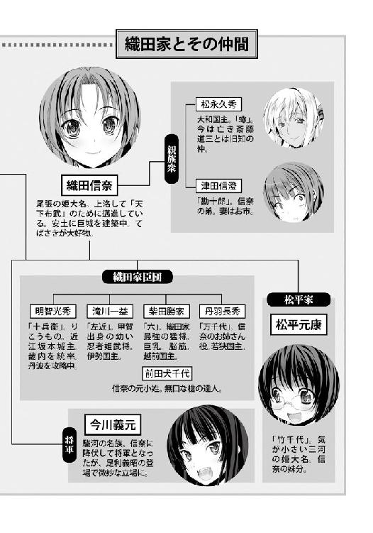

| 織田信奈の野望09 | |
| 春日みかげ | |
| SBクリエイティブ株式会社 (2012) | |

織田信奈の野望９
春日みかげ

本書に掲載されているコンテンツの著作権等の知的財産権およびその他すべての権利は、ソフトバンク クリエイティブ株式会社または正当な権利を有する第三者に帰属します。
本書の内容を権利者の許諾なく複製・複写・翻案・放送・出版・データ配信（送信可能化を含む）などすることはできません。
カバー・口絵 本文イラスト
みやま零

「竹中半兵衛さまが病で倒れられたそうです」
「......半兵衛が」
「はい」
播磨。
毛利軍の先鋒、宇喜多直家が本陣としている書写山の地下牢。
宇喜多直家を調略しようとして幽閉されてしまった黒田官兵衛が、鉄格子をへだてた二人の来客と小さな声で話をしていた。
黒田官兵衛は、この播磨の出身。幼い姫路城主。
美濃の竹中半兵衛と並ぶ天才軍師として世に知られている。
だが今は、こうして狭い地下牢に押しこめられ、飢えと渇きそして孤独と戦う、かよわい一人の少女でしかない。
「あの......おにぎりです。官兵衛さま」
直家の目を盗んで、この育ちのいい幼い娘とその付き人らしい異国人風の少女が、官兵衛のもとへ食べ物や水を差し入れてくれる。
この二人からの差し入れと「言葉」がなければ、官兵衛はすでに心身ともに限界に達し、どうなっていたかわからない。
相良軍団入りしている旧尼子家家臣・山中鹿之助が直家のもとに出頭しなければ、官兵衛は、毛利本軍の到着とともに首を刎ねられる。
そして、それよりもなによりも──。
「ダメだ。半兵衛が回復するまで、シメオンは食べる気が起こらない」
「いけません。今は、生きることだけを考えてください」
「弥九郎の言うとおりです、官兵衛さま」
はじめ、官兵衛におにぎりを持って来てくれた童女は、一人だった。
今はもう一人、碧い瞳を持った異国人風の少女が、加わっている。
「ほんとうにかたじけない。そろそろ教えてくれてもいいだろう。きみたちは誰なんだい」
「こちらの幼い姫は、宇喜多直家さまのただ一人の実子。秀家さまです」
「はい。秀家です」
「そうか、きみが『お父さま』と呼んでいた人物は......」
「お父さまの仕打ち、どうか許してください」
秀家と名乗る童女が、涙ぐみながら指を十字の形に切った。
「そしてわたしは、殿より秀家さまのお守り役を仰せつかっている商家の娘。日本名を小西弥九郎、洗礼名をアゴスチノと申す者」
碧い瞳の少女が、胸元にぶらさげた十字架を官兵衛に近づけてみせた。
「きみたちはキリシタンなのかい」
「はい」
「キリシタンの道に秀家さまをお誘いしたのはこの弥九郎です。堺で商家をいとなんでいる父も、義理の母も、熱烈なキリシタンなんです」
「堺の小西家といえば......もしや、お父上は小西ジョウチン殿？」
「そうです」
「堺か、懐かしいな。でも小西殿の娘がなぜ、備前の宇喜多直家のもとに？」
「わたしは備前の知人の店に奉公していたんです」
「堺と備前ではずいぶん距離が......」
「別に、もめごとを起こして堺から逃げていたわけではありません......よ？」
どうやら、弥九郎は堺でなにかやらかしたらしい。
「ゆえあって備前に引っ越したんだね。そこに直家から声がかかった？」
「はい。殿はただ一人の後継者である秀家さまに、徳に満ちた主君になってほしいとお考えでした。そのため、熱烈なキリシタンのわたしがお守り役に選ばれました」
人間とは複雑なものだ、と官兵衛は思った。
謀略、謀殺、暗殺、毒殺、騙し討ち。
小身から備前・美作の大名となった宇喜多直家は、邪魔になる男はかたっぱしから殺すか、失脚させるか、とにかく手段を選ばず卑劣な手で蹴落としてきた。
女はことごとく利用して、謀略の道具として扱ってきた。
そんな、悪名を欲しいままにして生きてきた宇喜多直家のような男が、自分の娘には熱烈なキリシタンのお守り役をつけているとは。
それも、徳に満ちた主君として英才教育するために。
官兵衛は、意外な思いに打たれた。
「お父さまは、生きのびるためにこれまでたくさん悪いことをしてきました。しかし乱世が終焉に向かっていくこれからの時代、自分のような鬼畜はもう居場所がなくなる。跡継ぎとなるこの秀家には、領民や家臣に慕われる徳にあふれた人間になってもらいたいとお考えです」
幼い秀家が、とつとつと語った。
奸悪無限の将と呼ばれている父親とは違い、純朴な娘らしい。
幼いながらも気品にあふれ、どこか修道女のような雰囲気さえかもしだしている。
だが、小西弥九郎をお守り役に抜擢してそのように秀家を育てたのは、あの全身が狡知のかたまりのような宇喜多直家なのだ。
「そうか。宇喜多直家はやはり知恵者だな。でもそこまで未来が読めているならば、なぜ自分の生き方を変えようとしないのだろう」
「殿は『オレはどうせもう地獄行き決定だからな』とキリシタンの教えにも耳を傾けてくれません」
弥九郎が不満そうにほおをふくらませた。
「それとシメオンさま。わたしが抜擢された理由はもうひとつあります。航海術です」
「航海術」
「堺から博多へ、さらに博多からその先の外国まで。わたしは幼い頃より、船の上で暮らしてさまざまな世界を見てきました。このとおり見た目が南蛮人っぽいので、外国では押し出しがきくんです」
「船か。このシメオンも、いつか大船に乗って海を渡るという夢を持っていた、が......」
処刑の刻限は迫っている。
毛利本軍がこの播磨に到着した時、官兵衛は処刑される。
狭い地下牢に栄養が足りない状態で押しこめられていたために、下半身の筋肉がかたまってしまっている。
もしも鍵を手に入れてこの地下牢を抜け出せたとしても、今の自分は立ちあがることもできない。
夢が夢のままで終わろうとしている、と官兵衛は思った。
「神はシメオンさまを決してお見捨てになりません。相良良晴さまを信じましょう」
「はい。官兵衛さまの言うとおりのお優しい人なら、きっと来てくれます」
「シム。あいつは優しすぎて、命がいくらあっても足りない男だよ」
「一度会いましたが、見た目はぱっとしない人でしたけど」
「見た目は並以下だけど、肝っ玉だけはでかいやつなんだよ」
「では必ずシメオンさまを救いにきてくれますね。わたしたちも、その機会を待ちます」
「無理だよ。足の筋肉がかたまってしまって歩けない。それにシメオンを逃がせば、きみたちにもとがが及ぶぞ」
「くすん。秀家はお父さまに、これ以上悪事を重ねてほしくないのです。女の子は決して殺さない、それが鬼畜と呼ばれるお父さまが見せてくれる、ただひとつのお優しい美点でした......」
「わたしたちはキリシタン仲間です。きっと鍵を見つけだして、シメオンさまをお救いします」
「ただ、この秀家と弥九郎の二人だけでは......」
「外部の人間、つまり相良良晴さまの助力がなければ、難しいですね」
相良良晴はきっと来るだろう、と官兵衛は思った。
その時を信じつつ、今は少しでも体力と気力を温存し、これ以上心身が衰弱しないように耐えるしかない。
そして、自分自身の運命よりももっとずっと、大切なものが今の官兵衛にはある。
（──半兵衛は、生きられるのだろうか。相良良晴は、半兵衛を救えるのだろうか。半兵衛のためにシメオンができることは、祈り以外にないのだろうか）
この戦場で生涯の親友となった天才軍師、竹中半兵衛の命、であった。
わが妹・松寿丸は半兵衛によって命を救われているはず。
次は、自分が半兵衛の命を救わなければならない。
（絶対に生きのびる。生きのびて、半兵衛のもとへ）
官兵衛は喉を通ってくれないおにぎりを、気力だけでむりやりに飲みこんだ。
胃の具合がおかしくなっていて、わずかな食べ物をおなかに入れても栄養になってくれないのだ。
でももう、涙は流れない。
自分が泣く時は、半兵衛と再会した時だ、と心に決めている。
※
「小早川、吉川。織田信奈との決戦はまだなのかの」
「あと数日のうちに、われら毛利軍、播磨に到着いたします」
「今、尻に火がついとる宇喜多直家が必死で播磨を攻めておるけぇ」
「そうかそうか。ならば、そこに毛利軍の本隊が播磨入りすれば勝敗は決するということじゃな！」
毛利軍の本陣内で、足利家新将軍の足利義昭が「めでたいのう」とくるくる舞を舞っている。
幼い義昭の左右にはべるは、双子の美少女武将「毛利両川」。
小早川隆景。
吉川元春。
幼い毛利家の当主・輝元を補佐し、実質的に毛利家を仕切っている姉妹だ。
「断言はできかねますが、今のところは、わがほうの有利に進んでおります」
妹の小早川隆景は「明智の将」と呼ばれる物静かな知将。
常に弓を手放さない。
「お好み焼きの本場は中国じゃけぇ。上方のエセお好み焼き屋どもと勝負じゃ」
姉の吉川元春は「剛勇の武将」、毛利家きっての武闘派で居合の達人。
頭に「毛利上等」の日の丸鉢巻をまいて、妹との差別化をはかっている。
黙っていると、どちらがどちらだか、はためには区別できないからだ。
「姉者。将軍さまの前です。安芸弁はしばらくお控えいただきたく」
「うう。すまんの。隆景」
口を開くと、すぐに区別できてしまうのだが。
中国地方の覇者・毛利家は、明から戻って来た正統新将軍・足利義昭に「上洛させてたもれ」と頼られ、織田家と決戦するべく腰をあげた。
幼い当主・輝元は安芸でお留守番。
毛利両川が足利義昭を奉じて本拠地の安芸から大軍団を出立させ、備後、備中へと進み、すでに備前へと入っていた。
山陰山陽十カ国を支配する毛利家の東側の版図は、この備前までだ。
備前の東隣は、もう、毛利方の宇喜多直家と織田家の相良良晴が激闘を繰り返している播磨である。
播磨を抜けば、摂津。そして摂津を抜けば京。
浅井朝倉を滅ぼし急激に勢力を拡大した織田家の兵力は、今、四方八方に分散している。
戦線を複数抱えているのだ。
知将・小早川隆景は「織田家を叩くなら、織田信奈が畿内での支配体制をかためていない今」と読んでいた。
猛将・吉川元春はそのような複雑なことは考えていないが、とにかく「将軍さまに頼られた以上は、全力で上洛する」と気合いじゅうぶん。
元春が勢いこんでいるのには、もうひとつ、理由がある。
「尼子家の残党を率いる山中鹿之助が織田方につくはず。自分は、こんどこそ一騎打ちで鹿之助を倒す」
かつて中国の覇王の座を巡って戦ってきた仇敵、出雲の尼子家。
尼子本家はすでに滅び去ったが、旧尼子家家臣の山中鹿之助という猛将が異常なまでの律儀さとあつすぎる忠義心を炸裂させ、「尼子家復興」をかかげてゲリラ戦を各地で展開。
すでに中国を制覇している毛利家の圧倒的な兵力と豊富な軍資金・兵糧の前に、少数のゲリラ兵（というとかっこいいが、内実はほとんど落ち武者）を率いる山中鹿之助が勝ちきれるはずもない。
そもそも、尼子家の元当主がすでに毛利に降伏して優雅な隠遁生活に興じているのだから。
だが山中鹿之助の空気読まなさは異常で、多勢に無勢とばかりに倒されても倒されても、「我に七難八苦を与えたまえ！」と叫びながらしつこく毛利家に戦いを挑んでくるのだ。
しかも、鹿之助の知謀は限りなくゼロだが槍をとらせればやたらに強いので、毛利方はこれまでさんざん手こずってきた。
いちどなどは苦労して鹿之助を捕らえたが、毛利家に仕えるよう説得しているうちに厠をくぐられて脱走され、またしても蜂起される始末。
鹿之助は戦バカの猛将だが、出雲屈指の美少女としても名高い。
毛利方の足軽どもが「さんざん手こずらせよって」「痛い目にあわせちゃる」と猛り狂って鹿之助がいる牢の前までつめかけたが、捕囚の憂き目にあってなお気高く美しい鹿之助の姿を見るなり「なんと麗しい姫じゃけぇ」「わしらには殺せんけぇ」とひれ伏して下僕のように骨抜きになり、以後は毎日せっせと広島焼きを差し入れまくったというほどだ。
それほどの姫武将が。
まさか、よりにもよって厠をくぐるとは。
囚われた鹿之助は、ある日、門番たちに、
「はずかしくて言いだせなかったが、広島焼きがあわなかったのかおなかが痛い。もう我慢できぬ、どうか厠に。はぁはぁはぁ」
と全身をほてらせて汗みどろになって懇願し、その身震いぶりがただごとでなかったために興奮......いや心配した門番たちに百回以上も繰り返し厠に連れていってもらい、それでも鹿之助の腹痛と異常な発汗と痙攣と動悸はおさまらなかった。
花もはじらう姫武将の羞恥と苦痛に悶える姿を見せ続けられて興奮......いや、見かねた門番たちが「おかわいそうに」と薬を求めに行った隙に、なんと、鹿之助は厠をくぐって城の外に逃げていったという。
その報告を聞いた元春は、思った。
乙女が、厠をくぐるだと？
おのれはお嫁に行きたくないのか！
単に、想像を絶する苦難を受けてもがき苦しむのが好きなのか。
それとも、それほどまでに毛利家にたてつきたいのか！
貴様にとって、われらが毛利家は厠以下なのか！
う●こ以下なのか！
激怒した元春は「情けをかけるのは一度までじゃけぇ」と、以後、鹿之助を終生の敵と定めて追い回しているのだった。
「将軍さま。戦はもうすぐじゃ。山中鹿之助は自分が必ず討ち取るけぇ！」
「おお、よくわからぬが燃えておるの、吉川」
「毛利家をう●こ以下呼ばわりしたあやつだけは許せぬ、しごうしたる」
隆景がひとつ、軽く咳払いした。
「こほん。姉者。戦場での一騎打ちはお控えくださるよう」
「なぜじゃ隆景」
「なぜもなにも、姉者は毛利家を支える屋台骨。毛利家を大名にのしあげた初代、われらが父上元就公はすでに亡く、毛利家二代目を襲名された兄上は早世。三代目はまだ幼い。この上、姉上が欠ければ毛利家は終わる」
毛利家はそうとうに古い土豪の家系だが、大名になったのは毛利両川の父・毛利元就の代からである。
ゆえに毛利家では、この毛利元就を、初代と呼ぶ。
初代に、一人の息子と二人の娘あり。
息子が、元就から毛利家二代目の代紋をはやばやともらった、毛利隆元。
さわやかで誠実な人柄は、陰謀のかたまりで合戦好きで策士の父・元就とは正反対だった。
しかも美男子だった。
好戦的な父と姉妹が広げるだけ広げた毛利家の版図を立派に統治してみせたのは、この二代目隆元だ。
二人の娘が、吉川元春と小早川隆景。
二人とも毛利家のライバル豪族の家に義妹として送り込まれ、元就の策謀に従ってお家を乗っ取り、毛利家の大黒柱となって現在に至る。
全身これ謀略のかたまりである初代元就と、その知勇をそれぞれ受け継いだ双子の毛利両川が次々と領土を拡大し、早くに二代目を襲名した徳人の隆元が新領地を統治して領民を慰撫する。
これが毛利家の強さの秘密だった。
「......兄者は毒殺されたのじゃったな。毛利家でもっとも徳にあふれていた兄者が。あれほど心清きおのこを自分は見たことがない。いまだに信じられん」
強気な元春が、目をしばたたいた。
義昭が「......」と元春の肩を叩いた。
「姉者。兄者は徳あればこそ、人を疑うことなく毒を喰らったのだろう」
「おう。あの腹黒いおやっさんが毒なんぞ喰らうはずがないからのう。むしろ素知らぬ顔をして人に毒を喰らわせるほうじゃった」
「その父上も、兄者が倒れたあとは、すっかり人が変わられた」
「『因果応報とは言え、なぜわしではなく隆元どのが』と嘆き悲しむあまり、いきなり老け込まれたのう。『天下を望むな』が口癖となってしもうた。最期は大往生じゃったが、天下を奪うという野心を捨ててしまわれた」
「父上は、兄者の遺児である三代目・輝元さまをわれら姉妹に託された。三代目はまだ幼い。この乱世に、幼い当主では先行きが厳しい。せめて兄者のお子は生かし続けたい、と望まれたのだ」
隆景は「これは私の個人的な考えだが」と言い添えてから、元春に打ち明けた。
「父上は、生まれてきた家があと少し大きければ確実に天下を盗っていた一代の英傑。ただ老いて弱気になっていたわけではない」
「というと？」
「かつて父上は海外貿易で巨利を得ようとして、大友宗麟と北九州の覇権を巡り争っていた」
「おう。北九州はまこと、おそろしい修羅の国じゃったのう」
武闘派の元春が「おそろしい国じゃった」と漏らすほど、北九州は壮絶なところらしい。
「中国を留守にするとすぐに山中鹿之助がわいて出てきて暴れまわるけぇ、九州のシマをあきらめざるを得なくなったんじゃ！ 鹿之助さえいなければ！」
「父上は北九州で、大友宗麟の異才ぶりに驚かれたのだ。大友宗麟は南蛮貿易で大量の鉄砲を、そしておそるべき兵器である大筒を手に入れていた。さらには宣教師たちを保護して南蛮寺を各地に建て、わが毛利家との戦においても南蛮船を味方につけて砲撃させた。かの者の領土はまるで異国さながら」
なんと。北九州はそんなことになっておるのか、と義昭が意外そうに声をあげた。
剣にすべてを捧げている元春は、南蛮などおそるるに足らず、と信じて疑わない。
「たしかに北九州は修羅の国じゃが、大友宗麟はただの南蛮かぶれじゃ。神仏をおろそかにして異国の神を祀るなどもってのほか。今に大友の家臣団は四分五裂する」
たしかにそうかもしれない。しかし、天下の知恵者である隆景は、その先を考えていた。
「姉者。『毛利家は天下を望まず』。この父上の遺訓は、天下争いがこれ以上長引けばこの国は南蛮の領土にされてしまうという危惧から出たものだと私は思う」
「うう。は、話が難しいな、隆景」
「この乱世はもう百年も続いている。この国は百年の長きにわたり停滞していた。その間に、南蛮諸国はめきめきと力をつけ、はるか海をへだてたこの国にまで船でやってくるようになった」
「うう。もう少しわかりやすく説明してくれんか」
「南蛮は強い。船だけでなく、武器も桁外れに強い。宣教師どもの精神力はもっと強い。父上は、強力な南蛮諸国との接触がはじまってしまったこの国は一刻も早く統一されるべきであり、そうでなければいずれ彼らに飲みこまれてしまう、毛利家はそれを阻むために私を捨てて日ノ本という国のために尽力しなければならない、と言いたかったのではないか」
「天下人の下風にたてと？」
「そうではない。今、天下を争う英雄は数知れず。毛利家は、天下人にふさわしい英雄を、見定めるのだ。それだけの力を、毛利家は持っている」
「天下人の器たる者が、誰もおらねばどうなる？」
「その時は、毛利家自らが天下人となる。亡き父上も決して叱るまい」
今、天下人にもっとも近い存在は、畿内を押さえた織田信奈だ。
隆景は、「織田信奈は乱世の英傑か、それともこの国を滅ぼす第六天魔王なのか、われらはこの戦いで織田家の真の姿を見極めねばならない」と姉に、そして足利義昭に語った。
「隆景。あれは魔王に決まっちょるけぇ。意に沿わぬ叡山を焼こうとし、上京は実際に焼いたちゅうぞ。だいいち斎藤道三、松永久秀と、天下三大悪人の二人までも仲間にしたけぇ」
そうじゃ。足利将軍家を京から追放したのは松永久秀じゃ！ あんなのとつるんでいる織田信奈は謀反人じゃ！ と義昭がカン高い声をあげた。
「まあ、松永久秀にお手紙は出したがの。わらわの味方になれば罪は帳消しにしてやってもよいのじゃ、という寛大なお手紙をの。わらわは器がでかいのじゃ」
「さすがは将軍さまじゃ。あやつは謀反常習者じゃけぇ、乗ってくるかもしれんのう」
「姉者。毛利家も人のことは言えない。天下三大悪人の一人、宇喜多直家を仲間としている」
「ありゃあ打ち首が当然のところを、お前が助命したんじゃ！」
「毛利家は律儀が大事なお家。降伏した者は殺せぬ。ひとたび降伏して脱走した山中鹿之助は別だが」
「織田家は違う。織田信奈はのう、悪人と気があうんじゃ」
「姉者。毛利家初代の父上が悪か善かと問われれば、これはもう策謀の権化とも言うべき大悪人であった。天下を望む以上、世に悪人とそしられる覚悟は引き受けて当然。手を汚さずに天下を盗ることなど誰にもできぬ」
隆景の目は常に、毛利家の向こうを、ずっと先の未来を見ている。
隆景は、元就からその知謀を受け継いだのだ。
元就から武勇を受け継いでいる元春も、言葉のやりとりとなると妹に勝てる気がしない。
姉妹は、お互いがお互いに欠けた部分を補いあっていることを知っている。
「おう、それはそうじゃ」
元春は素直に、隆景の言葉を聞いてうなずいた。
これが元春の美点だ。心根が、素直でさわやかなのだ。
「さんざん裏切りや陰謀を重ねてきた毛利家が律儀と評判をあげて中国の覇王になれたのは、兄者の徳のおかげじゃった。兄者がおらねば、切った張ったの出入りばかりしていたおやっさんや自分などは大悪人呼ばわりされとったかものう」
「英傑の家とはそのようなものだ姉者。策を練り戦に勝ち領土を切り取る知謀と、悪しき慣習をおそれずに破壊する勇気と、国をおさめる徳とが必要なのだ。知勇徳の三つが備わっている家こそが天下人の家にふさわしい。斎藤道三、松永久秀、宇喜多直家はみな一代の英傑であり智者だが、家中に徳者がいなかった。ゆえに天下に手が届かなかった」
「三人とも成り上がりで、頼れる郎党が少なかったからかのう」
「かもしれぬ。彼らは徒手空拳で一国一城の主に成り上がることに全知全能を使わねばならず、自分の家庭を築く余裕も、悪人の評判を払拭する徳を示す余力もなかった。特に、宇喜多直家はもっとも厳しい立場だった」
宇喜多直家は、所領を失い没落した武士の息子として生まれた。
なまじ商人や町人から才覚で下克上していく者よりも、失ったものを回復しなければならない没落武士の子のほうが、はるかに辛い、と隆景は言う。
のしあがるために妻をも下克上の道具としてきた直家は、ずっと己一人で生きてきた。
歳を重ねてから、ようやく娘が一人誕生したが、その娘もまだ幼い。
「姉者。われらが父上も、もとは宇喜多直家と同じ立場だった。両親を早くに失い、家臣に裏切られて所領を奪われ、どん底から這い上がって毛利家を再興し大大名となった」
「おう」
「父上は幸いにも家庭の幸福に恵まれ、兄者を得られた。われら姉妹も生まれた。もしも家族運がなければ、父上も今頃は宇喜多直家のように悪党と呼ばれていたやもしれぬ」
「おう。親子きょうだいがいがみあい殺しあっておるこの乱世で、毛利家に生まれてこられたわれら姉妹は幸せじゃのう。ふふっ」
「ほんとうにそうだな、姉者。ふふっ」
わらわも兄上とは仲良しじゃぞ！ と義昭が手を振っている。
おのれの才覚のみを頼りに下克上して立身した天下三大悪人は極端な例としても。
武田信玄。
上杉謙信。
大友宗麟。
大名格の家に生まれながら、家督を巡って親やきょうだいと戦わねばならなかった英傑は数多い。
織田信奈もまた、家族運がないと聞く。
生父とも義父の道三とも早くに死別し、実の弟と家督争いをした過去もあり、いまなお生母とは不和だという。
「隆景。家族とすら不和な者に、乱世を終わらせ万民を安んじることができようか。そのような業を背負っている者が巨大な力を持てば結局は疑心暗鬼を生じ、この国の民に仇をなす魔王になるけぇ」
「そうかもしれぬ姉者。父上はくどいほどにわれらきょうだいに和を説き続けた。父上がしたり顔で『三本の矢は折れぬ』と言いだして姉者があっさり叩き折った時にはあわてたが......」
「こほん。隆景、その話はなかったことにしたはずじゃけぇ」
「そうだったか？」
「隆景。家族の和を条件のひとつと考えれば、天下人はやはりわれら毛利家しかおらぬ」
「そうかな？」
「東国はよく知らぬが、西国で家族の和を誇れるのは薩摩の島津家くらいじゃけ。だが薩摩は都から遠すぎる」
「織田家は人材豊富。あるいは兄者のような徳人がいるかもしれぬ」
「兄者のような徳人が？ 評判を聞く限り、いそうにないが......あのようなすばらしきおのこはもうどこにもおらぬ、隆景」
「男とは限らない。姫武将かもしれない。男か女かなど、どちらでもよい」
「じゃが兄者のようなよきおのこが見つからぬ限り、自分は夫を持てぬ。兄者がよきおのこすぎた。困ったの、うう」
「......それは私もだ、姉者。兄者がすばらしすぎたために、男性を愛せぬ。誰を見ても兄者と比べてしまい、失望してしまう」
「なあ隆景。知恵者なら答えられるじゃろ。われらはもしかして生涯を独身で終えるのじゃろか？」
「......」
「ちちち沈黙するなっ！」
しばし二人とも痛すぎる問題に気づいてかたまってしまったが、隆景が先に気を取り直した。
「こほん......ともあれ、われらはこの戦いで織田家の真の姿を、見極める。奸悪無限の宇喜多直家がその役にはふさわしい。織田信奈は追いつめられたぎりぎりのところで魔王の素顔を出すのか、織田家臣団はばらばらになるのか。それとも」
「織田信奈が大英傑として覚醒し、家臣から徳人があらわれるか」
「これは織田家にとっての賭けであり真の天下人になれるかどうかの試練」
「......ふう。隆景、お前はほんとうに先の先まで深いことを考えておるのぅ。戦バカの自分にはとても無理じゃけぇ」
「なに。一生は、夢の間なれば」
隆景が涼やかな微笑を浮かべた。
元春には、その言葉の意味はよくわからない。
常に毛利家とそしてこの国の未来を案じている隆景の心には「私」というものがほとんどないのだろう、いや、生まれながらに人並みの「私」は持っているが、その「私」を抑制して表に出さないという超人的な生き方を隆景は己に強いているのだろう、ということだけは理解できた。
「お子さまにはちと理解し難い話をしておったが、つまり親子ゲンカしている織田信奈はダメ。天下人は兄上と仲良しの足利義昭さましかおらぬということじゃな！ ほっほっほ！」
まだ幼い足利義昭は、さらによくわからなかったらしい。
※
毛利軍が播磨に到着するまで、あと数日。
その播磨では、宇喜多直家と相良良晴の攻防戦が続いている。
信奈から対毛利戦を一任されてしまった相良良晴は、播磨の中心部に位置する姫路城を拠点に、宇喜多側に寝返った三木城を包囲。
宇喜多直家は、姫路城の北西にある要害・書写山を本陣として、良晴の軍師・黒田官兵衛をこの書写山の地下牢に閉じこめていた。
毛利家の先鋒として播磨に侵攻した宇喜多直家が、毛利両川から与えられた任務はふたつ。
播磨内に拠点を確保し、毛利本軍の露払い役をつとめること。
これはすでに、書写山を奪った時点でほぼ達成されている。
ただ、相良軍団の退路を断つために調略で奪った東播磨の拠点・三木城をこれまでに誰も見たことがないような規模で包囲されてしまったことは誤算だったが、相良軍団は寡兵だ。三木城を包囲こそすれ、力攻めで落とすことはできない。
もうひとつの任務が、難題だった。
さんざん毛利家を悩ませてきた宿敵・山中鹿之助を捕らえること。
これは、まだ、達成されていない。
山中鹿之助は予想通り相良軍団に合流して、播磨で暴れ回っている。
毛利本軍が到着するまでに鹿之助を捕らえねば、おそらく、宇喜多直家は領地を召しあげられる。
これまでさんざん陰謀と暗殺を繰り返して領地を奪ってきた直家だ。
毛利家だって、もともとは敵だった。
直家が支配する備前・美作の地が膨脹しつつある織田家と毛利家のあいだに挟まれる形になると読み、生きのびるために「律儀」で知られる毛利家側についただけである。
向こうからも信用されていないが、こちらだって忠誠心などないに等しい。
任務を達成できなかったことを理由に領地を召しあげられても文句は言えない、それどころか切腹させられてもおかしくないことくらいは自覚している。
ゆえに、直家もまた必死だった。
毛利本軍が到着するまでに、黒田官兵衛とひきかえに山中鹿之助を差しだせ、さもなくば黒田官兵衛は処刑する。
そう相良良晴に通告したのだ。
毛利本軍が播磨入りするまでに決断しなければ、良晴はかけがえのない仲間である官兵衛を失う。
しかも。
もう一人の軍師・竹中半兵衛が、病に倒れ、死の危機に瀕していた。
前鬼によれば、半兵衛の命を長らえさせるためには、東大寺正倉院におさめられている宝物・蘭奢待が必要であるという。
蘭奢待はやまと御所の秘宝。
やまと御所と信奈の許可なしに、切り取ることはできない。
だが、京の信奈もまた上京の大火の折に倒れ、本能寺から出てこられない。
信奈に会おうとしても、新参者の小姓に邪魔をされて会わせてもらえない。
良晴はやまと御所の姫巫女さまに直接会って蘭奢待を所望しようとしたが、関白・近衛前久に阻止されてここぞとばかりに蹴りつけられ、血みどろにされた。
半兵衛も官兵衛もこのままでは助からない。
信奈の様子もおかしい。
尾張・美濃以来の織田家の仲間たちは各地へ散ってしまっている。
すべてが行き詰まっていた。
しかも、良晴が京へのぼっていた一瞬の隙に、鹿之助が官兵衛を救うため自ら書写山の宇喜多直家のもとへ向かってしまった。
相良良晴は、今、最大の窮地に立たされていた。
自分が討ち死にすることよりも、仲間を救えずに死なせてしまうことのほうがはるかに辛い。
言葉だけのことでなく、ほんとうに、そうなのだ。
自らの死は一瞬だ。
だが、自分が無力だったばかりに仲間を救えなかったという後悔は、死ぬまで消えない。
良晴はそのことを思い知った。
そして信奈と自分の夢のためにその命を捧げてくれた半兵衛の生き様から、もうひとつ、教わったことがあった。
それは──。
「待ってくれ！ 鹿之助ちゃん！」
ついに追いついた。
姫路城から書写山へ向かう途上。
夢前川の畔で。
良晴は力の限り馬を飛ばし、鹿之助に追いついていた。
その頭上では。
夜空に、あかあかと妖しげな光を放つ彗星──ほうき星が、その姿をあらわしている。
鹿之助は、武具をつけていなかった。
三日月鹿角の兜もかぶっていない。
すでに死を覚悟しているのだ。
「良晴さま？ なぜ来たのです！」
鋭い視線で、良晴をにらみつけてきた。
すでに決めたことだ。
今さら、心を乱されたくない。
そう、訴えてきている。
が、良晴は、胸を張って答えた。
「引きとめるために決まっている！」
「だから、なぜなのです？ 引きとめれば、官兵衛どのが処刑されるというのに」
「宇喜多直家が約束を守るものか。このまま行かせても官兵衛は戻ってこない！ それに」
「それに？」
良晴は、馬から飛びおりた。
脇目もふらずに、鹿之助のもとへと走った。
鹿之助の馬が、夢前川に乗り入れてしまう前に。
「俺は絶対に仲間を見殺しにしねえ！ 二度と、誰を救うかで迷ったりしねえ！ ぜんぶの実をおさめちまう、でかい袋になる！ そう決めたんだ！」
「......あなたの仲間などではありません。私は」
鹿之助も、馬からおりていた。
だが良晴を迎えるためではない。
全身に、殺気をみなぎらせていた。
「私は、尼子家再興という自分の志のために戦っていただけです。織田家に忠誠心などありません。ただ織田家の軍事力を利用していただけです。まして、どこの馬の骨とも知れないあなたになど」
その身に武具を帯びていなくても、鹿之助は強い。
それでも良晴は足を止めない。
鹿之助はせいいっぱいの罵詈雑言を浴びせて、良晴の心を折ろうとしている。
良晴がけんめいに伸ばしている手を、指を、振り切ろうとしている。
だが。
その唇は、悲しげに震えていた。
良晴を傷つける言葉を口にすることに、唇が耐えられないのだ。
なんて噓をつくのが下手なんだ、と良晴は思った。
「噓つけ！ だったら、どうして官兵衛を救うために死を選んだ！」
「尼子家の再興をあきらめただけです。織田軍がこれほど弱いとは知らなかったのです。私は夢を失ったのです。だからもう、死のうと思ったのです！」
「噓だ！ 絶望している人間が、そんな目をするかよ！ 絶対に連れ戻す！」
「口ではなんとでも吼えられます。私に勝てますか!?」
「勝つ！」
「勝てません！」
身をかがめて手を伸ばし、腰に抱きつこうとした。
届かない。
届く前に、腹に、鋭い膝が入った。
胃の中のものをぜんぶ吐いてしまいそうな衝撃。
良晴の身体は文字通り、吹き飛ばされた。
川に落ちた。
冷たい。
氷水のように冷たい。
這い上がった。
「なぜ逃げないのです。逃げるのは、あなたの得意技のはずでしょう」
「......逃げねぇ」
えづきながら、もういちど、鹿之助の前に立った。
「あなたは、逃げる以外に特技がないはずです！」
そのとおりだ、と良晴は思った。
「......そうだ。俺は弱い。本来、戦国の世で武士をやってられるタマじゃねえ。球よけのヨシと呼ばれる回避能力がなけりゃ、俺はもう数え切れないくらい死んでいただろう」
「だったら......！」
「だが、山中鹿之助。お前からは、逃げない」
「もう、ほうっておいてください......！」
「大将の俺が弱いから、半兵衛も官兵衛も、お前も、みんな自分一人でなにもかも背負い込んでこんなことになっちまったんだ！ これからは違う！ 俺は強くなる！ 相良軍団のほんものの大将になってみせる！」
「私の蹴りを二度も三度も正面から受ければ、ほんとうに死にますよ！」
「それでも。絶対に、引きとめる！」
「なぜです！ なぜ、そこまで」
「目の前で、仲間が死のうとしているんだぞ！ 助けるのに、理屈なんかいるか！」
奥歯をかみしめ、力をふりしぼって、再び、鹿之助の間合いへと突進した。
腰に抱きつくのは無理だ。
足を狙った。
こんどは、肘だ。
背中に、肘が突き刺さった。
気がつくと、砂利をかんでいた。
顔面から、地面に激突していたらしい。
鹿之助の、泣きだしそうな声が頭上から響いてきた。
「......今の肘は......かわせたはずです......！」
良晴には、逃げるつもりがない。
鹿之助の攻撃はぜんぶ、受けきる覚悟でここまで来た。
まだ生きている。
だから、立ちあがる。
目がくらみ、膝が震えても、まだ立ちあがることができる。
「もう立たないでください！」
良晴は思った。
半兵衛がどれほど苦しくても最後まで休もうとしなかった理由が、やっと俺にもわかった。
今になって、やっと。
運命に立ち向かって、押しつぶされそうになっている仲間が、目の前にいる。
もういいかな、俺はせいいっぱいがんばったからな、もうここまででいいよな、と途中であきらめられるはずがない。
「......官兵衛は、世界一の知恵者になるのが夢で、海の彼方の世界に行きたくて、信奈のもとに来た。天下布武を夢見る信奈のもとへ」
「......なんです？」
「だからって、官兵衛と信奈が見ている夢が別のものだとは、俺は思わない」
「だからなんなんです......!?」
「二人は同じ夢を共有した。たとえ最後に目指している目的地が異なっていても、二人は同じ道を歩んだ。だからもう、あの二人は友だ」
「私は関係ありません！ 出雲の尼子家など、あなたたちにとってはどうでもいい存在です！ 私は時代に取り残された、ただの田舎者で......」
「この世界に来て以来、俺は自分一人の力で信奈を救うことばかり考えていた。それじゃダメなんだ。俺一人の力じゃ足りないんだ。必要なのは俺の志を受け継いでくれる仲間だ。俺はバカだから、気づくのに時間がかかりすぎた。でも、まだ、間に合う」
もういちど、正面から。
良晴は、鹿之助の腰に抱きつこうと、構えた。
でももう、最初のタックルのようなスピードは出せないだろうな、とわかっている。
膝が笑ってしまっている。
こんどこそ、膝をあわせられてあごを砕かれるかもしれない。
「いいかげんにしてください！」
鹿之助が号泣する姿を、良晴ははじめて見たかもしれない。
「私は出雲の外のことなどなにもわからない田舎者なのです。尼子家に忠義を尽くすこと以外、なにもできない役立たずです。私などのためにここで死んでどうするのです！」
「こんなに強いのにさ。自分をそういうふうに言うの、悪い癖だぜ」
飛びこんだ。
「俺の世界では、戦争とか武将ってのは、男の仕事だったんだ。女性軍人ってのもいたけどさ、基本的には男がやることだった。それなのにさ」
「もう、やめてください......！ これで、終わりにします！」
「ほんとうにさ。山中鹿之助は、すげぇよ。信奈も、官兵衛も、半兵衛も──」
電光石火の回し蹴りが、飛んできた。
側頭部に爪先が入っていた。
参ったな。膝じゃなかった。
どれほど痛めつけても、体を破壊しても、俺はあきらめない。
だから脳を揺らして問答無用で失神させるつもりらしい。
「......倒れねえぜ......！」
踏みとどまった。
崩れ落ちそうになったぎりぎりのところで、足を踏ん張って、再び上半身を起こしていた。
鼻の奥からあふれてくる血が止まらない。
うわやべえ、と思ったが、もうこうなったらどこまで行っても同じだ。
「なぜです。なぜ、私などのために、そこまで──」
「わけわかんねえこと言うなよ？ 俺は鹿之助ちゃんに少なくとも二度、命を救われてるんだぜ。上月城と、この夢前川でさ......ふごっ？」
あれ。うつむいてしゃべってたら、鼻血が口の奥にあふれてきた。
これじゃ、しゃべれねえ。ぺっ。
上を向かなきゃ会話続行は無理だな、と良晴は気づいて、やけくそぎみに胸をそらした。
「......失敬。はっきりわからない形では、もっと救われてるはずだ。いちど救うくらいじゃ、まだ足りねえだろ？」
「私は、ただ尼子家のために戦っていただけです！ あなたのためじゃありません！ 滅びた大名家の遺臣など、しょせん捨て駒なんです！ 尼子家への忠誠心を捨てない限り、使い捨ての傭兵です！ 仲間なんかじゃ......！」
山中鹿之助は、出雲の大名・尼子家の家臣の子として生まれ、尼子家が滅亡するまで毛利家と戦い続けてきた。
尼子家が毛利家に敗れて滅亡したあとも、鹿之助は誰にも仕官せず「尼子家再興」をかかげて毛利家と戦い続けた。
尼子の残党を率いて戦ってきた鹿之助はこれまで、何度も味方に裏切られてきた。
いくたびも、盟友と誓った者たちに、寝返られてきた。
あと少しで尼子家を再興できるというところで。
最初の再興戦では、対毛利同盟を組んでいた盟友にここ一番というところで裏切られて、まさかの大敗北を喫した。
毛利元就は、全身が策略のかたまりのような奇才であり、調略の名人だったのだ。
一方、愚直な鹿之助は、「仲間を信じる」ことしか知らなかった。
主家の尼子家は毛利元就の策略によって互いに疑心暗鬼を生じ、内輪もめを繰り返し、半ば自滅していった。
そのようなさまを幼少の頃から見てきただけに、鹿之助は、「私は決して人を裏切らない、人を疑わない、人を騙さない」と心に誓っていた。
鹿之助がどうにか勢力を挽回して出雲で毛利軍と再び決戦した時には、かつて尼子家の領民であったはずの出雲の住民に裏切られ、守っていた拠点に連なる間道を毛利軍に知らされて敗れた。
すでに出雲の領民の心は毛利家に移り、尼子家の再興を願っている領民はほとんど残っていないのではないか──。
そう思い知らされながらも、鹿之助は夢をあきらめることができなかった。
毛利家に私怨はない。
ただ、自分が仕えた尼子家がこのまま滅び去り忘れられていくことを、阻止したかった。
力だけの乱世に、自分のような時代遅れの人間がいても、いいのではないか。
力がすべてを決し、裏切りや下克上を当たり前と考えている人々の心が変わらなければ、この乱世は終わらないのではないか。
乗り越えることができない七難八苦が襲いかかってきても、死すまで忠義を貫き通す者が、あらわれなければならないのではないか。
だから、尼子家を滅ぼした毛利元就が病没しても、鹿之助は戦いをやめなかった。
しかし、いつからだろう。
同じ夢を見る仲間が、同志が、次々と消えていったのは。
出雲の東側にある国・因幡に戦線を移した頃からだったかもしれない。
因幡の大名・山名豊国が家臣の下克上によって居城から追われていた時、浪人中だった鹿之助は「尼子家再興に助力してくださるのなら、私と尼子十勇士が因幡を奪回します」と申し出て、山名豊国のために戦い因幡一国を取り戻した。
「ほんとうに、わたしのために戦ってくれたのか。因幡を自分のものにせぬのか」
山名豊国は文弱な青年で、学問や風流の道には詳しかったが、戦はからきしだった。
鹿之助がバカ正直に因幡を差しだしたことが、なにやら薄気味悪かったらしい。
山名家の家老になってくれ、と懇願してきた。
鹿之助は、受けようとしなかった。
「私はただ故国・出雲を再興したいのです」
「それではわたしの気がすまぬ。形だけでも」
「では形だけはお受けいたしましょう。出雲を奪回するまで、山名どのの力をお借りします」
山名豊国は泣いて鹿之助に感謝し、奪回した城の本丸に鹿之助の部屋をもうけ、自らは二ノ丸に入ったほどだった。
だがその山名豊国も、鹿之助との約束だった出雲奪回戦には協力しようとせず、それどころか鹿之助が因幡を離れているすきに毛利側に寝返ってしまった。
鹿之助は、心を鬼にして尼子十勇士を率い、かつての盟友であった山名豊国を攻めた。
山名豊国を憎んで、ではない。
因幡は、畿内から出雲へ至る道筋にあたるのだ。
兵糧も、因幡にあった。
その因幡から閉めだされれば、孤軍となり退路を失った尼子十勇士は出雲の地で壊滅するしかない。
だから、攻めなければならなかった。
相手は謀略を得意とする毛利家ではない。鹿之助は勝った。
だが、山名豊国を殺すつもりなど、かけらもない。
憎む気持ちもない。
誰もが利に転んで強大な毛利家に寝返る。
どうやら、そのように人の心はできているらしい。
愚直な鹿之助にも、それがわかりかけてきた。
だからこそ、鹿之助の夢はますます純粋でなければならなかった。
再会の場でおびえながら土下座していた山名豊国を起こして、鹿之助は再び懇願した。
夢を、語った。
「山名どの。因幡はお返ししますから、どうか尼子再興の戦いにお力を貸してはいただけませんか。兵は要りません。ただ、道と兵糧をお借りできればそれでよいのです」
「鹿之助どの。わたしを殺さぬのか」
「私の敵は尼子家を滅ぼした毛利家のみです」
「なぜだ。なぜ、そのように無欲なのだ」
「無欲ではありません。夢に、取りつかれております」
「わからぬ。わたしを殺せば因幡一国が手に入る。出雲を奪うには、因幡が必要であろう」
「そのような不義を働いて出雲を奪い返しても、尼子家にいったい誰がついてくるでしょうか。戦をするからには、夢が必要なのです。そうでなければ、戦はただの殺し合いにすぎません」
しかし鹿之助の夢は、山名豊国には理解できなかったらしい。
「鹿之助どの、凡夫の言葉なれどどうか聞いてほしい。そなたの夢を理解できるものなど、この乱世にはおらぬ。そなたの心は、美しすぎる。おおかたの人間はそのようには生きていけぬ」
「私は美しくなどありません。ただ、世が乱れすぎているのです。私のようなものが夢をかかげることが、この国には必要なのです」
「鹿之助どの。夢は夢として、あなたの武勇はすでに西国一帯に轟いている。他の大名に仕えてはどうか」
「私の忠誠心はあくまでも尼子家に捧げられています。二君に仕えることはできません」
「本心でなくてよい。仮の忠誠心でよいのだ。心のうちは誰にも見えぬ、鹿之助どの」
「それはできません」
「心のうちだけのことだ。裏切りにはならぬ。あなたが人を裏切るような人間でないことは、誰もが知っている」
「いえ。私は毛利家に降伏しながら、裏切って逃亡したことがあります。最初から騙すつもりで偽りの降伏をしたのです」
「それは裏切りではない。戦略だ。なぜそこまで自分に厳しいのか」
「私の夢のために多くの命が散りました。夢を、汚したくないのです」
山名豊国は感涙し、「こんどこそはわが命に代えても鹿之助どのに助力いたそう」と再び盟約を申し出てきた。
鹿之助は、その涙を、信じた。
山名豊国に再び因幡一国を返し、悲願である尼子家再興の夢を果たすべく戦場へ向かい、毛利家との戦いを再開した。
出雲奪回戦を。
......
それなのに。
鹿之助が戦場で戦っていたまさにその時、山名豊国という男は、毛利家がおそろしくなったらしい。
またしても鹿之助を裏切って毛利側に寝返ったのだ。
退路を、断たれた。
補給も、途絶えた。
味方は動揺し、毛利軍に大敗した。
またしても、鹿之助はあと少しというところで、裏切られ、悲願を果たせなかった。
山名豊国からは「心はうつろい、定まるところを知らない。これが凡人というものです」と書かれた手紙が一通、届いただけである。
この二度目の山名豊国の裏切りを知った瞬間、鹿之助の中で、なにかが壊れた。
（我に七難八苦を与えよと月には祈った。だが、人のあさましい裏切りを見たいなどと祈った覚えはない。人が信じられなくなることを望んだ覚えはない）
そう悲鳴をあげても、なにも変わらなかった。
もう、出雲どころか因幡を攻める兵力も兵糧も、なかった。
戦以前に食うにも困って、ついには盗賊に身をやつした。
夢が、汚れていく。
夢を共有していたはずの仲間が、続々と減っていった。
人を、信じられなくなっていた。
自分が尼子家という過去の亡霊に憑かれた道化者だったと、気づいてしまっている。
だから、盗賊などになってしまえるのだ。
これ以上は、限界だった。
万策尽きた鹿之助は「二君に仕えず」という自らに課してきた決まり事を破り、播磨に入ってきた相良良晴のもとに身を投じたのだ。
山名豊国の二度目の裏切りによって、心の中のなにかが砕け散ってからは、すでに目的と手段が逆転していたのかもしれない。
尼子家への忠義という言葉の美しい響きだけが、かろうじて、折れそうになっている鹿之助の心を守っていた。
だから相良良晴に仕えつつも、心の奥底は閉ざさなければ、ならなかった。
天下統一に邁進する織田家にとって、尼子家再興戦など、田舎者のどうでもいい小競り合いにすぎないのだから。
出雲など、織田家の家臣団にとっては、欲しくもない領国だろうから。
夢が伝わるはずは、ないのだから。
もう絶対に、誰も信じてはならなかった。
信じて、また裏切られれば、その時にはもう自分は人ではなくなる気がした。
鬼になってしまう、そんな気がした。
だから、心のうちで相良良晴や織田信奈に忠誠を誓ったことは、ない。
ないはずだ。
これからも──。
もう、信じた者に裏切られることには、耐えられないから。
旧主の尼子家だけが、信じられる。
なぜなら。
「......なぜなら、尼子家はもう滅びて存在しないから......だから」
だから、決して私を裏切ることはない。
「ふざけんじゃねえ！」
ほおを張り飛ばされていた。
いつのまにか。
目の前に、相良良晴が仁王立ちしていた。
怒っている。
目を真っ赤にして、怒っている。
「山中鹿之助！ お前は、亡霊じゃねえだろうが！ まだ生きてるだろうが！」
言い返せなかった。
膝をついて、顔を覆った。
「私は......ただの愚か者です......この名が後世に残れば、それで満足......です......」
「噓つけっ！ だったら、なんで泣いてるんだよっ！」
わからない。
尼子家が滅亡した時でさえ流れなかった涙が、止まらない。
「......前鬼どのに教わりました......私は尼子家を再興できません。毛利家に敗れ、斬られて死ぬのです。それが私の運命だと」
「そんなもの、いくらでも変えられる！」
「......このままでは私のとほうもない夢のために散った仲間たちに、顔向けできません。ですから、せめて最期くらいは、誰かのために......誰か他の人の夢のために」
人を、信じられなくなっていた、はずだった。
仲間に自らの夢を託した半兵衛と官兵衛の生き様に、心を打たれた。
壊れかけていた心を動かされた。
報いるには、官兵衛どのを救うには、この命を差しだすしかない、と思った。
「却下だ！ 俺は！ 志半ばで死んだなんて形で、お前の名前を後世に残させねえ！」
捕らえられた。
相良良晴に。
身体だけでなく、心も、捕らえられた。
この人は、数日会わないうちに大きく変わった、と気づいた。
「まだ生きているやつが生きることをあきらめて命を捨てるなんて、俺は許可しねえ！ それこそ、半兵衛に申し開きできねえだろうが！ 生きろ！」
「......私の夢は、誰とも」
「俺たちがいる！ 尼子家を再興してみせろ！ 俺たち相良軍団が山中鹿之助の夢の続きを一緒に見届けてやる、一緒に戦ってやる、最後まで！ だから生きろ！」
言葉に、迷いがない。
流している涙にも、偽りがない。
すべてが、本心だった。
それが、わかった。
官兵衛どのの命を救うために、私が自分の命を捨てようと決意した時。
きっと、同時に、この人も仲間を救うために自分の命を捨てたのだ。
たとえ自分が死んでも、夢が。志が仲間に伝われば、それは、死ではない。
すでに二人は、ともに、そのことに気づいていたのだ。
そうだ。
私はもう、相良軍団の仲間になっていたのだ、と鹿之助はやっと理解した。
「俺は月に誓う！ 俺は、絶対にお前を裏切らない！ 死ぬまでだ！」
主君への忠誠心だけではない。
もっと自由で広くて深い光を、鹿之助は闇の中に見つけた。
「......私も、殿を裏切りません。死ぬまで」
良晴にしがみついて、声をあげて泣いた。
※
姫路城から南に下ったところに、ひとつの漁村がある。
英賀と書いて、「あが」と読む。
英賀は、夢前川の河口部にあたる。
にゃんこう宗の猫寺や市場などが建ち並び、ひなびた風情の中にも活気があった。
漁村というよりは港町と呼んだほうがいいかもしれない。
この漁村にあるさびれた神社の境内を、良晴と鹿之助、そして前鬼がゆっくりと進んでいた。
「わが主が采配をとれぬ今、陽動作戦で宇喜多直家をひきつけて書写山から官兵衛を救いだす策を実行するならば──英賀のおばばの力を頼るしかあるまい」
前鬼が鬱蒼と茂る草木に隠れた古い祠の前で、口を開いた。
「英賀のおばば？」
「播磨の陰陽師よ。齢百を越えるとも言われておるが、実際の歳はわからぬ」
「半兵衛さまのかわりに、その方に采配をとってもらうわけですね」
と、鹿之助。
「五右衛門と川並衆を大和へ送り、蘭奢待を盗ませる任務につかせた以上、宇喜多をひきつける陽動部隊を山中鹿之助が、官兵衛救出部隊を相良良晴が率いる他はあるまい」
「この俺に忍者がつとまるだろうか？」
「私は猪武者でして、特攻は得意ですが複雑な采配をとるのは苦手です」
「だから、英賀のおばばに力を借りるのよ。陰陽師は軍師を兼ねておる者が多い。英賀のおばばはその中でも屈指の実力者だ」
前鬼が薄く微笑み、祠に向かって真言の呪文を唱えた。
ギギ......。
祠の扉が、ひとりでに開いた。
「まさか、英賀のおばばって人は、この祠の中にいるのか？」
「そのまさかよ。変わり者でな」
「祠の中が妙です。階段が、地中深くに続いていますが」
「英賀のおばばは、地下にもぐっておる」
「まるで冥府下りだな」
「やめておくか、相良良晴」
「行くに決まってんだろう」
「殿。参りましょう」
「鹿之助ちゃん。その『殿』ってのは、くすぐったいんだけど」
「殿はわが殿ですから。そちらこそ、私に対してちゃんづけはやめてください。子供扱いされているようです。きちんと呼び捨てにしてください」
「......わかったよ」
「ふん。男と男が拳で語りあってきたといった風情だな、二人とも」
「前鬼どの。私は男ではありません、乙女です」
前鬼が先導し、一行は祠の地下にもぐった。
薄暗い地下の広間には、ぎやまん製の試験管や天球儀、トカゲやミミズを飼っている箱、無数の書物、そしてぐつぐつと煮えたぎる大鍋があった。
その大鍋をかきまわしていた一人の老婆が、前鬼の姿を認めて口を開いた。
「おや？ 珍しい顔を見るもんだねぇ。こんな播磨の片田舎でねえ」
年齢不詳。百や二百ではきかないかもしれない。
ぼろぼろのマントを羽織り、一心不乱に巨大なさじをかきまわして鍋を煮ている。
陰陽師っつーより魔女のばあさんだな、と良晴は思った。
「英賀のおばば。元気そうだな」
前鬼と英賀のおばばは、訳ありな関係らしい。
「ヒヒヒ。あんた、式神になってたのかい。わしのご先祖さまは、あんたの繰りだす式神にずいぶんと痛めつけられたというのにねえ」
「なに、因果応報というものさ。今、俺はその因果を刈り取っている仕事の途中でな」
なんの話でしょう殿？ と鹿之助が良晴にたずねるが、もちろん良晴にもわからない。
「ヒヒヒ。あんたのところの陰陽師のおかげで、こちとら商売あがったりだよ。もう、式神の一匹すら召喚できやしない。播磨に関する書物を書いて食い扶持を稼がなきゃならないありさまだよ」
英賀のおばばが、くい、と尖ったあごを動かして書棚におさめられている書物の数々を指し示した。
「ヒヒヒ。これはぜんぶ、わしが暇潰しに書いたものじゃよ」
これをぜんぶ読破したのは、不肖の弟子、黒田官兵衛だけじゃったよ、と英賀のおばばは言った。「不肖の」のあたりだけ、声に力が入っている。
「わしは播磨一帯を旅して地理歴史風俗妖怪話、なんでも記録してきたからねえ。こんなものでも、戦の役に立つらしくてねえ。覇権に目がくらんだ豪族どもが高値で買い取っていくのさ。ヒヒヒ」
わしのお薦めは播磨の怪奇話を集めた『播州巡行聞書』だよ、今なら三割引きだよ、と英賀のおばばが笑った。
歯がない。
こわっ、と良晴はおびえた。鹿之助も、ちょっとひいている。
前鬼だけは、しれっとしていた。
「ふん。もう陰陽師や物の怪の時代は終わりつつある。播磨に起こる怪異も減っただろう」
「おう、減ったともさ。前鬼。あんたたちは、あちこちの龍穴を壊したね」
「ああ、壊したぞ」
「わしはこのとおり、長寿の薬を調合して養生しているからあと百年は生きられるけどね。あんたもあんたの主人も、死ぬよ」
「ふん。式神には死などない。空に還るだけよ」
「あんたを使っている陰陽師は死ぬわさ。官兵衛と歳が近いというのに身体が弱いんだってねえ、かわいそうにねえ。ヒヒヒ」
「死なせぬために、ここに来たのよ」
「おや。官兵衛を助けるために来たのではないのかね。あの弟子のことならわしは知らないよ。陰陽道を捨てて南蛮科学なんぞにかぶれおって」
宇喜多直家なんぞのもとへのこのこ出向いて勝手に捕まってもうすぐ処刑されるらしいねえ、昔からあのガキはおっちょこちょいであわてものだったけど、ありゃ死ぬまで治らないね。英賀のおばばは口をすぼめてぶつくさと愚痴をこぼした。
「官兵衛も半兵衛どのも、どちらも救うのだ。期限は、あと五日ほどしかない」
そのような厚かましい話があるかね、と英賀のおばばが眉をひそめた。
「あんたはそんなに甘い男ではないと思っておったがね。わしがもうろくしたのかねえ」
「俺が決めたのではないさ。この、相良良晴が決めたことだ」
英賀のおばば。
相良良晴。
二人が、正式に名を名乗りあった。
「俺は相良良晴。織田家の武将で、対毛利戦の方面軍司令官に任じられている。もう知っているようだが、軍師の官兵衛が宇喜多直家に処刑されそうになっているんだ。力を貸してくればあさん。時間がない!!」
「わしは英賀のおばばと呼ばれておるが、もとの名は、なんじゃったかいのう？ そうそう、芦屋道海。播磨の大陰陽師・芦屋道満の子孫じゃよ。六十代目くらいじゃったかのう？」
「六十代目？ 盛りすぎだろ、ばあさん」
「長生きしたものでのう、忘れてしもうたわ。ヒヒヒ。わが始祖さま芦屋道満は、小生意気な狐憑きの陰陽師と長らく戦っておったらしいがのう。まさか、それがのう......」
「とにかく俺たちに力を貸してくれ。頼む」
「さて、どうしようかのう。ヒヒヒ」
「半兵衛を救う手はすでに打った。五右衛門に託した。俺たちは、書写山から官兵衛を救いだす！」
「ほう。書写山なら、わしは詳しいがね。地図も作っておるよ」
「そりゃあ渡りに船だ！」
「播磨のことなら、なんでも知っているのさ。その知識が高く売れるからね。ヒヒヒ」
前鬼が、英賀のおばばに計画を説明した。
病に臥して余命いくばくもない半兵衛のかわりに鹿之助が陽動部隊を率いて夢前川を渡り、書写山から宇喜多直家をおびきよせ、半兵衛のようにうまく采配をとって戦線を膠着させる。
その隙に、東大寺へ向かった五右衛門のかわりに良晴が忍びとなって、前鬼とともに書写山に潜入し、官兵衛を見つけて救出する。
「ずいぶんと雑な作戦じゃな、ヒヒヒ。そこの猪武者が采配をとり、小僧が忍びになるのか？ 普通に修行しておったら、十年はかかるぞ」
「それじゃ間に合わない。毛利本軍が播磨に入った時、官兵衛は処刑される。あと五日あるかどうかだ。だから、ばあさんの力を借りたい」
「わしは前鬼どものおかげで陰陽師の商売あがったりでねぇ。官兵衛のガキは陰陽道をぶん投げて南蛮にかぶれおったし、助ける義理はないね」
「そこを曲げて！ 頼む！」
「小僧。わしを使う代償は高いよ。式神が消え失せてしまったのでねえ」
「式神？」
「お前が死んだら、お前の魂をわしにくれるかね、ヒヒヒ。人としての生を終えたのち、鬼になってわしに仕えるのさ。それが条件だよ」
ちょ。それはいけません、と鹿之助が止めたが、良晴は一瞬も迷わなかった。
「わかった。くれてやる！」
英賀のおばばは、まじまじと良晴の顔を見つめた。
「ほう......こやつ。小僧のくせに、いっぱしの英傑の顔だね。見直したよ」
「わが主の薫陶のたまものだ」
前鬼が、苦笑した。
「いいさ小僧。鬼の話は、噓さ。前鬼と竹中の小娘のおかげで、もう陰陽師は廃業だからね。これを陰陽師としての最後の仕事にするさ」
「え？ それじゃあばあさん、代償は......」
「宿命の仇であった芦屋道満の末裔と前鬼が、ともに手を組んで戦う。陰陽師の歴史の最後を飾るにはふさわしいわいて」
「え？ え？ 前鬼っていったい......？」
「それに、不肖の弟子のために自分の魂を売り渡そうと即答してくれる主君がいるんじゃあねえ。捨ておけんよ。お前たち、修行についてこれるかね」
「マジかっ？ ありがとう、ばあさん！」
「殿、やりましたね！」
「小僧。お前にばあさん呼ばわりされるほど、わしはまだもうろくしていないよ。ヒヒヒ」
英賀のおばばは、良晴と鹿之助にそれぞれ修行を施し、この無謀な策を成功させる手助けをする、と約束してくれた。
陽動部隊を率いる鹿之助には、数日の修行では絶対に習得不能な十面埋伏の計のかわりに、芦屋家に伝わる奇門遁甲の用兵術を。
決死隊となって書写山に潜入する良晴には、陰陽道に古くから伝わる術のひとつである「陰形の術」──自らの姿を消す術を。
それぞれを三日の修行で授ける、と豪語した。
「とはいえ、素人が三日でそんなだいそれた術を会得はできんわいて。本番では、前鬼とわしの手助けがそれぞれ必要じゃ。それでよいかね」
「......あ、ありがとう......！」
良晴の喜びは半端ではない。
ついに、暗黒の闇の中に、一筋の光明を見いだすことができた。
自分でも気づかないうちに、待ってろ官兵衛、と叫んでいた。
「おいおい相良良晴。本来はもっと時がかかるものを三日で終わらせるのだ、生半可な修行ではないぞ。まだ浮かれるのは早い」
「わかってるって前鬼！ いよいよ相良軍団の反撃開始だぜ！」
「はい！ 私も、特攻！ 玉砕！ 討ち死に！ の覚悟でがんばります、殿！」
「鹿之助ちゃん。その言葉三つともＮＧワードな」
「私は子供ではありません。鹿之助、と呼び捨てにしてください殿。他人行儀です。それとも殿は、内心では私を仲間ではないと......ああ、またしても七難八苦です......！」
はあはあはあ、と鹿之助の呼吸がなぜか乱れている。
「ああもう。わかったよ鹿之助！」
「......もっとぞんざいに、おざなりに、乱暴に呼び捨てていただけますか」
「どうしてだよっ？ まあいいや。半兵衛は五右衛門に任せれば心配ねえし、いよいよ出口が見えてきたぜ！」
「ほう？ 相良良晴。わが主までいつから呼び捨てにするようになった？」
「......あれ？ そういえば......いつからだっけ？」
「ふ。主もようやく相良良晴から一人前の女と認められたか。喜ばしいと言っていいのか」
「......そうかもな。半兵衛を子供扱いするのは失礼だと、俺は悟らされたのかもしれない」
「では、私は半兵衛さまよりも幼いと思われていたのですね。これほどみずみずしく成長した身体を持ちながら。そうですよね。頭の中ですね。頭の中が幼稚だと言いたいのですね殿。ああ。七難八苦です......」
「いちいち落ちこむ材料をむりやり見つけるなよ！ そういえばすねこすりはまだ寝てるのか？ おい、起きろ！」
にゅっ、と良晴の胸元から、すねこすりが小さな顔を出した。
手乗りサイズの子犬に見えるが、官兵衛と千利休が協力して創造した人工精霊である。
「......おばばに見つかったら鍋の具にされるにゅ。ぶる、ぶる」
「させねえって。書写山ではお前の鼻で官兵衛を捜し出すんだからな、本番で眠らないよう頼むぜ」
「すねこすりを鍋の具にしないで、具にしないで」
久々に前途に希望を見いだし、盛り上がる相良軍団の三人。
と、一匹。
英賀のおばばは、鍋をかきまぜながら、ぼやいた。
「やれやれ。余計な知恵をもてあまして一生を半端に過ごすとばかり思っておったが。ずいぶんといい主君を見つけたね、あのガキは」
ただし、小僧。ひとつだけ約束しておくれ、と英賀のおばばが良晴をにらみながら言いだした。
「これからなにがあっても修行を途中でやめてはならぬ。中断すれば陰形の術は身につかぬからのう。よいな、ヒヒヒ」
「ああ、わかった！ さっそく今から修行をはじめてくれ！」
良晴は胸を叩いて、請け合った。
ぶちっ！
「痛いにゅ、痛いにゅ」
力いっぱい叩きすぎて、すねこすりを潰してしまったらしい。
「あ......悪い」
「叩いて潰して肉を柔らかく美味しくする下準備だにゅ？ 具にしないで、具にしないで」
「お前、鍋にトラウマでもあるのか？」
相良軍団の反撃は、三日後、と決まった。
この戦国時代にあってもなお、大和は神の国と呼ばれておそれられている。
やまと御所が平安京に遷都して以後も、大和では仏教勢力が衰えず、武士の介入と支配を阻み続けてきたのだ。
古来、大和の支配者は、叡山と並ぶ精強な僧兵集団を抱える興福寺だった。
いわゆる大和武士は、この興福寺の僧兵集団から出てきた者たちである。
興福寺のすぐ近くには、大仏殿で知られる東大寺もある。
伝統破壊者である異端の武将・松永弾正久秀は、三好家の家臣だった時代から、なぜかこの大和の支配に執拗にこだわり続けていた。
とりわけ信奈に帰順して畿内の支配権を信奈に譲ってからは、大和一国の完全支配をもくろみ、ことあるごとに興福寺や東大寺と対立してきた。
松永久秀の大和における拠点は、ふたつ。
壮麗な信貴山そのものを堅固な要塞とした信貴山城。これは籠城用の城であり、大和の中心部つまり奈良の町からは遠く離れている。
もうひとつが、京から奈良へ入る街道の入り口にあった山寺を破却し、興福寺と東大寺を見下ろす丘陵に築いた多聞山城。
松永久秀は宿敵・興福寺と対決するため、敵の目と鼻の先に、最前線基地を構築したのだ。
久秀は京で仏教勢力同士が激しく戦った時に家族を失った戦災孤児で、興福寺に養われていた時代もあった。
だが、興福寺で久秀が覚えたものは仏道ではなく、十文字槍である。
興福寺は叡山同様に強力な武装集団であり、ことに槍術にかけては天下第一と名高い。
興福寺を飛びだした久秀は十文字槍をひっさげ、いつしか、畿内を荒らし回る武士へと転身していた。
久秀は合戦中に、敵が陣を張っていた東大寺の大仏殿──いわゆる奈良の大仏を焼いたとも言われている。
西の彼方、シルクロードの向こうからやってきた波斯人の血をひく久秀は、この国の伝統も権威もいっさい認めない。
京の御所に足利将軍を襲って一時的に足利幕府を滅ぼし、信奈に叡山焼き討ちを実行させようとも画策した。
叡山の焼き討ちはからくも回避されたが、叡山の僧兵たちは武装を解除させられ、やまと御所にまでおそれられていたその武力を失ったのだ。
最近の信奈の評判が悪い第一の原因は、この国の伝統権威を破壊する悪事を繰り返してきた久秀を重用していることにあるかもしれない。
松永久秀は、まさに戦国の世に妖しい光を放つ毒の蠍。
今、その松永久秀は、兵を率いて奈良の多聞山城に入っているという。
多聞山城は、異形の城だった。
これまでの日ノ本の城には存在しなかった、四層構造の高い高い天守。
夜となってなお月明かりに照らされて輝く、純白の壁。
その白い壁と対をなす、漆黒の瓦。
芥子や鳥兜など無数の毒の草に交じるように華やかな薔薇や牡丹の花が咲き誇っている異形の庭園。
ひとたび建物の中に入ると、目もくらむような黄金の柱と、謎めいた異国人どもの絵物語を描いた壁が、見たものをおそれおののかせるという。
あたかも、伝統にこだわる東大寺や興福寺をあざわらうために建てたかのような奇想の城だった。
しかも、夜空には奇怪なほうき星が、長い尾を伸ばしながらぎらぎらと輝いている。
闇の中、そんな奇妙な奈良路を音もなく走る黒い集団がいた。
「奇天烈な城ですぜ。めまいがすらあ」
「親分。あれが噂の多聞山城ですか。南蛮風ともどこか違いやすぜ」
「うにゅう。理解不能というか悪趣味でござる」
「不吉なほうき星が妙に似合ってらあ」
「織田の姫も、あれを真似して安土にヘンな城を造ってるそうですぜ」
「姫は松永氏を母親のように慕っているでござるからな」
「どうしてウマがあうのか、あの二人の感性はあっしらにはよくわかりませんや」
「二人とも、放火が趣味だからかもなあ」
幼い忍者の蜂須賀五右衛門と、五右衛門を崇めたてまつるロリコン軍団・川並衆だ。
五右衛門はもう相良家の家老格に出世しているのだが、相変わらず忍び装束を着込んで乱破として活動している。
「もう立派な武士なんだから家紋を作れよ」と良晴に勧められて、「卍」を自分の家紋にしたくらいだ。
それじゃまんま忍者だろ！ と良晴に突っ込まれた五右衛門は「拙者は生涯一忍びでござる」とぶっきらぼうに答えた。
多聞山城の奇怪な天守にみとれて走っている川並衆の野郎どもに、その五右衛門が「見るなでござる」と命じた。
「松永氏は置いておいて、われらは東大寺で泥棒をするでござる」
「ぶるぶる。松永久秀は乳は無駄にでかいし色気はあるし、ほんとうにおっかねえ女だが......」
「今回ばかりは協力を求めたほうがよくねえか、親分？」
「そうだぜ。もう日数がねえぜ」
「今は、つんつるてんでちんちくりんな半兵衛ちゃんを救えるかどうかの瀬戸際」
「松永久秀が身体で支払えと言ってきたら、俺は血の涙を流しつつも純潔をあの熟れきったおぞましい女に捧げてもいいぜ！」
「俺もだ！ 大人の女にこの身をけがされるのは一生の心の傷となるが」
「これも愛らしい半兵衛ちゃんのためだあ！」
「そうとも、野郎ども！ かわいいは正義だぜ！」
「俺なんて、親分の命を守るためなら、相良の小僧に尻の穴を捧げてもいいぜ！」
「小僧はまずいぜ。いまや相良良晴はわれらが殿だぜ、殿」
「そうだったあ！ 親分のためなら、俺は殿のお稚児さんになってもいいぜえ！」
うにゅう。誰もお前らの身体なんか求めないでござるよ、と五右衛門が身震いしながらつぶやいたが、誰も聞いていない。
「いやあ。殿が幼女にも野郎の尻にも興味がないただの助平でよかったなぁ！」
「松永久秀に一声かけていこうぜ親分！」
「乗り気になってくれなくても、邪魔しやしねえだろうし」
「そうだそうだ」
「俺たちがこの筋肉美にあふれる肉体を捧げればあるいは」
「うにゅう。虎の尾を踏む予感がするでござる」
だが東大寺と多聞山城とは、ほとんど隣接していると言ってもいいほどに近い。
一声かけるだけならば、さほどの時は要さないだろう。
「それでは、一声だけかけるでござるか」
「親分、それがいい。そうしようぜ」
「忍び入ったら妙な罠が発動しそうでござる。正門から入るでござる」
五右衛門は、多聞山城にさまざまなしかけが施されていることを見抜いている。
なにしろ久秀は、この国の忍びとも陰陽師ともまったく違う、異国の幻術を身につけているのだ。
五右衛門たちが、東大寺へ向かうコースの途中から道を曲がって多聞山城へ向かおうとした、その時だった。
「あれ？」
「多聞山城の城門が開いたぜ？」
「こんな夜中に、いったいなんだ？」
「親分を出迎えてくれるのかな」
「ちょ。違うでござる。松永軍が武装して出陣してきたでござるよ！」
「「「なんだってええええ」」」
ひるがえる蔦の旗印は、松永久秀の家紋。
槍隊。
鉄砲隊。
弓隊。
さらに、五右衛門たちを驚かせたのは、見慣れぬ異国の兵科。
松永軍の足軽たちは、口々に叫んでいる。
全員、視線がうつろだ。
彼らはまるで酔っているかのように、この世のものではないなにかを見ている。
「敵は京にあり！」
「当家はこれより織田信奈を討つ！」
「われらが主、松永弾正久秀さまが天下人となられる！」
謀反だ！ と川並衆の副長格・前野某が叫んだ。
「どうして松永久秀が突然謀反するんだぜ？」
「意味がわからねえ！」
「ただの癖だぜきっと！」
「そうだ！ 以前にもいちど織田の姫に謀反して京に攻めてきたぜ！」
「来た来た！」
川並衆たちは、大路から散って、森へと身を隠した。
夜の大路を、陶酔しきった表情の足軽たちが続々と進軍していく。
木のてっぺんにのぼった五右衛門は、はっ、と思い当たった。
「......うにゅう......まさか相良氏が言っていた未来とは......!?」
今、信奈はわずかな小姓や旗本衆だけを連れて京の本能寺に泊まっている。
さらに悪いことに、体調を崩して寝込んでいるという。
「相良軍団は播磨。明智氏は丹波。丹羽氏は若狭。ちばたうぢはえちじぇん。たきがわうぢはいせであそんでいるでござる。うにゅう、ひめのまわりはからっぽもどうぢぇん！」
奈良から京へは、近い。
地方に散っている他の織田家の武将たちよりも、ずっと近い。
謀反を起こすなら、今こそ好機だ。
相良良晴が五右衛門たちごくわずかな仲間に打ち明けた未来──本能寺の変。
しかしまさか、よりによってこんな時に。
「たいへんなことになったでござる」
「親分。得意の二択だぜ。蘭奢待を盗むか、それとも謀反を食い止めるか」
「あうううっ！ 相良氏は竹中氏も姫もどっちも捨てないでござる。えらべにゅでごじゃるっ！」
「うちの親分に殿の欲ばり癖がうつったああ！」
「そんな親分もかわいいぜえええ！」
「うるさいでござる！ ともかく、拙者は松永氏を止めてくるでござる！ 止められなければ、ぶっころちゅでござる！」
「ダメだ親分、あの女はあぶねえぜ！」
「俺たちも行くぜえ！」
「来るなでござる」
五右衛門が、木のてっぺんから夜空へと飛んだ。
「「「おやぶううううん！」」」
五右衛門と川並衆が話しあっていた、ごく短い時間のうちに。
事態は、さらに混沌としていた。
松永軍が興福寺の領内にある森に火をかけ、木々を打ち倒して強引に突っ切ろうとしたため、僧兵たちが「すわ、弾正が夜討ちをかけてきた」とあわてて集結し、松永軍と合戦をはじめたのだ。
以前からの仇敵である。
興福寺を飛びだし、奇怪な下克上の果てに大和の国主となり、僧兵たちを叩きつぶそうと暴れてきた久秀である。
こともあろうに東大寺の大仏殿を焼いた久秀である。
織田信奈と組んで、かの叡山を焼こうとした久秀である。
気が荒い興福寺の僧兵たちに油断はなかった。
むしろ、この時が来るのを槍をしごきながら待っていた。
「ついに来たな。仏敵、松永弾正！」
「夜空に妖しげなほうき星があらわれた時から、こうなると思っておったわ！」
「御仏が貴様の企みを予告してくださったのよ！」
「みなの衆、よいか！ 本尊だけは守れ！」
だが唯一の問題は、松永久秀は叡山を焼こうとした仏敵・織田信奈に対して謀反した、ということだ。
「松永弾正と戦えば、結果的に織田信奈に味方することになるぞ」
「まだ見ぬ織田より、目の前の仇敵弾正だ！」
「こうして評定しているうちにも、攻めてきておる」
「愚かなり弾正。京に攻め入るなら、われらを無視していけばいいものを」
「なんのために京へ連なる街道の入り口に多聞山城を建てたのか」
「大和を空にしている隙に、われら僧兵に背後をつかれたくなかったのだろう」
「長年の仇敵同士だからな」
「これまで弾正には煮え湯を飲まされてきたが、今回はわれらに秘策あり。戦おう！」
松永久秀と戦う。僧兵たちの意見はほぼ満場一致と言っていい。
「......すみませんが、今松永と戦えば織田家に味方することになってしまいますので、こちらの立場はちと微妙になります。日和見します」
ただ一人、筒井順慶という僧兵あがりの大和武士だけが日和見を決め込んで本陣を動かなかった。
だが、ほとんどの僧兵は一気呵成に松永軍の横っ腹をついて暴れはじめた。
「ひるむな。われらには仏法の守護神、三面六臂の阿修羅のご加護あり！」
「今宵こそ仏敵松永弾正を滅ぼすべし！」
奇怪なる三面六臂。戦いの神。阿修羅の像を胸にぶらさげて、あるいは片手でかかげて戦う僧兵もいた。
自らを鼓舞するため、そして阿修羅の像が放つ力によって敵をひるませるためだ。
「ふふふ。これぞ秘策。足軽どもは阿修羅におそれをなして逃げ散るだろう！」
「そうとも。足軽どもには、神仏を敵にまわす度胸はない」
これはただの合戦ではない。
敵は興福寺と仏法を裏切り、さんざん足蹴にしてきたあの松永久秀。
さればこそ、このような手段も許される。
だが対する松永軍の足軽たちは、みな戦いの中でもなお恍惚の表情を浮かべている。
それどころか、阿修羅像を見て、さらにその表情は歓喜に打ち震えはじめた。
「──お応えください、アフラ・マズダーよ」
「──誰が太陽と星辰の道を決めましたか」
「──誰が月の満ち欠けを決めましたか」
「──知らせてください、アフラ・マズダーよ！」
僧兵たちが手に持つ阿修羅像を奪い取ろうと、松永軍の足軽は錯乱して突進してきた。
「なんだ？ なにを言ってるんだ、こやつら？」
「おかしいぞ。なぜ阿修羅の力が通じぬ。むしろ」
「むしろ、やつらに力を与えておる！」
理解できぬ不気味さに、僧兵たちは崩れた。
それでも松永軍の足軽たちは追いすがってきて、阿修羅像に手を伸ばしてくる。
「うわああ！」
「助けてくれ！」
前線が崩れたのを見た後衛の僧兵たちは、外道の術を使う松永久秀対策としてかねて準備していた第二の秘密兵器を投入した。
東大寺と興福寺の僧兵たちが協力して仕込んできた、その秘密兵器とは。
「者ども、逃げるな！ 南都に神獣あり！」
「鹿兵たち、いきませい！」
「「「みゅーん、みゅーん」」」
鹿兵だ。
鹿は、この大和では古来より神獣。
外道・松永久秀には通じずとも、ただの人である足軽たちは鹿をおそれて攻撃できないはずだ。
鋭い角を持ち訓練された雄鹿たちをいっせいに解き放ち、松永軍の中に突撃させたのだ。
しかし、この策も、久秀には通じなかった。
「ぱおおおおおおおん！」
「な......」
「なんだ、あれはああああああ？」
「ぱおおおおおお！」
「「「びゃー!!」」」
僧兵たちが見たこともない獣の咆哮が、鹿たちをおびえさせ、追い散らしてしまった。
長い鼻を持ったとほうもなく巨大な獣に乗った異国の女王・松永久秀が、足軽たちのあいだをかき分けて突進してきた。
「なんだあああああ？」
「化け物だああああ！」
象だ。
久秀は、南蛮から買い求めた象の背中に輿をしつらえ、煙管をくゆらせながら乗っていた。
「うふ。わたくしが欲するものはただひとつ、織田信奈の首。邪魔だてするならば、皆殺しにしますわよ。くく。くくくくくっ」
鹿たちは生まれてはじめて見た獣の王の姿に驚きおびえ、森の奥へと逃げ去ってしまった。
僧兵たちは、もう、叡山の仇敵・織田信奈に味方することになろうがなるまいが、そんなことは関係なくなっている。
もはや、それどころではない。
ここで久秀を倒さなければ興福寺も東大寺も、ことごとく焼き尽くされる！
間違いない！
松永弾正久秀は謀反のついでに、行きがけの駄賃とばかりに、長らく敵対してきた奈良の神社仏閣のすべてを業火で焼き尽くしていくつもりなのだ！
「叡山を焼きそこねた分まで、暴れさせてもらいますわ──」
森に放たれた炎が、燃え広がりつつあった。
久秀は、その炎をうっとりとながめながら、叫んでいた。
「──あは......あははは。燃えろ燃えろ！ なにもかも、燃やし尽くしてしまえ！」
久秀の声色が、変わっていた。
なにかに憑かれているかのような声で、叫んでいる。
「げ、げ、外道め！」
「い、い、いったい、な、なん、なんなんだ貴様は！」
僧兵たちは恐怖した。
このままでは興福寺が誇る五重塔も本尊もすべて焼かれてしまう！ 大仏殿を焼かれ丸裸にされている東大寺の大仏も、宝物をおさめる正倉院も──！
「なぜ、かくもわれら仏僧を目の仇にする！」
「や、大和は神の国。き、貴様のような妖しき女には渡さぬ！」
象の足下に僧兵たちが槍を構えて突撃するが、「ぱおおおおお！」と長い鼻であしらわれて次々と薙ぎ倒されてしまう。
見たこともない異国の獣である。
攻めようにも、弱点がわからない。
しかも。
「──お応えください、アフラ・マズダーよ」
「──誰が太陽と星辰の道を決めましたか」
「──誰が月の満ち欠けを決めましたか」
「──知らせてください、アフラ・マズダーよ！」
松永軍の足軽たちは、突かれても斬られても、恍惚の表情を浮かべて僧兵たちに向かってくる。
「弾正め！ 足軽どもに芥子でも用いたか！」
「おお。この香り、間違いない！」
久秀は象の背中で揺られながら、煙管をくゆらせ、目を細めた。
「愚か者どもめ。お前たちが阿修羅と呼んでありがたがっているその神のほんとうの名は、アフラ・マズダー」
「あふら......なんじゃと!?」
この女は正気ではない。
おそろしい。
天空のほうき星をながめながらぎらぎらと肉食獣のように瞳を輝かせている久秀は、僧兵たちの目には、さながら、異教の女神のように見えた。
慈愛にあふれる女神ではない。
この戦国の世の矛盾に怒り、荒ぶり、いっさいを焼き尽くす滅びの女神だ。
「この狭い島国に閉じこもり耳をふさいだお前たちに教えてやる。アフラ・マズダーこそは、いにしえに滅び去りし波斯の神。この世で最初に正義と悪とを定めた神。この世に災いの炎をもたらす神。愚かな人間どもに最後の審判を下す、滅びの神だ」
違う。
これまでの、常にあいまいな微笑を浮かべていた松永久秀とは、まるで違う。
瞳が、黄金色に輝いている。
蛇の瞳のように細長い瞳が。
邪眼だ。
これが、本性なのか。
これはもう、蠍などではない。
「松永弾正！ かつてのお前は、興福寺に拾われて命をつないだ幼子だったはず！」
「恩を忘れたか！」
「仏の教えを思いだせ！」
くく、くくくく。
久秀は、笑った。
見た者すべてが凍りつくほどに凄惨な、しかし神々しいまでに美しい笑顔だった。
「恩だと？ 女犯の戒律がどうのこうのと悟ったふりをした偽善者に虐げられた記憶と、槍で人間を殺す術を教わった記憶しかないぞ」
目をあわせるだけで、心臓を握り潰されそうだ。
人の心の片隅に巣くうすべての悪を見抜く目だ。
これは、どこかで見たことがある。
阿修羅だ。
阿修羅の目だ。
「......お、おお......おそろしい......！」
「やめろ！ こっちを見るな！」
僧兵たちは、ついに、退却をはじめた。
久秀は薬で操っている足軽たちを率いて、さらに進軍する。
「この松永弾正久秀が、アフラ・マズダーの名において命ずる。神仏の名を借りていたずらに武を用い、女を虐げ、国を乱し、民からほしいままに奪い続けてきた者どもを、残らず滅ぼせ。興福寺も東大寺も、すべて焼き尽くせ」
東大寺の正倉院には、半兵衛を救うために必要な蘭奢待がある。
五右衛門が、舞い降りていた。
象の背中へ。
久秀が揺られている輿の天蓋へと。
「松永氏、ご乱心されたか！」
「違うな、乱破。これがほんものの、わたくしだ」
「竹中氏を救うために東大寺の蘭奢待が必要なのでござる」
「知らぬ。東大寺は焼く。京への通り道のことごとくを焼く」
「謀反をやめよと言っても無駄のようでござるな！」
「むろん。織田信奈の鮮血に塗れた温かい首をこの手に抱くまでは、わたくしは止まらぬ」
「なぜでござる。なぜ娘のようにかわいがっていた姫に、むほんにゃど！」
「──ほうき星が、紅かったからだ」
愛用してきた芥子などの薬物の毒に、自らおかされてしまったのかもしれない、と五右衛門は断じた。
断じねば、殺すことはできない。
「......お命を頂戴いたす」
天蓋を突き破り、手裏剣を投げた。
久秀が煙管でその手裏剣を薙ぎ払っている隙を突き。
クナイを逆手に構え、久秀へと躍りかかっていた。
狙うはただひとつ、久秀の首。
頸動脈。
「東大寺は焼かせないでござる！」
「無駄だ」
五右衛門は、自分の身体が宙に浮いたまま久秀に寸分も近づけないことに気づいた。
「はっ？」
傀儡だ。
少女の傀儡が、五右衛門の身体に絡み合っていた。
傀儡の手足が奇怪な角度に曲がりくねり、蛸の触手のように五右衛門の身体から自由を奪っていた。
傀儡は、人形だ。生きていない。殺気もない。
その気配を察知できなかった五右衛門の負けだった。
五右衛門の赤い瞳と、久秀の金色の瞳が、視線を交わらせた。
常に冷静な五右衛門が、戸惑ったかのような声をあげた。
「......松永氏......!?」
「黙れ乱破。しゃべるな。死ね」
バシュウッ！
輿の中から、象の足下を駆ける足軽たちの頭の上へ。
鮮血が、飛び散っていた。
「うわああああああ！」
「お、親分......！」
「う、噓だああああああああ！」
足軽たちに混じって象の足に取りつき、象の身体をよじのぼろうとしていた川並衆の野郎どもが、口々に悲鳴をあげた。
松永軍は、「ここで撤退すれば仏法も国も滅びるぞ！」と決死の覚悟で再び突進してきた僧兵たちを次々と蹴散らしていく。
※
京の本能寺。
病床で新参者の小姓・万見仙千代から「松永弾正、大和にて謀反」の報を聞いた信奈は、
「デアルカ」
と一声漏らしたあと、しばらく身じろぎもせずに、無言で天井を見つめていた。
怜悧な美少女小姓・万見仙千代は、関白・近衛前久を中心とした反信奈勢力が送り込んだ間者である。
信奈の命令と称して、良晴に「黒田官兵衛の妹を殺せ」と伝えたのも、本能寺に直訴しに来た良晴を信奈に会わせずに追い返したのも、この仙千代だ。
信奈の信頼を得た仙千代は内側から織田家をじわじわと崩壊させるために、離間の策を次々としかけている。
近衛前久は、以前、信奈を鉄砲で暗殺しようとこころみたことがある。
だが、失敗した。
信奈自身の天運、精神力、そして信奈の左右にはべる名医の曲直瀬ベルショールと毒使い・松永久秀。
これらの壁を突破して信奈を一夜のうちに暗殺するのは困難だと見切りをつけ、かわりに真綿で首を絞めるようにゆっくりと信奈を追いつめていき暗殺する好機を作り出そうという長期戦に出ていた。
しかし、信奈は近衛前久の陰謀にも、仙千代の正体にも、まだ気づいていない。
近衛前久は一見、お歯黒白粉の麻呂である。
それに信奈は日ノ本を再びひとつにまとめるべく、荒廃していたやまと御所の復旧のために尽力している。
日ノ本の戦乱を百年にわたって放置してきた足利将軍家など、もはやこの国の統領たりえない。みなが忘れているやまと御所を、新生日ノ本の統合の象徴としよう、と信奈は考えている。
それなのにまさか、公家の頂点に立つ関白ともあろうものが本気で自分を排除しようと企んでいるとは。仮にも関白たるものがそれほどに愚かであろうとは、気づけないのだ。
「毛利家が擁する自称新将軍の足利義昭は、各国の大名だけでなく各地に散っている織田家の武将たちにも手紙を送り続けているそうでございます」
仙千代は、さらに信奈を疑心暗鬼に追いこむために、話を続けた。
「松永久秀は、足利義昭の謀反の誘いに乗ったのだと思われます。今後も、各地で同様の謀反が起こるでしょう」
信奈は、もうどうすることもできない。
浅井長政の黄金の髑髏の件で、生母の土田御前に決定的に嫌われてしまった。
記憶にないこととはいえ黒田官兵衛の妹を良晴に殺させ、良晴や官兵衛を裏切った。
そしてついに、第二の母と慕っていた松永久秀に、見切りをつけられた。
（弾正はいちどわたしにそむいた。でもあの時は、わたしの器をはかるために敢えて謀反をしてみせたんだわ。こんどは違う。わたしは、弾正にまで見放されたのね）
怒りがわいてこない。
（先に仲間を裏切ったのはわたしだもの。自業自得だわ）
涙があふれてくる。
実父に続き、義父の斎藤道三を失った。
生母との間には修復不能の溝がうまれ、母代わりだった松永久秀、そしてかけがえのない相良良晴も、海の彼方をともに夢見ていた黒田官兵衛も、今、ことごとく失おうとしている。
（播磨の妹を殺させたわたしが良晴に見放されるのはしかたがないわ。でも、弾正までがどうして？）
どうしてこんなことに。どうして。
「......う......う、ううぅ......」
信奈の強靱な心が、ついに、折れようとしていた。
仙千代が内心（案外もろかった。これで終わりだ）とほくそえんでいることを、信奈は知らない。
「姫さま。疑わしき家臣の名を、ここに列挙してきました。松永久秀を皮切りに粛清をはじめましょう」
仙千代が準備してきた粛清対象者一覧には、相良良晴、明智光秀、柴田勝家、丹羽長秀、滝川一益らそうそうたる織田家家臣団の中心人物の名がずらりと並んでいる。
時機を見て差しだすつもりで準備していたのだが、まさかこれほど早く、都合よく謀反が起こるとは、仙千代も予想していなかった。
織田信奈自身を暗殺するよりも確実で決定的な一撃だ、織田信奈の手で織田家の家臣団を粛清させれば織田家は完全に崩壊する、と仙千代は会心の笑みを浮かべた。
「......デ、アルカ」
「謀反人たちを処分せよとのお下知を」
「......でも......」
信奈が戸惑う。
そこに書かれているのはみんな、尾張・美濃以来のかけがえのない仲間たちの名だ。
自分が致命的なあやまちをおかしたことはわかる。
それでも。
どうしても、信じられなかった。
「姫さま。織田家の支配体制をかためるためには、不穏分子のことごとくを早急に粛清するべきです！ 松永久秀が謀反した今のうちに手を打たねば、手遅れになります！」
「......できない」
「いいえ。やらなければ、姫さまが殺されます！ 相良良晴も織田家四天王も。みな、足利義昭の誘いに乗って姫さまから天下を奪おうと企んでおります！」
「......そんなはずは......ないわ」
「証拠も押さえております」
「......そんなはず、ない......ないのよ！」
仙千代は歯がみしている。
あと一押しだというのに。
ここまで追いつめてもなお、家臣たちへの信頼を捨てきれぬか。
「柴田勝家たちは相良良晴が毛利攻めの総司令官に任命されたことに嫉妬しておりました」
「そんなこと、ありえない。信じられないわ！」
「その相良良晴は出世したのを幸い、播磨で山中鹿之助という美しい姫武将を姫さまに無断で雇い入れ、愛欲の日々を送っております」
「......えっ？」
仙千代は、信奈の弱点に気づいたらしい。
ここだ。
相良良晴に関する噂話。
なぜか信奈は他の家臣に対するようには、相良良晴には全幅の信頼を置いていないようだ。
ただ一点、相良良晴の女癖について、妙に疑っている。
少々バカらしいが、この一点から突破すべし、と仙千代は決めた。
「山中鹿之助は出雲尼子家に仕えていた浪人です。その凜々しい美貌は出雲一と称され、尼子家再興のために戦い続けてきました。しかも、山中鹿之助は──姫さまよりもずっと胸が大きいとのこと」
「む、胸が!?」
効いている。
なぜかわからないが、効いている。
「相良良晴は山中鹿之助に、出雲を切り取ってやるかわりに身体をよこせと言い寄り、鹿之助もお家再興のためならと承知して相良良晴の愛妾になりました。それ以後、二人はお互いの身体に溺れているとのこと」
「......あ、あ、あのサル......！」
「山中鹿之助は風采のあがらぬサルのなぐさみものにされる自分になぜか陶酔しているようです。相良良晴が女好きなのはもともとのことですが」
「わ、わ、わたしが播磨の妹のことで心を痛めて泣いていたというのに、あいつはその間、そ、そ、そんな女を陣中に引っ張り込んでおっぱい触り放題だったなんて......！」
仙千代は、しまったと内心声をあげた。
うちひしがれていたはずの織田信奈の瞳に、なぜか、突如としてめらめらと怒りに満ちた炎が。
力がよみがえりつつある。
逆効果だったか。
やはりここは松永久秀謀反の線で行くべきか。
まだ信奈に仕えてまもない仙千代は、信奈の複雑な心中を完全には把握できていないのだ。
「姫さま、お待ちあれ。相良良晴よりもまずは松永久秀です！ すでに京に攻め上ろうと兵をあげております！ 京を捨てれば謀反人どもの思うつぼ、決戦いたしましょう」
「でも......わたしの手許には小姓とわずかな旗本衆しかいない。戦える兵力がないわ」
「ですが松永久秀は容赦なく攻めて参ります。逃げれば天下の笑いものです」
「......」
信奈は、生きのびようとする気力を失っていた。
本来ならば、恥をしのんででも逃げのびるべき場面だけど──。
播磨を裏切り、弾正にまで見放されたわたしはもう天下人の資格を失った。
良晴は茶室でわたしと十兵衛をまとめて襲った一件以来、女好きの鬼畜の本性をむきだしにしたし。
「──是非におよばず、ね」
信奈は、自分の心に埋めがたい欠落があることを、こんどこそ悟った。
（母上に愛されなかったわたしの心には、大きな穴がある。いつ激昂してどんな残虐な真似をしでかすかもわからないんだわ）
もういい。
弾正も良晴も播磨も失ったのに、裏切り裏切られたのに、天下なんてもう。
天下は、わたしとは違って母親の愛情を受けてまっすぐに育った十兵衛に譲ってしまおう──。
信奈がすべてをあきらめて投げ出してしまおうと口を開いた、その時。
「おーほほほほ！ わらわを邪魔だてしてこの部屋に入れようとしないとは、無礼な小姓どもですわね！」
誰も予想していなかった人物が、信奈の寝室に突如として躍り込んできた。
「邪魔だ」
「帰れ」
「入るな」
と阻止しようとしていた小姓たちを次々と華麗なる回し蹴りで蹴り飛ばしながら。
「おーほほほ！ 信奈さん、ご機嫌よろしゅう。征夷大将軍の今川義元が来てあげましたわ！ い・ま・が・わ・よ・し・も・と！」
そう。
天下の偽将軍、今川義元だった。
仙千代が築いた何重もの防衛ラインを、義元は華麗すぎる回し蹴りの乱舞によってむりやり突破してきたのだ。
仙千代が「なにをしにきたのです」と思わず悲鳴のような声をあげた。
「あなたはどなた？ わらわは、信奈さんと話をしに来たのですわ」
「ええい。あと少しというところで。お前など誰も呼んでいない。帰れ！」
「そうはいきませんわよ」
躍りかかった仙千代のわき腹に、どぼお！ と義元の風流な蹴りが決まった。
「今川流蹴鞠術秘奥義『白鳥風流円舞』。まだまだですわね、小姓さん」
ぐぎゃ、と悲鳴をあげて、仙千代は頭から襖に突っ込んでいた。
信奈は、わけがわからない。
「ななななにしに来たのよ？ 呼んでないわよ？」
「呼ばれなくても天下の一大事とあれば参りますわ。わらわは征夷大将軍ですもの」
義元が扇子を広げて高笑いしている姿を見ていた信奈は、立ちあがって叫んでいた。
「......もうなにもかも終わったのよ！ ほんものの将軍は戻ってきちゃったし、上京をわたしが焼いたってみんな決めつけてるし、サルはわたしを裏切って浮気したし、そもそもわたしはサルに命じて播磨の妹を斬らせちゃったのよ！ わたしはほんとうに第六天魔王になっちゃったのよ！ もう独りぼっちだわ！」
叫んでいるうちに、また、涙があふれてきた。
「わたしなんて弾正に見放されて当然なんだから！ もう天下布武は終わりよ！」
義元は、なおも「おーほほほ」と高笑いしている。
「まあまあ。本能寺からぜんぜん出てこないでひきこもっているので来てみたら。信奈さん、本気で天下布武の事業を投げ出すつもりですの？」
「だって、わたしは仲間を裏切って見放されたんだもの！ 独りぼっちで覇王の道を進むなんて耐えられないわ！」
ぱちいいいいんっ！
信奈の身体が、転がっていた。
義元にほおを張り飛ばされたのだ。
「......!?」
「信奈さん？ あなたはいつから、そんなに弱くなりましたの？ 桶狭間で戦っていた時の凜々しかったあなたはどこへ消えましたの？」
義元は、怒っていた。
「あの頃のあなたは誰からもうつけ者とバカにされようが、誤解されようが、そのようなことなどいっさい気にせず自らが信じる道を突き進む真の英傑だったはずですわ！ それが少しばかり偉くなったからって、お寺にこもってくよくよと泣いて愚痴ばかり！ あなたはほんとうにあの織田信奈ですの？」
「......義元」
「あろうことか......この、わらわを倒しておきながら！ あなたは今川義元にかわって天下を統一する宿命を、自らの手で、自らの勇気でたぐりよせたのですわよ！ 寡兵でもって大軍勢を率いていたこのわらわを倒したのですわよ！ それなのに」
信奈の目に、力がよみがえりはじめていた。
「戦いもせずにあきらめてしまうだなんて、わらわは断じて認めませんわ！」
そうだった。
わたしは、常に一騎駆けで先頭を突っ走っていたはずだった。
誰にも理解されなくても。
良晴と出会い、惹かれ、道三や弾正に実の娘のように慈しんでもらっているうちに、いつしかわたしは「うつけ者」と呼ばれていた頃の気概を失っていたのかもしれない。
（良晴や弾正に愛されることばかり欲して、人に愛されることの幸せを知って、いつか自らの運命を自らの意志で切り拓くというわたし自身の信条を忘れていたのかもしれない）
あの京での大火以来、長らく心惑っていた織田信奈は、この時、ついに復活した。
自分を、取り戻した。
それでも、ただ一点。
どうしても、自分を許せないことがある。
「わたしはサルを裏切った。この部屋で寝込んでいるうちに、いつのまにか口をすべらせて播磨の妹を斬らせたの。これだけは......」
この一点が、信奈の心をひどく傷つけ、自暴自棄に追いつめていたのだ。
だが、義元は「おーほほほ。おバカさんですわね」と一笑に付した。
「相良良晴はサル面ながらも、わらわが天下一と認めた男ですわ！ そのような愚かな命令を守るわけがありませんわよ！」
「......!?」
「あの者が女の子を斬り殺すはずがありませんわ！ 信奈さん、あなたは相良良晴を信じていらっしゃらないのかしら!?」
「......それは」
「相良良晴は織田家の宿敵であるわらわを助命した見境のない男。どうしようもない天下屈指の女好きですわよ！ たとえ幼女であろうとも、きっと助けるに決まっていますわ！」
「──そうね......！」
そうだわ。
良晴はたとえわたしの命令だって、間違った命令であれば絶対に従ったりしない。
良晴のもとには、知恵者の竹中半兵衛もいるんだし。
あの二人が唯々諾々と、播磨の妹を斬るはずがない。
「どうして、惑っていたのかしら。わたしは、サルを──良晴を信じる！」
「ええ。あの男もあなたを信じていますわ。そのような命令はなにかの手違いだと」
「そうね！ そうだわ！」
いつのまにか、良晴の愛情を失うことをおそれ、おびえていた。
間違っていた。
臆病になっていた。
受け身になっていた。
自らこの手で、つかみとるしかないのだ。
天下も、良晴も。
松永久秀の心も、もういちど、取り戻してみせる。
信奈の心の闇は、ついに、晴れた。
「人間、二十年」
敦盛を、謡った。
桶狭間で今川義元と決戦する直前に謡った、あの敦盛の一節を。
人間、二十年
下天の内をくらぶれば
夢幻のごとくなり
ひとたび生を得て
滅せぬ者のあるべきか
信奈は、かつて尾張で犬千代たちを連れて町中を練り歩いていた頃の、うつけ姿に着替えて部屋を出た。
腰には虎皮、そしてひょうたん。
「その意気ですわ、信奈さん。小姓と旗本衆を連れて、松永久秀さんと戦いなさい！」
「......義元。礼は言わないわよ。二条城を建ててあげたんだから」
「わらわも二条城の礼は言いませんわよ、将軍ですからお城をいただくのは当然ですわよね。おーほほほ」
「で？ わたしは今から弾正と戦うけど、あんたも将軍さまとして参戦するのよね？」
「うっ。いたたた......わらわは、持病のしゃくが......二条城に帰りますわね」
「ちょっと～！」
義元は、風のような速さで廊下を駆け抜け、逃げ去ってしまった。
さんざんかっこいいこと言っておいて、まったく戦嫌いなんだから、と信奈はあきれた。
「馬、ひけーい！」
うつけ姿で、進みながら。
小姓たちに、出撃を命じた。
「ひ、姫さま。お待ちあれ」
「仙千代！ 小姓と旗本衆全員を召集して！ 今から弾正と決戦するわよ！」
「ぎょ、御意」
「弾正の軍勢は今、どこにいるの？ もう京に入ってきている？」
「な、奈良で興福寺の僧兵との戦いに入り、存外に長引いているもようです」
「えっ？ 興福寺？」
妙ね。僧兵なんて無視してさっさと京に入って本能寺を襲っていれば、とっくにわたしは万策尽きてこの本能寺で死んでいたはずなのに、と信奈は不思議に思った。
松永久秀には、恨みも怒りもない。
今も、母のように慕っている。わが娘のように慈しんでくれた笑顔も、愛情深きゆえに劇薬を用いて自分を惑わせたあの危険な母性も、なにもかもが愛おしい。
金ヶ崎から撤退する折に、久秀に命を救われたことも、忘れていない。
なぜ再びそむいたのか、理由を問いたかった。
もしも自分の器に見切りをつけたのであれば、その見切りが間違いだと久秀に証明したかった。
ともあれ、戦場で直接対峙し、語りあうしかない。
「万見仙千代。言い出しっぺのあんたが先鋒よ！」
「は？ 私は実戦の経験がなく、とても先鋒の大任は」
「先鋒よ！ わたしも先頭に立つわ、わたしとともに戦いなさい！」
「......は、はっ」
「もしもあんたに軍事の才能があれば、一軍の将に抜擢するわ」
もはや、信奈の精神は完全によみがえっている。
仙千代のさまざまな工作もあったが、信奈の心がこれほどまでに惑っていたのは主に上京の大火の際に鬼が放った障気が原因である。
土御門久脩が操るあの鬼が信奈を襲い再び障気を浴びせれば、また事態は変わるかもしれないが、それは仙千代の管轄外だ。
あの障気をひとたび浴びてしまうと、そう容易に振り払えない。
心と身体をどんどん侵食されていくはずだった。
まさか、かくも凜々しく織田信奈がよみがえるとは、仙千代はまったく予期していなかった。
やはり天下人の精神力は凄い。こうなるのであれば「軽々しく暗殺などこころみるな、長期戦で織田信奈の心をむしばみ追いつめろ」という主の命令を無視して、織田信奈が意識を失っているうちに自らの手で暗殺すべきだったか。
後悔してもはじまらないことだ。
織田信奈の精神力の強さは、そして持って生まれた天運は、尋常ではないのだ。
おそらく、暗殺しようとしても失敗していただろう。
仙千代は「この戦を、さらに織田家に食い込む好機とするか」とうなずくしかなかった。
「承知しました。この万見仙千代、命を捨てて軍功を立ててみせます」
「デアルカ」
本能寺から、わずかばかりの手勢が討って出た。
「目指すは大和、奈良よ！」
うつけ姿に戻った信奈が一騎駆けし、仙千代たち小姓が急いで信奈のあとを追う。
京から奈良までは、馬で飛ばせば一日もかからない。
それだけに、信奈はなぜ松永久秀が興福寺などにいたずらに時間を費やして自分を殺す機会を逸したのか、理解しがたかった。
だがそれは同時に、松永久秀を再び許す機会を得たということでもある。
久秀には、あの道三と恋仲だった時代もあったという。
年齢差がちょっとありすぎる気がして、最近ささやかれる「道三露璃魂説」を疑いたくもなるが。
松永久秀を、殺したくはなかった。
が、近衛前久たちが信奈の周囲に張り巡らせた罠は、万見仙千代だけではない。
風のように大和路を駆け続ける信奈は、稲荷山の脇を抜け、京と大和のはざまに位置する広大な湖・巨椋池にさしかかったところで巨大ななにかに襲われた。
信奈と小姓たちは、立ち止まった。
馬がおびえて、前進しようとしないのだ。
「お前は──！」
そう。
巨椋池の底からのぼってきた、その巨大ななにかとは。
鬼、だった。
あの上京の大火の折に出現し、信奈に障気を浴びせた、あの鬼だった。
あの時は、幻のような影にすぎなかった。
発する声も、たどたどしかった。
だが、いつのまにか、鬼の影は赤い筋肉をむきだしにした異形の肉体を獲得していた。
顔にも、皮というものがない。
眼球も、顔面の筋肉も、すべてをむきだしている。
そしてその声は、人間そのものになっていた。
若い、男の声だ。
どこか悲しみに満ちた、しかし恨みに満ちた、男の声──。
「よもやわが障気を浴びて立ちあがるとはな、織田信奈。怨念を吐き足りなかったか」
信奈は（この声、どこかで聞いたことが）とふと気づいた。
信奈の背後で暴れる馬の首に抱きついている仙千代は（鬼が成長している！ この程度の兵力では蹴散らせぬ。織田信奈め、障気にあてられて殺されてしまえ）とほくそえんでいる。
鬼の調伏にたけた、陰陽師の竹中半兵衛はいない。
相手が怪物であろうが顔色ひとつ変えずに戦ってくれるであろう、柴田勝家も丹羽長秀もここにはいない。
口八丁でどうにかこの危機を切り抜ける策を捻りだすかもしれない、相良良晴も。
上京では不意を打たれた。
戦う方法が、わからない。相手は、武士ではない。それどころか人間ではないのだ。
でももう、負けない。
こんな、正体すらわからなくなってしまった亡霊には──！
絶対に、乗り越えてみせる！
信奈はおびえる小姓たちをあとにして、ただ一騎、鬼の前に突進した。
「邪魔しないで！ わたしは、弾正に会わなければならないのよ！」
鬼が、哭いた。
「織田信奈！ こんどこそ、明けない闇へと引きずり込む。貴様の、心を──」
英賀の神社では、良晴と鹿之助の修行が続いていた。
「ごぼごぼごぼ......」
良晴は木の枝から縄で逆さまに吊されて、井戸の中に浸けられ、窒息して「うわああああ」と水の中でもがいて失神したところで引きあげられ、「ひいひいぜえぜえはあはあ」と息を吸っている途中でまた井戸の中に落とされる。
そんな無茶な修行をずっと続けていた。
「ごぼごぼ......い、い、いったいどういう意味があるんだよ、この修行に？」
水を飲みすぎ、腹をふくらませて逆さ吊りにされている良晴が、命綱を操っている前鬼に抗議した。
「わめくな。気配を消して敵の目から姿をくらませる、陰形の術。その術のために必要な試練だ」
「水遁の術の修行にしか思えねえんだけど」
「陰形の術そのものは、書写山に同行する俺が完成させる。お前はただ無の境地を会得すればよい」
「無の境地ねえ。ごほごほ」
「どれほど苦しかろうとも、息が苦しいという事実すら意識しなくなる境地だ。不用意に気を乱すことなく、天と地に溶けこむことができる境地だ」
「......理屈はなんとなくわかるが......死ぬんじゃねえのか、そんな境地に達する前に」
「生きて達すれば、お前は俺が施す陰形の術によって敵の目から姿を消すことが可能になる。死ねば官兵衛は救えぬ。ただそれだけのことよ」
「......待てよ......この俺の姿......どこかで見たような記憶が？ ああっ！ そうだ、官兵衛のタロットだ！」
良晴は吊されて口から水をぴゅーと吹きながら、叫んでいた。
「『吊される男』だ！ タロット占いは適中したぜ官兵衛！ やってやろうじゃねえか！」
「ほう、急にやる気を出したな」
「待ってろ、官兵衛ええええええ！」
そんな良晴の隣では、鹿之助が英賀のおばばから修行を施されている。
上着を脱がされて胸だけをかろうじて両腕で隠している鹿之助が、ご神木の根元に結跏趺坐している。
鹿之助はさらに、布で目隠しをされている。
木の枝から綱一本でぶらさがった英賀のおばばが、鹿之助の頭上でぐるぐると高速で回転しながら、時折、
「きえーい！」
と鹿之助の白い肌めがけて警策を振りおろし、ぴしり、と打つ。
「......あっ。痛い......」
目隠しされている鹿之助は、いつどこから警策を打ちこまれるかわからず、打たれるたびにぴくりと身を震わせて痛みに耐えている。
「はあ、はあ、はあ。七難八苦です。もっとお願いします。もっと」
「ヒヒヒ。打たれれば打たれるほど肌が桜色に染まり、気力がいよいよ増してくるよ。この娘は見所があるねえ」
「はあ、はあ、はあ。も、もう、打たれすぎて全身が真っ赤です。ああ、七難八苦です」
「奇門遁甲の用兵術に必要なものは、敵の『攻める』という気を敏感に察知する勘だわさ。目を用いず、気配だけでわが警策の動きを感じることができるようになれば合格ぞ。ヒヒヒ」
どすぅっ！
「ああっ！ そ、そこは胸......！ つ、突きは許してください。痛いです！」
「おうおう。胸を隠していた腕が外れておるぞ、ヒヒヒ。前鬼はそっぽを向いておるが、小僧に丸見えじゃぞ」
「いやああ！ 見ないでください殿！」
「ご、ごめん！ お、俺が想像していたよりも、で、でかい！」
「わざわざ説明しないでいいですっ！」
「いかん。無の境地から急激に遠ざかっておるぞ相良良晴」
どぼん。
前鬼が手にしていた縄を緩め、良晴を頭から井戸に叩き落とした。
「ごぼごぼごぼ......」
「あれ？ 殿？ もう井戸に沈んでしまったのですか」
「娘っ子の裸くらいでしょうがない小僧だねえ。いやはやいろいろと若いのう、ヒヒヒ」
「はあ、はあ。こんな鹿之助のあさましい姿を殿に見られてしまうだなんて、七難八苦です」
「そうれ。次の一撃じゃ」
「むっ？ 警策の動きを心の目が捕らえました！」
ぴしっ！
「痛っ......！ ああ。鹿之助が悪い子なので、このような罰を受けるんですね。はあ、はあ、はあ」
「これこれ。警策をかわすのじゃぞ。なぜ、わざわざ自分から警策に当たってくるのじゃ？」
「......げほげほごほっ！ って、やっと井戸から引きあげてもらったら、またしても鹿之助のあられもない姿が！ 上着を着せてやってくれよ！」
「ぴくうっ！ 悶々とした殿の気を、感知しました！ 七難八苦です......！」
そうこうしているうちに良晴と鹿之助の体力が尽き、しばし休息を取ることとなった。
とはいえ、わずかな時間である。
息も絶え絶えな二人は上着をつけ、肩を寄せ合って、大樹の幹にもたれかかった。
「......げほげほげほ。もう夜だ。ほ、ほんとに間に合うのか......作戦決行は明日なのに、まだ無の境地に至れねえ」
「私は、殿の悶々とした気を感じることができるようになってきましたよ！」
「はあ。半兵衛と官兵衛を助けないといけねえと気ばかり焦る上に、色香攻めで心を乱されちまうなんて。一発ガツンと俺の頭に鉄槌を喰らわしてくれねえか？」
「殿も七難八苦に挑まれるのですね！ 日本刀でよろしければ！」
「死んじゃうだろ！」
そして、そんな良晴たちの前にいきなり飛びこんできた影がひとつ。
「殿！ やべえことになっちまったあ！」
その正体は、期待していた五右衛門ではなかった。
川並衆を束ねる副長格、前野某だ。
しかも、あちこちに手傷を負っている。
良晴は大和で想定外の事態が起きたことを、察した。
「いったいどうしたっ？」
「大和の松永久秀が、謀反しやがった！」
「なんだって？」
「二度目の謀反だ！ 最悪なことに、あの女狐の居城・多聞山城は東大寺正倉院の目と鼻の先にある！ 僧兵と松永軍の激戦がはじまっちまって、俺たちゃ正倉院に近寄れねえ」
「ご、五右衛門がいるはずだ。五右衛門ならなんとかしてくれるだろう？」
がくりと膝をついた前野某が、ぶわああああっ！ と大粒の涙をこぼして、吼えた。
「──親分は、親分は、松永久秀に敗れて死んじまったあああああああ！」
あの妖怪みてえな女は、傀儡を使いやがった！
親分はあいつを止めようとして、返り討ちに......！
俺たちゃ全員自決しようとしたが、殿に報告しなくてはならねぇと野郎どもを一喝して俺はここまで──。
「ダメだ。これ以上はもう！ おやぶうううううん！」
前野某は、「うおおおおおお！」と突っ伏して号泣しはじめた。
鹿之助が「なんということでしょう」と声をつまらせた。
そして。
良晴は自分でも気づかないうちに、立ちあがっていた。
「......松永久秀......こんな時に、二度目の謀反かよ！ なんでだよ。なぜ信奈を裏切った。許せねえ......！」
「待て。どこへ行くのじゃ小僧」
木の枝から舞いおりてきた英賀のおばばが、良晴の肩を警策で打った。
「大和だ！ 五右衛門の仇をとる！ 本能寺で寝込んでいる信奈も危ない！」
「愚か者め！」
額を、ごん、と打たれた。
攻撃の気配を完全に消していたので、良晴とて避けられなかった。
眉間が割れて、血が噴きでた。
「いてえ！ なにすんだよ！」
「ヒヒヒ。目の前の警策すら避けられぬ浮ついた心でみだりに動くでないわ、アホウが！」
「うっ」
「三日三晩、なにがあっても修行をやめぬという約束はいかがした！」
「......うぅ......」
「そんなことで陰形の術を会得できるか」
「うぐぐ」
良晴は何度も深呼吸した。
落ち着け俺。
今、怒りの激情に囚われれば、すべてが台無しになる。
「小僧。官兵衛を救うのはあきらめたのかえ」
「あきらめるわけねえだろう。だが俺が欲ばって戦力を分散したばかりに、五右衛門が」
「たわけ！ 今さら悔いてなんになるのじゃ」
「ばあさん。俺は半兵衛に続いて五右衛門にも、頼りすぎたのだろうか？」
「小僧に頼られることを迷惑に思うようなやつじゃったのか？」
「......いや。五右衛門は......俺の、相棒だ。互いに、互いの命と夢を預けあってきた」
「小僧ならば、同じ立場になった時に後悔するか」
「しねえよ」
「織田信奈とやらは、これしきのことも一人では乗り越えられぬのか」
「......いや。信奈は、そんな心の弱いやつじゃねえ」
「ヒヒヒ。であれば、繰り言はやめよ」
「......そうだな」
前野某が「幼くてかみかみでお肌すべすべの親分になりかわり、幼くて泣き虫でお肌つやつやの半兵衛ちゃんの救出は俺たち川並衆がやりとげる！ 殿は幼くて小生意気でお肌ぷりぷりの官兵衛を救ってくれやあ！」と怒鳴りながら、大杉の向こうへと跳躍した。
蘭奢待を盗むために玉砕する覚悟らしい。
英賀のおばばが、死相を浮かべている前野某へと声をかけた。
「待て！ 五右衛門とやらはほんとうに死んだのかね？」
「......それは......いや、それは」
「なきがらはどこへやったのじゃ」
「親分のなきがらは、どこかへ消えちまった」
「喝じゃ！ 喝！ なきがらも見ずに死んだと決めるでない！」
「そうか！ もしかして親分は手傷を負って身を隠しただけかもしれねえな！」
「そういうこともあるかもしれぬぞ、ヒヒヒ」
「ありがとうよばあさん！ うおおおおお、五体に力がみなぎってきたぜええええ！」
たちまち、前野某の姿は闇の中へと消えていた。
たった今まで浮かんでいた死相はすっかり消えていた。
「やれやれ。妄想や幻というものは、このように用いるものよ。戦場に臨む者には、夢という名の幻こそが必要じゃ」
「希望か」
「これで、あの男も無駄死にはするまいて。ヒヒヒ」
「それでは、今のお言葉は噓だったのですか？」
「鹿之助、なにが噓でなにが真実かなど、人間にはわからぬわい。ましてここは播磨じゃ。大和のことなど、千里眼でもなければわからぬ」
良晴が「無の境地ってのが、少しだけ理解できた」とうなずいた。
「信奈がよく口ずさんでいた『夢幻のごとくなり』って言葉の意味が、やっとわかってきたぜばあさん。あいつが、敦盛を謡いながらなにを求めていたか」
「小僧よ、どうするね。大和へ行くかね。それとも播磨に留まるかね」
良晴は耐えた。五右衛門の安否をたしかめに大和へ向かいたい衝動に、病に臥している信奈を久秀の軍勢から救いたい衝動に。
良晴は、すべての実を落とすことなく相良良晴という袋におさめると決めたのだ。
同じ夢を見ている仲間たちを信じて、目の前の試練を乗り越えていくのだ。
それが、すべての実をことごとくおさめるという言葉の意味だ。
五右衛門を信じ、信奈を信じる。
まだだ。
まだ、本能寺の変が起きたと決まったわけじゃない。
織田家の諸将が各地に散り、発生条件がすべて揃ってしまったかのようにも思える。
しかし、運命の武将・明智十兵衛光秀は、信奈を裏切ってはいない。
松永軍は京に押し寄せずに、なぜか奈良で僧兵たちと戦っているという。
ならば信奈が対処する時間はある。
たとえ信奈の手許にいる兵が少なくとも、時間はある。
信奈ならば、切り抜ける力と意志を持っているはずだ。
信奈は、きっと切り抜けてくれる。
だから俺は、目の前の敵に打ち克つことだけに、全身全霊をかける。
耐えるために、腕組みをした。
指先が自分の腕の肌に食い込んで、血があふれてきた。
「俺は播磨に留まる！ 陰形の術、必ず夜明けまでに会得する！」
「殿、私も全力をふりしぼります」
「ああ。すべては明日だ、鹿之助。仲間はみな各地に散っている。今、官兵衛を救えるのは俺たちだけなんだ」
「はいっ！」
ヒヒヒ、と英賀のおばばは愉快そうに笑った。
「毛利本軍はまもなく播磨に到着するぞよ。機会は明日しかない。今宵のうちにみごとに陰形の術を会得し、明日、官兵衛を救えるかね」
「救いだす。俺は、五右衛門を信じる。忍びには自ら死んだと見せかけて死地を脱出する術がある。俺も、半蔵が用いた微塵隠れの術で生きのびたことがある......だから」
言葉を、ふりしぼった。
夢かもしれない。
希望という名の、妄想にすぎないのかもしれない。
でも。
この夢は、俺一人が孤独のうちに見ている夢じゃない。
だから。
「五右衛門はまだ死んじゃいねえ！」
※
翌朝──。
霧がたちこめる夢前川西岸に、山中鹿之助率いる相良軍団が姿をあらわしていた。
鹿之助は、自ら先頭に立って川を渡ったのだ。
「全軍、書写山は捨ておけ。われらの目標は西播磨上月城の奪回にある」
頭には、三日月鹿角の兜。
山中鹿之助は、ここで命を捨てる覚悟だった。
ただ死ぬために死のうというのではない。
この部隊はあくまでも宇喜多直家をおびきよせ足止めさせるための陽動を任務とする。
少しでも時間を稼ぎ、黒田官兵衛を救いだすために、死してなお直家軍と戦い続ける覚悟をかためていたのだ。
「毛利本軍が播磨に入る前に上月城を取り戻せば、書写山の宇喜多直家は退路を失って孤立する。われらは上月城で籠城し、毛利と宇喜多を分断するのだ。急ぐぞ！」
率いるは、百戦錬磨の尼子十勇士。
そして金ヶ崎で相良軍団入りした歴戦の猛者たち。
ほんのわずかな数なれど、黒田家の侍たちも「姫をお救いするために！」と参戦している。
総勢数百に満たない黒田家家臣団の多くは三木城包囲に加わっているが、鹿之助が官兵衛を救うため自ら宇喜多直家のもとへ向かおうとしたその姿に感涙し、よりすぐりのつわものたちが決死隊としてこの作戦に参加したのだ。
だが鹿之助が、英賀のおばばとともに奇門遁甲の用兵をやり遂げられねば、数に勝る直家の軍勢に踏みつぶされるかもしれない。
「ヒヒヒ。付け焼き刃で、うまくいくかのう」
鹿之助を補佐する英賀のおばばが、鹿之助の隣をゆらゆらと牛に乗って進んでいる。
「牛でよいのですか？」
「神速で兵を進退させているように見せて実はほとんど動いておらぬ。これがわが用兵術のかなめよ」
天空には、妖星が、輝いている。
あれこそ松永久秀の星だ、裏切りの星だ、と足軽たちがおびえている。
鹿之助は祈った。
すでに頭上に月は見えないが、なおも祈った。
「──わがためではなく、わが主のため、黒田官兵衛どののために、われに七難八苦を与えたまえ！」
鹿之助の言葉を聞いた足軽たちの戸惑いが、ぴたりと、おさまった。
「諸君。私たちはこの困難に満ちた作戦を必ずやりとげねばならぬ。決して、あきらめるな！」
おおお、と雄叫びがあがった。
「書写山の正面を突っ切る。進むと見せかけて退き、退くと見せかけて進む。行くぞ！」
※
「鹿之助が動きだしたようだな、前鬼」
「うむ。宇喜多直家は知恵者、いずれ陽動だと気づく。急ぐぞ」
相良良晴は、その頃。
英賀のおばばから授かった地図を片手に、書写山の奥深くに侵入していた。
前鬼と二人である。
途中、宇喜多軍の見張りに何度も遭遇したが、覚え立ての陰形の術を用いてからくも身を隠して難を逃れてきた。
身を隠しては険しい山道をのぼり、隠してはのぼる。
息つく暇もない。
「見張りだ。前鬼、また出たぞ！」
「心を乱すな。真言を唱えるぞ」
茂みに身を隠し、良晴は前鬼と一緒に印を結んで真言の呪文を口にした。
見張り兵たちは良晴の目と鼻の先まで接近してきたが、
「気のせいだったか？」
「誰もいないな」
と首をかしげながら、引き返していった。
人の気配が消えた頃を見計らい、良晴と前鬼は登山を再開した。
「しかし不思議だな。どうして俺たちの姿が見張り兵には見えないんだろう」
「違うな。隠れていると思いこんでいるだけだ」
「思いこみ？」
「その思いこみが、相手の心に伝染する。もっとも、伝染させている術者は俺だが」
「幻術ってやつか。一種の催眠術だな」
「衰えたりとはいえ、まだこの程度の力くらいなら残っている」
視界が開けている峠に出た。
姫路城を眼下に見下ろしながら英賀のおばばからもらった地図を開き、「地下牢の候補地は五カ所だ。五右衛門が官兵衛を目撃した地下牢からはもう官兵衛の身柄は移されているだろうから、しぼって四カ所か」と良晴はつぶやいた。
軍勢のどよめく声、槍と槍がぶつかりあう音が、はるか下界から漏れ聞こえてくる。
山麓で合戦がはじまっているのだ。
宇喜多直家は明らかに戦場にほとんどの兵力を投入している。山中鹿之助を捕らえんがためだ。だから、見張りの数は大幅に少なくなっている。
「ひとつずつ順番に潰していくと時間切れだ。ここで別れるか、前鬼」
「いや、陰形の術を完成させるにはこの俺が必要だ。単独で動けば見つかるぞ」
「すねこすりを起こして、官兵衛の匂いを追わせるしかねえな。おい起きろ！ 出番だぜ！」
「......にゅ......朝は弱いにゅ......」
良晴に取り憑いているすねこすりは、まだ眠いらしい。
なかなか、懐から出てこない。
「グータラだなおい！ お前のご主人さまの命がかかってるんだぞー！」
「相良良晴。静かにせよ」
「おう、そうだった」
「次の候補地へ向かおう相良良晴。俺の力はこうしているあいだにも弱まり続けている」
「護符の効力が切れかけているのか？」
「そういうことだ。もともと主が死ぬと同時に俺も消えるはずだったからな」
「もしも今、消えてしまったら......？」
「そこで仕舞いさ。俺は、空へ還る」
前鬼は、今まで自分についてほとんど語ったことがない。
式神だとは言うが、時折狐の相を見せること以外、ほぼ人間と変わらない。
その前鬼が、山道をのぼりながら、ぽつり、ぽつり、と語りはじめた。
「主に式神として召喚されるまで、俺は長い眠りについていたのだよ相良良晴」
「眠り？」
「人の世との縁を断って、まどろんでいたのだ。俺はかつて、人間として生きていたことがあったのだよ」
「人間として？ 英賀のおばばは、それじゃあ、古い知人なのか？」
「英賀のおばばの古い先祖にあたる者と、奇縁があったのだ」
「先祖？ たしか芦屋道満とかいう陰陽師だっけ。ずいぶん古い話なんだろうな」
「おばばが道満から数えて六十代目というのは大法螺だがな」
前鬼は、頭上に広がる青空を見ている。
「俺はな。人の世のなにもかもを、ただ流れるままにしておこうと思い眠っていたのだ。形あるものは必ず壊れる。守ろうとしても、守りきれる道理はない。守ったつもりが、実はその者の変化と成長の妨げになってしまうこともある。人ばかりでなく国もそうだ」
「難しいこと言うなよ。わかんねえよ」
前鬼がなにを伝えようとしているのか、良晴にはまだ飲みこめない。
ただの思い出話をこのような場で唐突に語るような男ではないはずだ。
「主に式神として召喚された時も、俺は勝手に俺を目覚めさせるな、俺は働かぬ、と主にさんざん悪態をついたものだ」
「半兵衛が信奈や俺と出会う前の話だな。半兵衛はお前を召喚して、なにをしようとしていたんだ」
「主は軍師として天下人を育て、戦乱の世を終わらせたいという志をおそるおそる俺に語った。しかも面白いことに、この国を人間の世として生まれ変わらせたい、この国を覆っている怨念や遺恨をすべて一掃して古き闇の世界に幕を下ろしたい、と。だからこそ、この俺の力が必要なのだと」
「現代語で言えば、中世を終わらせたいってことだな」
「それはつまり、陰陽道を無力にするということぞ。風変わりな陰陽師だと思ったぞ」
「それでお前は、半兵衛の式神になったのか」
「いや。主はすでに、病の身であった。大地の龍脈を断ちきれば自らの命を縮めることになる。俺は、そのひよわな身体と繊細すぎる心ではとても志を遂げるのは無理だ、生きていられることに感謝しつつ平穏に生きながらえよと、なにもするなと、志など捨てよと、ありのままの事実を主に言った」
前鬼の声が、そこで途切れた。
「......それで、半兵衛は......」
「泣きもしなかった。たちまち見抜かれてしまいましたとつぶやいて、ただ困ったように微笑んでいた。主は自らの命が短いことを知っておったのだ。くわえて人前に出ることを怖れる性格ゆえ、仕えるべき主君には巡り会えぬであろうことも自ら悟っていた。俺ほどの危険な者を式神として召喚したのは、主にとって最後の博打だったのだよ」
「......そうか」
「主はすべてをあきらめ、ひそかに志を抱いていたことすら忘れたかのように晴耕雨読の暮らしを続け、自分を育ててくれた安藤伊賀守への義理を果たすために心ならずも美濃の斎藤義龍に仕官した。だが」
「だが？」
「そこで主は、ついに自分の志を託せる者を見つけたのだ。相良良晴、お前だ」
「......」
「お前が歩む道を拓くためならばいつ死んでも悔いはない、なにもできずにただ生きながらえているよりもはるかに意味がある生き方を見つけた、と主は言った。あの時の主の毅然とした表情。はじめて会った時とは、まるで別人のようであった」
「半兵衛は、そこまで俺に......賭けてくれたのか」
「あの時、どうやらずっと忘れていた人間としての感情を、俺は思いだしてしまったらしい」
「......」
「お前は織田信奈とともに新しい世を切り拓くために、生きねばならぬ男だ。織田の姫にはお前が必要なのだ。本能寺の話を盗み聞きして、俺はいよいよそのことを確信した」
「......そっか......」
前鬼の顔から、不意に、薄笑いが消えた。
「相良良晴、今のうちに言うておく。もしもわれらがともに死地に陥ったならば、お前は俺をすみやかに捨てて生きのびよ」
「なんだって？ そんなことできねえよ」
「やるのだ。俺はもはや消える定めぞ。この国の未来に必要な人間はお前なのだ。わが主が、相良良晴に命をかけた意味を理解せよ」
「......半兵衛、か......」
ぴょこん、とすねこすりが良晴の背中から顔を出してきた。
「いい話だにゅ。うるうる」
「って、すねこすり。起きていたなら、さっさと言え！」
「うるうる、うるうる。泣いたにゅ。全日ノ本が泣いたにゅ」
「いいから働け。俺の懐はこたつじゃねえぞ」
「もうちょっと休ませてほしいにゅ」
「働け！ ケツから串を刺して丸焼きにしてやろうか」
「ぶるぶるぶる。あ～っ、官兵衛の匂いを捉えたにゅ♪」
「ほんとだな？」
「ほんとだにゅ」
すねこすりが示した先には、急な下り坂がのびている。
左右に木々が茂っていて、見晴らしが悪い。
「前鬼。いかにも危なそうだが、地図によれば三つめの候補地があの向こうにあるはずだ」
「では、ゆくか」
「おう」
「当たりであれば、見張り兵が増えるかもしれぬ。陰形の術で姿を消しておけ」
「消しながら歩けるかな？」
「俺が手助けしてやる。ゆけ」
良晴は真言の呪文を唱えながら、坂を下った。
途中、次々と見張り兵に遭遇したが、
（俺はいない。俺はここにいない。俺は幻だ）
と強烈に念じ続け、前鬼の助力を得て、ことごとくを突破した。
前鬼にはまだ余裕があるが、良晴はもうぎりぎりだ。
心が乱れれば、この術は解ける。
焦ってはならない。怒ってもいけない。不安を抱いてもいけない。
ひたすらに、無の境地を保ち続けなければ、術は解ける。
曲がり角にさしかかった。
良晴が「道の半ばを過ぎた。あと一踏ん張りだ」と前進したところに──。
ばんっ！
銃弾が、飛んできた。
良晴の頭めがけて。
「姿は見えねえが、誰かそこにいやがるな！」
宇喜多直家だ。
戦場にいるはずの、宇喜多直家が。
曲がり角の向こうから。
死角から、いきなり発砲したのだ。
無警戒だった良晴は、避けられなかった。
ただ、宇喜多直家の野獣じみた勘に、見えない自分を撃ってきた嗅覚に、驚いていた。
あと少しで官兵衛を救いだせる。
その思いによってわずかに心が乱れたため、気配を完全に消しきれていなかったのかもしれなかった。
いずれにしても──。
「この程度の陽動作戦にひっかかるようなオレさまじゃねえ。戦場で山中鹿之助と戦っているオレは、影武者よ」
待ち伏せしていた宇喜多直家が放った銃弾を避ける能力は、ただの人間である良晴にはなかった。
いくら球よけのヨシでも、銃弾よりすばやく動くことなど不可能だった。
ましてや、不意打ちだ。
敗れるのか。
すべての実を袋におさめることなど、不可能だったのか。
半兵衛から受け継いだ志を抱いたまま、ここで倒れるのか。
だが。
「相良良晴。ゆけ！」
銃弾よりも速く動いた者が、いた。
前鬼だ。
前鬼が風のようにすばやく良晴の前に飛びだし、右肩に銃弾を浴びていた。
前鬼の姿が、あらわになった。
陰形の術が解けたのだ。
「ぜ、前鬼！ お前......！」
「お前はまだ姿を見られていない。走れ。駆け抜けろ。官兵衛を救え」
「お前、種子島の弾が苦手だって......消えちまうじゃねえか！」
「男ならば繰り言はやめよ」
「今消えたらもう、戻ってこられねえんだろうが！」
「口をつぐめ。ゆけ！」
これが最期の別れになる、と前鬼が目で伝えてきた。
「......うおおおおおおおお！」
良晴は、走った。
宇喜多直家に、頭から突っ込んで体当たりしていた。
「ぐげっ？」
見えない良晴の体当たりだ。
宇喜多直家は、頭から倒されて転倒した。
倒れながら、にぎりしめていた短筒を落とした。
この時、良晴の姿を隠していた陰形の術も解けた。
良晴が自分に馬乗りになって拳を繰りだして来る姿を、宇喜多直家は「げっ？ どこから出てきやがった」と叫びながら見ている。
「バカものが！ なぜ、ゆかぬ！ 官兵衛を救え！」
前鬼の右肩から先は、すでに消滅している。
「うるせえ！ こいつは俺が倒す！ お前が官兵衛を迎えに行け、前鬼！」
「貴様というやつはどこまで愚かなのだ！」
「ああ、俺はどうしようもなく愚かなんだよ！」
「陰陽道そのものが朽ち果てつつある以上、俺はどのみち消えるのだぞ！」
「だがまだ、消えてねえ！ 生きているじゃねえか！」
「お前という男は──！」
良晴は直家の顔面を狙って、拳を振りおろした。
だが、拳は当たらなかった。
わき腹を蹴りあげられ、そのまま放り投げられていた。
木の幹に、腰を打ちつけた。
立てない。
宇喜多直家が、「うおおおおお」と吼えながら立ちあがる。
「素手ならオレさまに勝てるとでも思ったか、甘ぇんだよこの小僧が！」
「......げほ、げほっ！」
追いつめられている宇喜多直家は、手負いの獅子だ。
決死の形相で、倒れている良晴の顔面に蹴りを入れてきた。
その良晴の身体を間一髪、前鬼が残る片腕で引き起こした。
「......げほ、げほ！ 短筒さえなければこっちのもの、と思ったが......こいつ、素手でもつええ！」
「相良良晴。走るぞ！」
「オレの短筒、短筒はどこだちくしょう！」
前鬼と良晴は、坂を走って下っていく。
短筒を茂みの中に落として見失った宇喜多直家は、遅れた。
どんどん両者の距離が離れていく。
だが、どこへ向かっているかはわかっているのだ。
二人の目的地は、黒田官兵衛を閉じこめている地下牢だ。
「逃がすか！」
ついに直家が短筒を見つけて、拾いあげた。
どんっ！
どんっ！
二人の背中めがけて、発砲した。
良晴は、その殺意がこもった銃弾の気配を、全身で感じ取っていた。
髪の毛が逆立った。
官兵衛が囚われている地下牢まで、あと少しなのに。
あと少しなのに！
「これまでだ相良良晴、さらばだ！」
前鬼がいきなり、良晴の身体を前方へと投げ落として、蹴り飛ばした。
背後を振り返り、木の枝を刀で切りはらいながら駆けおりてくる宇喜多直家と対峙した。
その前鬼の胸に、二発の銃弾が食い込んでいた。
「......ぐ......」
式神は、銃弾に弱い。
銃弾に対する耐性は、人よりももろい。
前鬼の胸が、溶けはじめていた。
「ざまぁみやがれ！ 一人は仕留めた。相良良晴、てめえもここで死ね！」
宇喜多直家は、だが、見えない壁に前進を阻まれた。
前鬼が、自分に残されているすべての気を、解放したのだ。
命が、消えていこうとしている。
「この男は殺させぬ。宇喜多直家よ。俺を倒してから、行くがよい」
身体が、砂のように崩れはじめていた。
それでも前鬼は、前へと進む。
「この化け物め......」と恐怖に顔をひきつらせている宇喜多直家へ向かって、一歩ずつ、力をふりしぼりながら進んでいく。
良晴との距離が、開いていく。
「相良良晴。荒れ狂う宇喜多直家は今のお前の手には負えぬ。この場は俺に任せよ。お前はなにも考えず、ただ黒田官兵衛を救え」
「......前鬼......お前、ここで消えるつもりなのか......！」
「相良良晴。ほんとうにお前は愚かなやつだ。この俺としたことが、お前の呆れるほどの愚かさに情を動かされるとは」
「待て！ 待ってくれ！」
「まだ俺は、涙を流すことができたのだな。礼を言う」
「ダメだ、消えるな！」
「繰り言はよせと言うた！ 貴様は今ここで成長せよ！ 友との別れに、耐えよ！」
その前鬼の言葉が、良晴の表情を一変させた。
「お前。俺を、友達と呼んでくれたのか。前鬼」
「まったく気色の悪い話だ。誰にも口外するなよ。さらばだ、友よ」
「......!!」
良晴は歯を食いしばり、前鬼に背を向けて、走った。
黒田官兵衛のもとへと、一人、走りはじめた。
涙を前鬼に見せたくなかったから、声もあげなかった。
声を出せば、ぼろぼろに泣いていることが前鬼にばれてしまう。
成長しておらぬ、と叱られてしまう。
だから、無言で、走った。
悪鬼のような形相と化した宇喜多直家が「行かせるかああ！」と前鬼が放つ気を銃弾で薙ぎ払いながら、再び前鬼へと迫ってきた。
南蛮渡来の武器は、この国にいにしえより存在していたあやかしのものの力を祓い落とすのだ。
「陰陽師の時代は今、終わる。時代を作りあげた、この俺とともに。これでいい」
前鬼は、まぶたを閉じた。
京にあらわれた鬼を調伏できなかったことが、心残りだが──。
だがあの鬼もまた、織田信奈たち新たな時代の担い手の力で闇に還るだろう。
それも、そう長い先の未来ではない。
時代はついに、変わろうとしているのだ。
数百年にもわたり長らく澱み停滞していたこの国は、生まれ変わるのだ。
狐神の霊力をわがものとし、この国を長きにわたって陰陽道という名の網にかけてきた者。
あまりにも強大な力でこの国を守護したがゆえに、時代を大きく停滞させてしまった者。
土御門家の始祖が、空に還ることによって。
よもやこれほど希望に満ちた想いを抱きながら最期を迎えることができるとは、この世も捨てたものではなかった、と前鬼は思った。
「相良良晴。わが主を、新しき世へ、連れだしてくれ」
書写山の中腹に、一発の銃声が鳴り響いた。
「......うおおおおおおお！」
良晴はもう、振り返らなかった。
竹林のはざまに拓かれた狭い下り坂を、ただ、駆けた。
すべての実を俺という袋の中に、器の中におさめると、そう決めたばかりだったのに。
力が、およばなかった。
だが、良晴は立ち止まらない。
前鬼の消滅を無駄にしてはならない。
悲しむのは、官兵衛を救いだして書写山を脱出してからだ。
官兵衛のもとまで、あと少しだ。
「すねこすり、道はあっているか？ 官兵衛の匂いを感じるか!?」
懐から、ぴょこん、とすねこすりが顔を出してきた。
耳も目も、しおれていた。
「......あってるにゅ......」
「おいおい。もうすぐご主人さまとの再会だぜ、元気を出せ！」
「......前鬼が空に還ったのに、良晴は元気だにゅ」
「当たり前だ！ 落ちこんでる場合かよ！」
「あれ。晴れているのに、雨が降ってきたにゅ。土砂降りだにゅ」
「て、天気雨だ！ 『狐の嫁入り』って言うだろうが！」
「......なんだ。サルの涙雨だったにゅ」
うるせえ、と良晴は怒鳴っていた。
「しかも鼻水入りだにゅ」
「待て、これ以上俺を刺激すんな！ ......ああっ!?」
竹林の中に続く下り坂。
その行く手に、予想していない光景が広がっていた。
「なんでだ？ 道が三つに分岐していやがる！」
「にゅ？」
「英賀のおばばの地図では、地下牢まで一本道のはずだ！」
立ち止まって足を休めて逡巡する時間はない。
駆けながら、正解の道を選びとらなければならない。
「どどどどうするにゅ？」
「官兵衛の匂いが漂ってくる道はどれだ、すねこすり？ お前にかかっている！」
「くんか、くんか！ わかったにゅ！」
「どこだ！」
「三本の道のどれからも、官兵衛の匂いがするにゅ！」
「なんだってええええ！ 漫才している場合じゃねえんだ、焼くぞ！」
「焼かないで焼かないで！ ほんとだにゅ！」
「ってことは、これは宇喜多直家がしかけた罠か？」
道を間違えれば、死の罠が待っているかもしれない。
たとえ罠を回避しても、山中で道に迷うことになる。
陰形の術は、前鬼がいなければ使えない。
「どの道が正解だ。官兵衛？ 官兵衛はどこなんだ？」
良晴の耳元へと、この時、涼やかな声が響いてきた。
『──お前の悪い癖だ。心を乱すな』
「前鬼!?」
『──右の小道へ曲がり、池の前でお前を待つ者と会え』
その、どこか皮肉混じりの声はたしかに、前鬼の声だった。
幻聴じゃない。
最後まで、俺を導いてくれたのか。
躊躇はなかった。
「右の道だ！」
良晴は、全速力で右の道へと飛びこんでいた。
竹藪の中の小道を、駆けた。
不意に、視界が明るくなった。
竹藪を抜けて、池の畔に出ていた。
二人の少女が、良晴を待っていた。
一人は艶やかな小袖を着た、日本人の童女。
もう一人は、碧い目を持った侍姿の少女──以前、いちど良晴の陣中に宇喜多直家の使者として訪れたことがある、礼儀正しい幼い姫武将だ。
二人はそれぞれ、馬をひいている。
「きみたちは!?」
「はじめまして相良良晴さま。宇喜多直家の娘、宇喜多秀家です」
「わたしは秀家さまの従者、堺出身の小西弥九郎。お会いするのは二度目です」
「弥九郎。相良軍の陽動作戦を見破ったお父さまが急きょ道を増やした時には心配しました」
「わたしがあらかじめ、目印の金平糖を右の道の入り口に積んでおきましたから」
「そうね。さすがは弥九郎。知恵者ね、ふふっ」
良晴が急停止しながら、「ぶんぶん」と手を振った。
「いやいや、金平糖なんて積まれてなかったぜ？」
「な、なんですって？ わたしが積んだ金平糖はどこへ？」
「烏が食ったんじゃねえのか？」
「あーっ！ しまった！」
「あの......では、どうして正解の道がわかったのでしょうか、良晴さま」
「あ、ああ。不意に狐の嫁入りが降ると困るから、今は聞かないでくれ」
秀家と弥九郎が、不思議そうに顔を見合わせた。
「きみたちはどうしてここに？」
「官兵衛さまを救いだしてほしいのです。これが地下牢の鍵です」
秀家が、金色の鍵を胸元から取りだして、良晴のてのひらの上に載せてくれた。
「宇喜多直家が俺を追ってくる。わけは、馬で官兵衛の地下牢へ走りながら聞こう」
良晴は馬に跳び乗り、「頼むぜ！」と叫んで出発させた。
もう一頭の馬を弥九郎が操り、弥九郎の背中には秀家がしがみついた。
「官兵衛さまから良晴さまの人となりをうかがいました。人を死なせることをとても嫌う優しい方だと」
「わたしたち主従はキリシタンです。シメオンさまとは同志なのです」
「良晴さま。官兵衛さまを救出することで、お父さまを救ってほしいのです」
「宇喜多直家を？ 言いにくいが、あいつはとてもじゃねえが俺の手には......」
「信じてくださいとは言えませんが、お父さまにも、人間らしい心はあるのです」
秀家は小さな手に銀の十字架をにぎりしめながら、大きな目を潤ませて涙をこぼした。
純真で心優しい娘のようだった。
とてもあの宇喜多直家の子とは思えない。
だが、あまりにも整ったその顔立ちや、特徴的な大きな目には、たしかに直家の面影がある。
「お父さまは奸悪無限の鬼畜と呼ばれていますが、殺すのは男の人だけと決めていました。女人は利用しても殺さない、幼い女の子は決して傷つけない、そんな一面も持っているのです」
「しかし現に官兵衛を捕らえて、処刑しようとしているぜ？」
「それは毛利軍が来る前に山中鹿之助さまを捕らえないと、備前・美作を召しあげられるからです」
「お父さまは生涯をかけて切り取ってきた備前・美作五十万石をこの秀家に継がせたいがために、わずかに残っていた人間らしい心を失いかけているのです」
「女人は殺さじという禁を破ってしまえば、殿はほんものの鬼になってしまいます」
「秀家は自害してお父さまをお諫めしようと何度も思いました。でも、キリシタンは自害を禁じられているのです。くすん......」
宇喜多直家の数知れぬ悪行の裏では、その娘・秀家が常に心を痛めていたということなのか。
娘がキリシタンになることを、直家は止めなかったのか。
いや、これほどに自分の娘を純真で優しい心の持ち主に育てたということは、悪鬼としか思えない宇喜多直家もまた、一人の人間であり娘の父親だということなのだろうか。
そうだ相良良晴、お前までが怒りにかられて鬼になってはならぬ、と前鬼が耳元でささやいてきた。
ここで怨念の輪廻を断ちきれ。
戦国の世を終わらせるとは、そういうことだ。
そう諭された気がした。
「官兵衛は拷問されてねえんだな。無事なんだな」
「はい。お父さまに何度か脅されましたが、拷問はされていません。少々身体の動きに難がありますが、ご無事です」
「筋肉がかたまっているだけですから、温泉で療養すればじきに完治するでしょう」
「そうか」
どうにか俺は、踏みとどまることができそうだ、と良晴は思った。
もしも官兵衛が拷問を受けて無残な姿にされていたら、俺は間違いなく怒りと復讐に燃える悪鬼と化していた、しかしぎりぎりのところで俺はまだ人間でいられる、と。
良晴は青空を見上げながら馬を走らせ、洞窟の入り口に、到達した。
「わかった。官兵衛は、絶対に殺させねえ」
「ありがとうございます」
「ここからは徒歩です。洞窟をおりれば、その突き当たりが地下牢です」
馬から跳びおりた弥九郎が、洞窟の入り口を進み、秀家と良晴を先導する。
前鬼という犠牲を払った。
良晴は、やっと、辿り着いた。
鉄格子の向こうで、黒田官兵衛が待っていた。
「やあ。遅かったじゃないか、相良良晴」
少しやつれてはいるが、元気な時の官兵衛と変わらぬ笑顔だった。
良晴は無我夢中で、鍵を錠前に差し込んで、扉を開いた。
抑えてきた感情が、爆発した。
懐から顔を出していたすねこすりが「大雨だにゅ！」と悲鳴をあげたが、もう、我慢できなかった。
「官兵衛えええええ！」
もう、自分でもなにを言っているのか、わからない。
「勝手に俺のもとから出て行くんじゃねえ！ バカ野郎があああ！」
「......このシメオンは野郎ではない。乙女だ」
「うるせえ！ 乙女を名乗るのは十年早いんだよ！ ガキのくせして！」
「......竹中半兵衛は、無事か」
「半兵衛は死なせねえ！ だが今は、てめえの命の心配をしやがれ！ 松寿丸の心配をしやがれ！」
「......松寿丸は、無事だ。シメオンは、仲間を信じている」
「お前は......！」
良晴は大声でわめきながら、やせてしまった官兵衛の身体を力の限り抱きしめていた。
なにが天下の智者だ。
官兵衛。お前は、ほんとうにバカだ。バカすぎる。どうしようもねえ。のこのこ宇喜多直家のもとに出かけるだなんて、お人好しにもほどがある。余計な手間ばかりかけさせやがって。みんながどれだけお前を心配していたと思ってるんだ。軍師なら少しは考えてから行動しろ。バカ。バカ。バーカ!!
「良晴。離せ。痛い」
「うるせえ！ 手離したらまたどこかへ行っちまうんだろうが！ もう離すか！」
「......行かない。もう、勝手に消えたり、しない」
「だったら、そう約束しろ！」
「行かない。もう二度と、黙って消えない」
「こんどこんな勝手な真似したら、その時は承知しねえぞ！」
すねこすりが、官兵衛の懐に、もぐりこんだ。
「やっぱりここがいちばん、落ち着くにゅ」
すねこすりに懐かれたのが、きっかけだった。
「......う......」
良晴に抱きしめられながら、官兵衛が、声をあげて泣きだした。
緊張の糸が切れたかのように、嗚咽が止まらなくなっていた。
「うわ......うわあああああ！」
泣きやまない。
やせてしまった身体に残っていた水分がぜんぶ、涙になってあふれてきているかのようだった。
秀家と弥九郎が、静かにもらい泣きしている。
良晴と官兵衛の再会を邪魔しないように、声を殺している。
「うわああああ！ こわかった......苦しかった......良晴......良晴......！」
「泣け泣け！ ガキはガキらしく泣けばいいんだよ！」
涙声でそう叫ぶ良晴も、こみあげてくる感情をもう抑えられない。
官兵衛がどんな想いでこの山に独りぼっちで踏みこんだのか。
「愚者」のタロットカードを引き当てていながら、なぜこれほど過酷な運命を選択したのか。
信奈の命令で俺が官兵衛の妹を斬ったと宇喜多直家に知らされたであろう時、官兵衛はなにを思いどのようにして耐えたのか。
妹の松寿丸の話を、今この場でも自分からは口にしなかった。それほど、官兵衛は俺たち仲間を信頼してくれていたのか。
こんな狭くて暗くてカビ臭い地の底で、こいつはずっと俺たちを信じ、決して裏切らなかったのか。
もっと、官兵衛に優しい言葉をかけてやりたいのに。
さまざまな想いがあふれて、うまく言葉にならない。
「......生きていてくれて、ありがとうな」
やっと、それだけを、気力をふりしぼって声にした。
官兵衛は良晴の胸に顔を埋めたまま、小さくうなずいた。
秀家と弥九郎が、良晴に声をかけていた。
「良晴さま。今、お父さまに見つかるとたいへんなことになります」
「下山しましょう。わたしたちが見張りのいない間道をご案内します」
今、良晴と官兵衛は、敵中深くに孤立している。
そして、宇喜多直家が、迫ってきている。
「......そうだな。宇喜多直家と対決するのは、官兵衛を無事に連れ戻してからだ」
毛利軍はもう明日か明後日には播磨に到着するはずだ。
山中鹿之助の部隊が陽動だと見抜く知力があったばかりに、直家は本来の目的である山中鹿之助の捕獲に失敗した。
直家抜きで、戦場の鹿之助を捕らえることは不可能だろうから。
追いつめられた直家は、完全に荒れ狂っているはずだ。
「行くぞ！ 書写山を脱出する！」
良晴は官兵衛の頭をわしゃわしゃと力任せに撫でながら、立ちあがった。
狭い地下牢に幽閉されていた官兵衛は足の筋肉がかたまってしまって、歩けない。
体力も消耗していたのだろう。
泣き疲れたらしく、良晴の腕の中で眠ってしまっていた。
良晴は官兵衛の身体をそっと背負い、出口へと走った。
そのまま馬に乗り、出発する。
弥九郎と秀家が、馬を並べて良晴を誘導していく。
「良晴さま。いつかきっと、どうかお父さまを」
「ああ。これほどの恩を受けたんだ。必ず」
四人を乗せた二頭の馬が、間道をつたって山をおりていく。
だが。
「秀家さま！ 殿です！ 殿が追いついてしまいました！」
「えっ？」
「なんだって？」
間道の出口で、馬に乗って良晴を待ち伏せしている者がいた。
宇喜多直家だ。
「てめえええ！ オレの娘をかどわかしやがったな！」
その瞳は狂気と怒りに満ちていた。
「お父さま。違うのです。良晴さまは」
「殿、お気をたしかに！」
「相良良晴！ 秀家に手を出したやつは絶対に容赦しねえ！」
いきなり発砲してきた。
まだ両者のあいだに距離があることが、幸いした。
直家は冷静さを失っている。狙いも、正確ではなかった。
良晴はたづなをひいて、かろうじてその一撃を避けた。
「秀家は、オレの血をわけたただ一人の娘だ！ オレさまが生涯をかけて手に入れた備前・美作五十万石は秀家のものだ、毛利にも織田にも渡さねえ！」
逆上した宇喜多直家が、馬を駆けさせて前進してくる。
距離を詰めて、こんどこそ確実に良晴を射殺するつもりだ。
良晴は、一歩も退かない。
なぜだろう。
素手での格闘で、あれほど実力の差を見せつけられていても。
もう、俺はこの男には絶対に負けない、という自信があった。
官兵衛を背負った時から、だ。
「宇喜多直家！ てめえが先に官兵衛を幽閉したんだろうが！」
「わかったような顔するんじゃねえぜ、小僧！」
「女の子だけは殺さないのがてめえの信条じゃねえのか？ ほんものの姫武将殺しになりさがるつもりかよ！」
「知ったことか！ 秀家のためだ！」
「この子は、てめえがほんものの鬼になることなど、望んじゃいねえ！」
「宇喜多家の話に口出しするな、小僧！ 貴様が宇喜多家のなにを知っている！」
「そんなもん俺が知るか！ いい歳して中学生みたいなこと言ってんじゃねえ！」
「宇喜多家を秀家に継がせねば、オレの生涯が──いや、オレの母の生涯が！ すべて無意味になっちまう！」
「母!?」
殿は秀家さまを奪われたと思って完全に錯乱しています、と弥九郎が声をあげた。
そして。
弥九郎の背中にしがみついていたはずの秀家が、馬から馬へと移り、良晴の膝の上に跳び乗っていた。
「お父さま。秀家はお父さまをほんものの鬼にはさせません。良晴さまにこの場で処刑していただきます」
秀家は、本気だった。
良晴にも、これは芝居ではない、と直感ですぐに理解できた。
純粋すぎるがゆえに、直家を見かねた秀家は自らの命を良晴のもとへと差しだしたのだ。
「この秀家がこの世から消え失せることで、お父さまを救えるのでしたら」
「秀家、待て！ 相良良晴、てめええええ！」
「良晴さま。申し訳ありません。キリシタンゆえ自害は禁じられているのです。秀家の喉をかき切ってください」
「ちょ。良晴さま。いけません！」
弥九郎が、良晴を制止した。
だが、良晴は無言で脇差を抜いていた。
秀家の真っ白い喉に、抜いた脇差を近づける。
「秀家、わかったぜ。宇喜多直家に憑いている鬼を祓うには、俺がその鬼を代わりに背負ってやるしかねえようだな」
「......良晴さま。ありがとうございます」
「官兵衛を救ってくれた恩を返すぜ。あばよ、秀家」
「良晴さま？ なんということを！ いくら銭を積んでも賠償できませんよ！」
「弥九郎！ 賠償金は、俺の魂だ！」
「待て、相良良晴！ 官兵衛は返す！ このまま山から出してやる！ やめろ。やめろ。それだけは、やめてくれ......！」
「もう遅いぜ宇喜多直家。てめえが幼い秀家をここまで追いつめたんだろうが！」
良晴は脇差をひいて、肉を切った。
馬上から、鮮血が飛び散った。
あと少しというところで、間に合わなかった。
秀家に手が届かなかった。
宇喜多直家は、身体から魂が抜けてしまったかのように脱力し、落馬していた。
その目はうつろだ。
目の前の光景が、ぼやけて見えない。
代わりに見たものは、今は亡き母の姿だ。
「......母上......」
宇喜多家は、備前の大名に仕える名士の家柄だった。
直家の祖父は忠誠無比の功臣として備前にその名を知られていた。
直家の父は精悍にして知謀にたけ、母は備前一と称される美女だった。
夫婦仲はむつまじく、幼い直家は祖父と両親に囲まれた温かい家庭で育った。
その宇喜多家が転落したのは、敵に敗れたためではなく、同じ大名家に仕える同僚に裏切られたためだ。
祖父が、親しく交わっていた同僚によって騙し討ちされ、殺されたのだ。
祖父から家老の座を奪うための、あさましくけがらわしい謀略だった。
主君もまた、あれほど忠義を尽くしてきた宇喜多家を見捨てた。
宇喜多の一族は居城を失って離散した。
流浪の父は、暗殺を危惧して、呆けている演技を続けねばならなくなった。
それでもなお、父は助からなかった。
流浪の途中で、家を再興することもできず、死んだ。
祖父を殺した裏切り者の手でひそかに始末されたのだと直家は信じている。
幼くして家族と引き離された直家は、かつての縁故を頼り、あちこちを疫病神扱いされながら転々とした。
従ってくれた家臣は、わずかな数にすぎない。
所領を失い落魄した武士ほど哀れなものはない。
耕すべき土地すらないのだ。
ついには家臣たちとともに山賊になって糧を得た。
もう、裏切りと陰謀が渦巻く武士の世界に戻る気はなかった。
宇喜多家のことは忘れて、自由気ままに生きていこうと思った。
どうせ悪党として生きるなら、死ねばそのまま野ざらしになってなにもかもが終わる山賊暮らしのほうがまだましだ、と思った。
だが、直家の母が落魄した息子の姿を見るに見かねて、主家に宇喜多家再興の嘆願書を出したのだ。
主君の返事は、
『そなたがわが愛妾となるのなら、直家にわずかな領地を与えよう』
という貪欲で卑劣なものだった。
美しい母までも奪われた直家は、逆上した。
これが忠義を貫いてきた宇喜多家に対する主君の仕打ちかと憤り、武士の世界を呪い、錯乱した。
母もろとも死ぬ覚悟で、山賊仲間を率い、主家の屋敷に乱入した。
しかし直家の母は、悲壮な表情ひとつ見せず、柔らかい笑顔で息子を出迎えてくれた。
『母上！ なぜです。なぜ......！』
母は、どこまでも優しく、美しい笑顔で、直家の激情を抑えたのだ。
『直家さまの、おんために』
今でも、あの時の母の笑顔を、直家は忘れることができない。
オレはこの人にこれほど愛されているのだ、と知った。
だから。
「オレは、あの時、誓ったんだ」
宇喜多家を裏切った仇を、そして主君を、必ず滅ぼす。どんな汚い手を使っても。どれほど卑劣と罵られようとも。絶対に殺し尽くす、と。
泥水を啜ってでも、わが母を取り戻すと。
だから、武士たちを殺した。
かたっぱしから、宇喜多家の領土を増やすために、力をつけるために、もののふたちを殺し続けた。
てはじめに、ひとりめの妻の父を謀殺した。
はじめから、領土を横取りするために祝言をあげたのだ。
宇喜多家は、再興されなければならないのだ。
それが母の悲願なのだから。
ふたりめの妻の父親も殺した。
憎い仇たちも、狡知を尽くした悪辣な手段で一人また一人と順番に謀殺していった。
義妹を妻として与え、油断させておいて親しくなった後に殺す。
この手を、何度も繰り返した。
誰もが「自分はなにも悪事をおかしていない。まさか自分に対してそんな裏切りはするまい」と信じているらしく、直家がどれだけ仲間を謀殺しようとも直家を信じた。
信じたほうが愚かなのよ、と直家は仲間を殺すたびに高笑いした。
だが、女子供だけは、殺せなかった。
殺そうとしても、母のあの笑顔が脳裏によみがえって、どうしても殺せない。
いつしか直家は、謀略と暗殺を繰り返しながら、「男は殺し、女は生かして利用する」という自分だけの決まり事を作るようになっていた。
（なぜかって？ オレに愛されていると信じて、オレの謀略の手駒になってくれる女はみんな、微笑みながらこう言ってくれるからさ）
『直家さまの、おんために』
どのような性質の女であろうとも、器量の悪い女であろうとも、『直家さまの、おんために』と微笑んでくれる時のあの表情は、まさに菩薩だ。
母と変わらぬ。
あの笑顔を見ることだけが、直家の生き甲斐だと言ってもよかった。
直家に利用され裏切られた妻や義妹たちの恨みと悲しみに満ちた表情もまた、奪われた家族への愛にあふれていた。
しかし。
裏切りと謀殺を数えきれぬほどに積み重ねて母を奪い取った主家を滅ぼした時にはすでに、母はこの世の人ではなくなっていた。
これほどの悪行を積み重ねてきて、やっと取り戻せると思った矢先だった。
直家の半生は、壮大な徒労だったのだ。
（それでも）
直家はもはや、
『直家さまの、おんために』
あの言葉を口にする際の女たちの笑顔を見たいがために、裏切りと謀殺の螺旋から抜け出せなくなっていった。
（人間の心ってのは、わけがわからねえ）
オレが、裏切れば裏切るほど。
鬼畜という評判を得れば得るほど。
なぜかオレの周囲には、女たちが集まってきた。
一人の女を利用して捨てるごとに、倍の数の女が、
『直家さまの、おんために』
と微笑んでくれた。
あの笑顔を見ることができた時だけ。
オレは母に捨てられたんじゃねえ、愛されていたのだ、と信じることができた。
もう、抜けられねえ。
オレは人でなしの鬼畜のまま生涯を終えるのだろう、と思っていた。
オレの血をわけた、実子の秀家が生まれるまでは。
「オレは野望のためにかたっぱしから女を口説いて抱いてきたが、種なしだった。宇喜多家はオレの代で終わりだと信じていたのさ」
それなのに、秀家が生まれてしまった。
「......今さらだったぜ。さんざん歳を食っちまってから、思いがけず秀家が生まれちまった」
母は、オレのためにわが身を犠牲にした。
宇喜多直家などという悪党は、野垂れ死にしようが暗殺されようがどうでもいい。人の心とともに、捨てた命だ。
しかしオレは、オレの血──いや、母の血をひく秀家に、宇喜多家を継がせたくなった。
「オレは、秀家に宇喜多家を継がせなければならねえ。オレが奪い取った五十万石は秀家のものだ......！」
宇喜多直家は、這いながら、目の前に転がっている秀家のもとへと近づいていく。
「そうでなきゃ......オレの母はいったい......いったいなんのために生きて、そして死んでいったんだ......！」
直家は、腹の底から大声をはりあげ、夢中でわめいた。
「オレが愛した女はみな、オレの野望のために利用されることを喜んでいたのよ。そうだ。そうに違いねえ！」
その秀家が、今、地に臥して動かない。
直家は眩暈が止まらず、立ちあがることができない。
わめき続けているうちに、息もつまっていた。
衝撃のあまり、呼吸ができないのだ。
もう、先へ進めない。
「......秀家......返事をしろ......！」
これが、報いなのか。
ただ一人の娘に、見放されたのか。
純粋に育てすぎたのか。
オレがわずかでも人間らしい心を保つことができたのは、秀家のおかげだったというのに。
それなのに。このオレが、娘を死に追いやったのか。
結局オレは、オレを信じた女たちを裏切り傷つけてきただけなのか。
女を生かすことなど、オレはなにひとつしていなかったのか。
オレは母を主家に奪われたあの時に、母を永遠に失ったと、そう悲鳴をあげて泣くべきだったのか。
「相良良晴、オレの負けだ......！」
秀家のなきがらを、相良良晴が無言で抱き起こした。
その腕が、血に染まっている。
弥九郎が、十字架をかかげて、キリシタンの祈りを捧げている。
「頼む！ オレの命を貴様にやる！ 備前も美作もぜんぶお前にくれてやる！」
「......本心か、宇喜多直家」
「本心だ！ だから頼む、未来人の力で秀家を生き返らせてくれ......！」
「わかった」
良晴が、秀家のほおをとんとん、と指でつくと。
秀家が、ぱちり、と大きな目を開いて、直家を見つめてきた。
「......お父さま、ごめんなさい。こうでもしないと、お父さまは話を聞いてくれないと思い、噓をつきました」
「秀家......!?」
「良晴さまと目で合図をして、とっさにお芝居をしました。良晴さまが切ったのは、ご自分の腕です」
「切りすぎて、めちゃくちゃ痛ぇ！ 秀家ちゃん、治療してくれ頼む」
「はい」
「一時はどうなることかと思いましたが、よかったですね殿！ ほんとうに備前・美作を良晴さまに譲るんですか？」
せめて一割くらいは値切ったほうが、と弥九郎が頭の中でそろばんをはじいている。
このガキ、十字架をかかげて祈っていたのは芝居か！ と、直家は怒鳴りたくなった。
とたんに、五体に、力がよみがえった。
がばっと立ちあがり、良晴の腕から秀家を奪い取った。
「アホンダラ！ 譲るわけがあるかあああ！」
「てめえ、秀家の渾身の演技で改心したんじゃなかったのかよ！」
「このオレを騙しやがって、ふざけんじゃねえ小僧！ 欲しければ戦で堂々と奪い取れ！」
「ろくに戦もせずに謀殺で領地を増やしたお前に言われたくねえぜ！」
「だまれ小僧！ 戦をやれば家臣が無駄に大勢死ぬだろうが。敵の親玉をブッ殺すのがいちばん効率いいんだよ！」
「だいいちてめえが悪事をやめられない理由が頭の中では全部わかっていて、それでもやめなかったってのはどういうことだ！」
「フ。今さらオレが改心したら、オレに利用されてきた女どもが浮かばれねえだろうが」
「勝手な理屈をこねるな！ 見ろよ血がどくどくあふれて失神しそうだ、死ぬほど痛ぇんだぞ！」
「てめえが勝手に切ったんだろうが！」
「うるせえ、一発殴らせろ！ 前鬼の分だ！」
良晴が、切れていないほうの腕を振りあげて、直家の顔面に拳を叩きこんできた。
直家は両腕で秀家を抱いていたために、ガードできず、直撃を喰らって鼻血を噴きだした。
「ざまあ！」
「きっ、汚ねえぞ！ 相良良晴！」
「宇喜多直家、お前はもう俺には勝てねえ！」
「黙れ！ 相良良晴、よくもオレさまに赤っ恥かかせやがったな！ お前だけは絶対に殺す！」
「俺はもうお前なんかこわくねえ！ お前は前鬼の仇だが、今日は秀家と弥九郎に免じて命だけは助けてやらあ！」
「なんだとお？ 調子に乗るんじゃねえ、小僧！」
「次は戦場で決着をつけるぜ、宇喜多直家！」
良晴は官兵衛を背負ったまま馬に乗り、駆けだした。
「ちっ。官兵衛が邪魔で、背後からは撃てねぇ......！」
直家は、なんとかして良晴を撃とうとした。
だが、あきらめた。
腕に抱いている秀家が、じいっ、と直家をにらみつけてきたからだ。
「ほんとうに秀家を殺すこともできたのです。あの方は、秀家の命の恩人です」
「そうですよ、殿」
「......ケッ。しょうがねえな」
良晴はついに、官兵衛を背負って書写山から脱出していった。
直家は忌々しげに舌打ちした。
舌打ちした時に、奥歯が一本、折れていることに気づいた。
「......やっぱり、ガキなんて作るもんじゃねえな」
「どうしますか、殿。良晴さまにお味方しますか？」
「弥九郎、そろばんをはじけ。あいつの兵力は少ねぇ。大軍を率いて乗りこんでくる毛利のほうが勝つに決まってるだろうが」
「それはそうですけど、良晴さまの後ろには織田家が」
「織田家？ 援軍なんて来ねぇじゃねえかよ」
「来るかもしれません。それに良晴さまには恩義が」
「そんなもんあるか！」
「ありますよ！」
「弥九郎。ここはよ、毛利家と織田家、どっちが勝つか、なんだ。オレはあくまでも勝つほうに味方する」
長期戦になれば地力に勝る織田家が有利かもしれねえ、だが今のところ圧倒的に毛利家が優勢だ、と直家がつぶやいた。
「弥九郎。こんど秀家とあの小僧を引きあわせたら、問答無用でてめえをぶっ殺すぞ！」
「ととと殿。わわわたしはおおおお女の子ですよ？」
「うるせえ！ 堺の商人の娘なんざ、女のうちに数えねえんだよ！」
「さささ堺のどこがいけないのでしょうか？」
直家は、良晴の前で落馬し醜態をさらした自分に激怒しているらしい。
「ちくしょう。このオレをたばかるとは。あのサル面野郎だけは生かしちゃおかねえ」
そんな直家の隣で、秀家は「良晴さま、ご無事で」と憂い顔で山の麓を見つめている。
「官兵衛、書写山を出た。あと少しだ。鹿之助と合流して、姫路城へ帰るぞ！」
「......むにゃ......すまない、寝てしまったみたいだ」
「寝てろ寝てろ！」
馬上で背負っていた官兵衛が、ぱちり、と目を開いて「うー」と眠そうな声をあげた。
だが、山を抜けた良晴はそこに信じられない光景を見た。
この時、すでに。
吉川元春と小早川隆景の姉妹が率いる毛利本軍が、上月城を越えて──書写山の麓に到着し、山中鹿之助率いる陽動部隊を包囲しつつあったのだ。
その数は雲霞の如く。
士気は高く、進退は整然とし、一糸の乱れもない。
鹿之助が率いるわずかな陽動部隊は、突如として襲来した毛利軍に飲みこまれ、逃げ場を失っていた。
逃げるにも、背後は夢前川である。
川を渡って敗走すれば、壊滅する。
だが、このまま踏みとどまって戦っても、壊滅する。
まさに、鹿之助は絶体絶命となっていた。
「ちょ。ま。ええええええっ!? なんじゃこりゃああああ!?」
「良晴。毛利軍だ。毛利軍がもう到着しているんだ」
「鹿之助が囲まれちまってる！ やべええ！ 陽動部隊は小勢だ、とてもじゃないがあんな大軍を引き受けられる兵力じゃねえんだ！」
「どうする相良良晴」
「どうもこうもねえ、放置していたら鹿之助は玉砕だ。このまま敵中突破して鹿之助を助ける！ 官兵衛、お前は民家にでも隠れろ！」
「お断りだね。きみのようなカトンボ侍が軍師抜きで戦場に突撃したら、瞬殺されるよ」
「せっかく助けてやったのに、その足で死地に飛びこむバカがいるかよ！」
「違うな。きみが生きのびる確率は、このシメオンがついていてやることで高くなる」
「軍師がいても兵がいねえ！ 生存確率なんざ、ほとんどかわらねえだろうが！」
「シム。零が一割になるくらいかな。しかし、零ではなくなる」
「おりろおりろ！」
「断る。シメオンは最後まできみの恩に報いる」
「俺は俺のやりたいようにやっただけだ、恩なんざ感じなくていいんだよ！」
「しかし、命を捨ててシメオンを助けてくれた」
「当たり前のことをしただけだ！ 俺たちは主従関係なんかじゃねえ、友達だろうが！」
官兵衛は、困ったように「くすり」と笑った。
「友、か。自軍の軍師を友と呼ぶのか、未来人は。変わっているな」
「別にぜんぜん変わっちゃねえよ！ 友は友だ！ イギリス語で言えばフレンドだ！」
「ふふ。そうか。ならば、きみのfriendshipに報いよう」
「フレンド、シップ？ 友達の船？」
「やっぱりバカだなきみは。friendship──友情、さ」
それって、おんぶお化け状態をやめてくれねえってことだよな、と良晴は困った。
※
「どうやら織田家からの援軍は来ないようだな。姉者」
「おう。大和の松永久秀が謀反したけぇ」
「このような時に仲間割れとはな」
宇喜多軍を相手に一進一退の攻防を繰り広げて時間を稼いでいた山中鹿之助の軍勢は、予想よりも早く出現した毛利の大軍を見て完全に崩れていた。
毛利本陣には、ちんまりとした新将軍の足利義昭。
その左右に、同じ顔を持った毛利両川。
吉川元春と、小早川隆景。
大毛利にとって、鹿之助率いる陽動部隊など、豆粒のようなものだ。
数にものを言わせて、押しつぶすだけだ。
「隆景。敵軍の大将は山中鹿之助じゃけぇ」
「姉者。長年の宿敵との戦いに、決着をつける時だ」
「あの、敵に囲まれて奮戦しておる姫武将が山中鹿之助かの？ まさに獅子奮迅の槍働き、天晴れなのじゃ」
遠眼鏡で戦場をながめながら、足利義昭が歓声をあげている。
「おお？ あの女の子を背負っている武将は誰かの？ たった一騎で毛利軍の中に特攻しておるぞ」
「さて？」
「おおかた寝坊でもして、出遅れた武将じゃろう」
その毛利本陣に、宇喜多直家が血相を変えて飛びこんできた。
まさか、毛利本軍がもう播磨に到着するとは、思ってもいなかったらしい。
相良良晴に恩を感じて寝返るかとか、いやいや秀家の前でオレに醜態を演じさせたあいつを殺さなければ面目が丸潰れだとか、あいつはいずれ殺すにしても織田家のほうが毛利家よりあとあとでかくなりそうだとか、そういう損得勘定をしている余裕もなかった。
「待ったあああ！ 山中鹿之助はオレが必ず捕らえる、相良良晴はオレさまが殺す！ 少しだけ時間をくれ！」
元春が、冷たい視線を直家に浴びせた。
「時間切れじゃけぇ。貴様は切腹じゃけぇ」
「それだ、その虫けらを蔑むような美少女の冷たい視線がオレを狂わせるのよ......って、違う！ ちょっと待ったあああ！」
「......相変わらず、気持ち悪い男じゃけぇ」
「毛利両川！ お嬢さん方！ オレは今こそ『姫武将殺し』という汚名を挽回する、どうかオレを相良軍と戦わせてくれ！」
「汚名は返上するものじゃけぇ。斬る」
「待ってくれ！ 相良良晴だけはオレの手で殺らなきゃ、オレの心が折れちまう！」
「姉者、かくもやすやすと山中鹿之助を包囲できたのは宇喜多直家のこれまでの働きがあってこそ」
隆景が、身震いしながら脇差に指を這わせた元春を制止した。
「さすがは小早川隆景、あんたオレさまに気があるな！」
「ただし。人質にしたという黒田官兵衛を傷つけたり殺したりしたのであれば、今この場で切腹させる」
隆景が、すっ、と目を細めた。
「してねえ！ 無傷で、相良良晴に返した！」
「そうか。黒田官兵衛はわが友。命拾いしたな、宇喜多直家」
あ、危なかった......と、直家が冷や汗を流しながら大きく息を吐いた。
今の隆景の表情には、父・毛利元就を思いおこさせる問答無用の凄みがあった。
やはり、元就の血と才能を受け継いだ毛利両川。
あの妖怪じみた謀略家・元就はいなくとも、今ここでこいつら姉妹にうかつに逆らうと命はねえ......と直家は震えた。
「聞いたか隆景。人質をむざむざ返すとは。こやつ、相良良晴に内通しとるけぇ」
「内通してねえ！ 脅されて返したんだ！ 相良良晴はオレの娘を人質にとって殺そうとした極悪非道な鬼畜野郎だ！ 黒田官兵衛の妹を殺したのもあいつだ！ 相良良晴は、このオレの上手を行く巨悪だぜ！」
良晴が聞いたらまた一発殴ってきそうな弁明だったが、直家は生きのびるためならなんでもやる。秀家を無傷で取り戻した今、直家のテンションは異常。
「そうか。では、鹿之助を捕らえてこい。すでに合戦は終わったも同然」
「隆景。いつもながらこやつに甘いのう」
「おう、それじゃあ行ってくるぜ！ 相良良晴、てめえの命はこんどこそもらった！」
直家は、勢いよく本陣を飛びだしていった。
「織田家の出世頭、相良良晴。未来から来たと豪語しているという。宇喜多直家の上を行くペテン師なのか、それとも。いちど会ってみたかった男だが」
「隆景。すでに相良軍は潰走寸前、袋の鼠。相良良晴も戦場の屍となろう」
「うむ。それに黒田官兵衛の妹を殺したという話が真実であれば、しょせんは宇喜多直家と同じ穴の狢。いや、もっと悪い。生かしておくべき男ではない」
「内輪もめを起こして相良軍を捨て殺しとは、織田家はろくなもんじゃなかったのう」
「織田信奈は天下人の器にあらず。山中鹿之助と相良良晴の首を取り、三木城を解放し、すみやかに将軍さまを京へお連れして織田勢を追い払う」
「慎重な隆景らしくない台詞じゃのう」
「姉者。私は今、少々怒っている。仮にも天下布武を唱えた織田家の、ふがいなさに。天下人たる器を持たぬ僭称者は、戦乱を長引かせるだけだ。徹底的に打ち砕かねばならない」
さすがは毛利家なのじゃ、その志の高さ天晴れじゃ！ と足利義昭が扇子を開いて「あっははは」と高笑いした。
播磨で孤立した相良軍団は今、全滅の危機に瀕していた──。
「利休？ 危ないわ、下がって！」
「......」
「えっ？ 南蛮渡来の錬金術で、鬼を倒してみせる、ですって？」
大和へと進軍していた信奈を巨椋池で阻んだ、一匹の巨大な鬼。
小姓たちが「軍勢ならともかく、こんなものは相手にできません」とおびえる中、黒衣に小さな身体を包んだ茶人の千利休が、信奈を押しとどめて馬を進めていく。
「錬金術は、金を錬成する技術なんでしょう？ こんなもののけと戦うなんて無茶だわ！」
信奈は利休の身を案じて、止めようとした。
そもそも、利休をこの決死の部隊に引き入れた記憶がない。
利休はいつのまにか影のように信奈に寄り添って、ここまで来たのだ。
「......」
「え？ 錬金術はただ金を生みだすための技術ではない、ですって？」
「──（こくり）」
鬼が、惑っていた。
南蛮風の黒衣を着た、この小柄で幼い茶人に、ただならぬものを感じているらしい。
だが、その戸惑いはほんの一瞬のこと。
「織田信奈を守ろうとする者は、誰であれ容赦せぬ」
利休めがけて、鋭利な爪を伸ばした腕を、振りおろしてくる。
利休が、小さくそして薄い唇を開いた。
細長い漆黒の茶筒を、四本。
それらを指に挟みながら高々と手にかかげ、幼くかぼそい声を発した。
「我はテオフラストゥス・フィリップス・アウレオールス・ボンバストゥス・フォン・ホーエンハイムに命じる。すみやかにこのさまよえる亡霊を四大元素に還せ」
利休が乗った馬の足下から、突如、つむじ風が巻き起こった。
茶筒の蓋が、手も触れぬのに飛んだ。
中から、四種類の粉末が、拡散した。
黒い粉末。
「地の精はいそしめ──黒化──」
白い粉末。
「水妖精はうねれ──白化──」
黄金の粉末。
「気の精は消えよ──黄化──」
真紅の粉末。
「火蛇は燃えよ──赤化──!!」
四色の粉末が、風の中で混ぜ合わされ、そして、発火した。
つむじ風は、あかあかと燃える炎の旋風になった。
黄金の粉末は、純金であろう。黒い粉末は、種子島に用いられる火薬なのか。
残りの二色の正体は、信奈にはわからなかった。
錬金術師が用いる、秘密の鉱物なのか。それとも、利休が自ら精製した見知らぬ物質なのか。
陰陽道ではない。
松永久秀が使う幻術とも違う。
キリシタンの秘儀でもない。
信奈がまだ見たこともない「技術」が、そこにあった。
「邪宗門の幻術か!? かような目くらましなど我には効かぬわ！」
鬼は両腕を広げ、利休の細い身体を左右から押しつぶそうとした。
「テオフラストゥス・フィリップス・アウレオールス・ボンバストゥス・フォン・ホーエンハイム。汝が導きだせし秘密の力によって、かの忌まわしき霊を滅せよ」
炎は、鬼の腕に絡みついた。
そして、その全身を覆い尽くした。
幻術ではない。
ほんものの炎だった。
しかも、日ノ本では誰も見たことがないほどに、超高温の。
「......これは......ま、幻ではない！ だが！ しょせんは、炎！ 人の姿形を捨てた我には......わが鋼の肉体には......」
鬼はかまわず、利休に迫ろうとする。
だが、できなかった。
全身を覆った炎の勢いが、どんどん激しさを増していく。
人間の肉体の限界をはるかに超えたはずの異形の身体が、信じがたい高熱によって、溶けはじめている。
「う、うぬは......？」
ばん、と鬼の右肩が爆ぜた。
「おおおおおおっ!?」
「万物を融解するアルカヘスト、さまよえる亡霊の魂も肉体もすべて打ち砕け」
「......貴様はいったい!?」
利休が茶筒をおさめ、小さなてのひらを「ぱん」とあわせると同時に。
大轟音とともに、鬼の五体は、粉微塵に吹き飛んでいた。
鬼を包んでいた炎も、かき消えた。
巨椋池に、静寂が戻った。
信奈と小姓たちは、ただ呆然として利休をながめている。
「利休、今の技は？ 魔術なの？」
「......（ふるふる）」
「錬金術の伝統で魔術じみた言葉を用いるけれど、魔術ではない？ 錬金術の作業に用いるアルカヘストを武器にして鬼を爆破した？ それじゃあ、れっきとした南蛮の新技術だったのね！」
「......（こくり）」
「アルカヘストってなんなの？」
「......（ふん、ふん）」
「錬金術の実験の際、物質を溶解させるために使う『燃える液体』ですって？ 茶室であんな危険なものを使っていたの？ すさまじい破壊力だったわね」
「......（ぶん、ぶん）」
「え？ 幻術遣いの松永久秀と戦うために原料を持って来たけど、今の戦いで使い果たしてしまった？」
「......（しょぼーん）」
「そう。相方の播磨......黒田官兵衛がいなかったので術は完全でなく、鬼を滅することはできなかったのね」
「......（こくり）」
無言のまま、「鬼は肉体を再生するまでしばらく動けない。急いで大和へ」と利休は信奈に伝えてきた。
信奈は小姓と旗本衆たちに「もう鬼はやってこない。行くわよ！」と告げると、再び馬を走らせ、大和路を全速力で南下した。
利休は、波斯の幻術遣いである久秀と対峙するために、アルカヘストの原料を準備してきたらしい。
物質の精製や融合を繰り返し、物質を意のままに操作しようとする錬金術は、のちの現代化学の基礎となった当時最新の科学技術である。
利休は、錬金術の作業に使っている化学物質を武器に応用できると気づいたのだろう。
だが利休が準備してきた武器は、予期せぬ形で使用されてしまった。
鬼の正体が誰なのか、まだ信奈は知らない。
しかしひとつだけ信奈にははっきりとわかったことがある。
もう、陰陽道や密教といったいにしえの呪術が通用しない新しい時代が来たのだ。
圧倒的な破壊力を誇る種子島。錬金術と呼ばれる南蛮の技術。官兵衛が南蛮科学の知識をもとに試作した鉄の巨人オートマタ。
古代に滅び去った波斯の幻術を使う松永久秀もまた、滅び行く運命の星なのだろうか。
「......」
「気にしないで利休。礼を言うわね。もう丸腰なんだから、弾正と戦っちゃダメよ」
そう。
松永久秀と対決する者は、あくまでも信奈自身でなければならない。
信奈は、自らの意志と力で松永久秀を乗り越えなければならないのだ。
そして今の信奈の五体には、力がみなぎっている。
「やはり織田信奈は悪運が強い。土御門家が外法の術を用いて生みだしたあの鬼を、まさか茶坊主が粉砕するとは」
万見仙千代は（このままでは織田信奈は松永久秀をも倒してしまう）と焦りを隠せない。
大和路を、ひたすらに、南へ。
大和の中心地、奈良へ。
信奈が奈良に到着した時には、松永軍は東大寺の正倉院を囲んで僧兵たちを追いつめていた。
なぜ弾正はいたずらに奈良の僧兵たちとの戦いで時間を潰したのかしら、と信奈は不審に思っていた。
僧兵など捨ておいて黙って本能寺を急襲していれば、今頃、信奈は本能寺で切腹して果てていたはずだ。
ともあれ、松永久秀は信奈に対し、二度目の謀反を敢行した。
謀反した理由を糺さねばならない。
一度目の謀反は、信奈の器を試すためだったという。
信奈不在の京をいきなり襲撃して、お飾りの将軍・今川義元を追いつめたのだ。
あの時の久秀は、すべてにおいて手際がよかった。
では、このたびの不手際を重ねている謀反はいったい......？
「謀反軍は僧兵との戦いに夢中よ。このまま一気に陣形を崩し、士気を奪い取るのよ！」
久秀の本心をはかりかねながらも、信奈は馬上で采配を振った。
「かかれえっ！」
「姫さま。危険です」
万見仙千代が「ここに本陣を敷き、僧兵と松永軍の争いを傍観して機会を待ちましょう」と進言してきたが、信奈は首を縦に振らない。
「わたしは命を捨てて弾正と戦うのよ！ 仙千代、あんたも来なさい！」
「もう戦うのですか？」
「そうよ。織田家で重用されたいのなら、事務仕事だけでは不足。自ら命をかけて槍働きできない者は織田家には不要よ！」
「......は、はっ」
仙千代は信奈の身を案じていたのではない。
信奈自身が先鋒に立てば、信奈期待の小姓である自分は当然、松永久秀へと命を捨てて肉迫しなければならない。
他の武将ならともかく、松永久秀は危険すぎる。
（松永久秀は武将というよりも一種の妖怪だ。私も間者として選ばれた者。腕に覚えはあるが、あ、あんな得体の知れない妖人と戦うなど、じょ、冗談ではない）
仙千代はあわてたが、ここはもう戦場の真っ直中だ。
逃げることは許されない。
逃げれば、臆病をとがめられて信奈に斬られるかもしれない。少なくとも、もはや小姓として用いられることはないだろう。
信奈にはべり続け、間者としての任務を全うするためには、ここで武勲を立てるしかない。
いや、この混乱に乗じて、いっそ信奈を暗殺できぬものか。
そうだ。信奈と松永久秀が相まみえた時が、その好機だ、と仙千代は気づいた。
母のように慕っていた相手だ。
信奈は必ず激情にかられ、冷静さを失う。
その時の一瞬の隙をついて、暗殺してしまおう。
（松永久秀に私の正体を見破られても問題ない。やつも織田信奈を殺すために謀反に踏み切ったのだ。止めはすまい、得体の知れない外道の術で私を援助してくれるかもしれぬ）
仙千代は、覚悟を決めた。
松永久秀に気を取られた瞬間、織田信奈を殺す！
そのためには、あくまでも信奈の隣に寄り添っていなければならない！
そう決めれば、もう、松永久秀などおそれる必要はない。
むしろ、味方ではないか。
（それにしても織田信奈め。私が間者だといまだに疑ってもいないとは。魔王と呼ばれるわりには、どこか人が好すぎるのだな。育ちが良すぎるのが命取りとなるか）
残虐な目つきになった仙千代が、怜悧なふくみ笑いを漏らした。
そうとは知らない信奈は、けんめいに戦場を駆け巡っている。
「あそこだわ！ 見て、あの象に乗っているのが弾正よ！ 行くわよ！」
「象!?」
信奈が指さした先で。
鼻の長い巨獣が、「ぱおおおおお！」と吼えながら僧兵たちを薙ぎ倒しているのが見えた。
僧兵たちは「鹿兵いきませい！」「阿修羅よわれらにご加護を！」と口々に叫びながら巨獣を倒そうとするが、彼らは象を相手にした戦い方を知らない。
まるで大人と子供である。
これはほんとうに現実の光景なのだろうか、と仙千代は言葉も出ない。
「あの象は、海の向こうから渡ってきた動物よ！ わたし、堺で見たことがあるわ！」
「姫さま、お待ちあれ！」
信奈と仙千代は、馬を並べて象の正面へと突進していく。
象の背中には、極彩色の輿がしつらえられていた。
その輿の中に、松永久秀の姿があった。
煙管をくゆらせながら、信奈を傲然と見下ろしている。
信奈は、久秀に向けて叫んでいた。
「弾正！」
松永久秀が、煙を吐きながら、声を発した。
「遅いぞ織田信奈。わたくしが直接本能寺を襲っていたら、お前はもう死んでいた」
「なぜ。どうして。どうしてわたしを裏切ったの？ わたしに、至らないところがあったの？ だったら、改めるから......だから戻って来て！」
「なぜ裏切ったか、だと？ ほうき星がまぶしかったからだ」
「ほうき星......!?」
「お前に仕えていても、暴れられぬ。お前は叡山を焼いて僧兵どもを皆殺しにしろというわたくしの献策に反対し、叡山と僧兵の命を守った！ 興福寺の僧兵どもを殺して奈良の寺社をことごとく焼き払えというというわが献策をも、却下した！」
「興福寺？ 興福寺ですって？」
信奈には、奈良の興福寺とことを構えようとした記憶がない。
敵軍の拠点となっていた叡山を焼くという作戦は、たしかに実行寸前まで行った。
しかし、久秀の言葉は、どこかが違っている気がする。信奈はあの時久秀の薬でもうろうとしていて、叡山焼き討ちに積極的に反対したという記憶はない。竹中半兵衛や相良良晴たち家臣団が信奈を正気に戻し、叡山焼き討ち作戦を止めてくれたのだ。
それに、奈良の寺社勢力と信奈が敵対したことは、なかったはずだ。
奈良を擁する大和は神国。戦国大名がうかつに介入できる国ではない。だから信奈といえども、大和には触れていない。大和に本拠地を持つ松永久秀に、すべてを任せていた。
「なんと、そうだったのか。まったく知らなかった！」
「叡山を焼こうとしたのは弾正であったか！」
「なるほど。きゃつはわれら僧兵と長年敵対し、東大寺の大仏殿を焼いた仏敵」
「織田信奈は、われら興福寺や東大寺の僧を弾正から守ってくれていたのか！」
「腑に落ちた！ それで弾正は織田信奈に謀反を！」
意外なことのなりゆきに驚いた僧兵たちが、口々に信奈を称えはじめる。
（どうなっている？ 薬に頭をやられて寝言でも言っているのか、あの女は）
信奈の背後にまわり虎視眈々と暗殺の機会をうかがっていた万見仙千代は、僧兵たちが「織田信奈どのをお守りせよ！」「われらを救うために小勢で駆けつけてくれたのだ！」と信奈の周囲に集まってきたことに驚き、舌打ちした。
（これではうかつに手を下せぬ）
松永久秀は、なおも言葉を続けた。
「さらに。わたくしは先日、やまと御所を焼き払い姫巫女を弑殺するために、上京に火をかけた。だが織田信奈、またしてもお前はわたくしの邪魔をしてあの火災を防ぎ、姫巫女を守った。お前にはこの腐り果てた世を焼き尽くし滅ぼすつもりなど最初からないのだ！」
なんと！ 上京の大火の真相がやっとわかった！
弾正は将軍家を襲撃しただけではあきたらず、姫巫女さままで弑殺しようと！
織田信奈は姫巫女さまを守ってくださったのか！
「そういえば、織田家の先祖は」
「おお。たしか越前の神官じゃ！」
「姫巫女さまの敵となるはずがなかった！」
僧兵たちは、象を操り、哄笑しながら魔王のように荒れ狂う松永久秀の姿をさんざん見せつけられてきた。
久秀の言葉を疑うはずもない。
久秀がことごとく偽りの言葉を語っていると知っているのは、信奈だけだ。
「弾正？ いったいなにを言って......？ わたしの目を見て、弾正！」
「わたくしはアフラ・マズダーの炎によってこの国のすべてを破壊するために来た。織田信奈、お前は違う。お前は、破壊し尽くすためではなく、この国を炎の中より再生するためにあらわれた者だ。わたくしとお前は行く道が真逆であった。お前は断じて、わが主などではない」
「弾正！ 待って！」
「者ども。織田の精鋭は手強い。多聞山城へと退却し、籠城する」
久秀が操る象が、正倉院の目前で、退却をはじめた。
松永軍の足軽たちも、いっせいに退きはじめる。
うおおおお助かったああああ！ 松永軍との合戦で心身ともにくたびれ果てた僧兵たちが涙目で抱きあって「信奈さま、ありがとうございます！」「このご恩は永代忘れませぬ！」と信奈への感謝の言葉を叫びはじめた。
松永軍は、混乱した。
「姫！ 多聞山城はいけません！ 多聞山城は籠城できる城ではございません」
「信貴山城に向かいましょう！ 大和最大の規模を誇る、難攻不落の山城にございます！」
「織田軍に包囲されようとも、何カ月かは防げましょう！ 時を稼げば播磨を抜いた毛利が救援に来てくれます！」
「そもそも奈良に駆けつけてきた織田軍は小勢、取るに足りませぬ！」
「織田信奈もろとも殲滅する絶好の機会です！」
「ここで退くとは。いったいなんのための謀反でしたか！」
芥子の効果が切れて、正気を取り戻したのだろう。
馬で駆けつけ、口々にそう久秀に訴える家臣たちを、久秀は黙殺した。
「待って、弾正！ 理由を教えて！ どうして、こんなことを......！」
なおも久秀を追う信奈の背後で、爆発音が響いた。
振り返ると。
正倉院の奥から、黒煙があがっていた。
「あそこにはやまと御所の宝物が！ 爆破したのっ!?」
この時。
久秀を前にしても切れなかった信奈の集中力が、一瞬、途切れた。
信奈の背後で息を殺して機会をうかがっていた万見仙千代が、動いた。
「──織田信奈。お命頂戴つかまつる──」
仙千代が馬を前進させ、音もなく信奈の馬へと接近する。
一撃で刺殺できる間合いに、入った。
正倉院に気を取られている信奈は、まだ気づいていない。
（ふふふ。暗殺はするなと命じられていたが、これほどの好機をむざむざ見逃すこともあるまい。意外にも簡単であったな）
脇差を抜こうとしたところで──。
「にんにん。そうはいかぬでござる」
仙千代は、馬の背中から引き落とされていた。
背後に、黒く小さな影が、取りついていた。
「きっ......貴様も、忍びかっ......!?」
返事はない。
（ぬかった！ 本能寺から出撃した時には、忍びなどいなかったはず!?）
この私も腕利きの忍びだ、まさかこうもたやすく背後を奪われるとは......。
そこで、仙千代の意識はぷつりと途切れた。
急所に拳を入れられ、失神させられたのだ。
信奈が「仙千代はどこ？」と気づいて声をあげた時には、万見仙千代の姿は戦場から消え失せていた。
※
松永久秀の行動は、終始、矛盾に満ちたものだった。
京の本能寺で無防備な状態となっていた信奈に謀反すると宣言しながら、興福寺の僧兵を相手にいたずらに奈良で時間を潰し、信奈を急襲する好機を逸した。
信奈が少ない手勢だけを連れて玉砕覚悟で奈良に進撃してくると、これと正面から決戦しようとせずに全軍に退却を命じた。
さらに、大和最大の山城である信貴山城に籠城せよという家臣の進言を退け、東大寺の向かいにある多聞山城へと退却したのだ。
多聞山城は山城と呼ばれてはいるが、実際には山城と呼ぶよりは丘城と呼ぶべき規模の城である。豪華絢爛な天守や異国情緒あふれる庭園に久秀は贅を尽くしているが、防衛拠点としては脆弱なもの。しかも周囲は平地。包囲されれば、それまでだ。
まだある。
信奈の手勢はわずかな小姓たちと旗本衆のみだったが、信奈自身も予想していなかったことに、興福寺の僧兵たちが「われらを弾正より守ってくれた織田家にご恩を返す時ぞ」といっせいに加勢してきたのだ。
久秀は象の上で信奈に対してさんざん不満を言い立てたが、その内容は世間での信奈の評判とは反対に、信奈は実は久秀から仏教勢力ややまと御所をかばってきたという意外なものだった。
その久秀の言葉を聞いた僧兵たちが、どっと信奈側に味方したのだ。
興福寺の僧兵あがりの大和武士。その中でもっとも羽振りがよい筒井順慶が、あわてて日和見をやめて「とりあえず織田家に加勢しておこう」と言いだしたのが、決定的だった。
正倉院で煙があがった事件も、すぐに沈静化した。
たしかに正倉院の一角でぼや騒ぎは起きたが、さほど大きな火事にはならず、無事に消し止めることができたのだ。
万見仙千代の姿がいきなり消えたことを除けば、信奈にとって次々と信じられない幸運が重なったと言っていい。
ついに、信奈と僧兵たちは、松永久秀がこもる多聞山城を包囲した。
夜が、明けようとしていた。
あれだけ熱烈に久秀を崇めて暴れ狂っていた松永軍の足軽たちは次々と、
「夢でも見ていたのか」
「われらはなにをしとったのだろう」
「もう松永家は終わりだ。逃げろ、逃げろ」
憑き物が落ちたかのような表情になって、その大半が城から逃げだしてしまった。
信奈は逃げていく足軽たちを追いかけなかった。
もはや松永久秀を守る者はほとんどおらず、多聞山城は天守に松永久秀という桁外れの妖人がこもっていることを除けば、無人にも等しくなっている。
信奈は、「このまま多聞山城を焼いてしまいましょう」という僧兵たちの勧めを聞かなかった。
利休だけを連れて、自ら多聞山城へと入ったのだ。
松永久秀に、降伏を勧めるために。
今回の謀反の理由が、信奈にはさっぱりわからない。
謀反を起こしてからの久秀の行動も、まるで自分自身を滅ぼすためにわざと愚かな選択をし続けたようにしか、信奈には思えなかった。
それに、僧兵たちの前で久秀が信奈に投げつけてきた言葉の数々は、どう考えても事実ではない。信奈が世間からもたれているあらぬ誤解を晴らすために、あのような作り話を語ったとしか思えない。
そもそも、久秀が信奈に不満を抱いていたような気配は、まるでなかった。
久秀と信奈は、母と娘のように仲むつまじかったはずだ。
信奈はすでに、義父の斎藤道三を失っている。
この上、久秀まで失いたくはない。
どうしても、救いたかった。
「ようこそ信奈さま。お待ちしておりました」
天守へのぼった信奈と利休が見たものは。
松永久秀が主人として待ち構える、黄金の茶室だった。
天上も床も壁も茶道具も、なにもかもが黄金で造られていた。
障子の桟までもが黄金。
松永久秀は、戦場で相まみえた時とは別人のような柔和な笑顔で、信奈と利休を迎えた。
「残念ながら、金箔ですの。純金だけで茶室を造れるほど、わたくしには財がありませんので」
「デアルカ」
「......（どき、どき）」
ごす・ろりの精神とは正反対のかぶいた趣味だけど、すべてが金の茶室なんてこの国の人間の発想ではありえない、言葉にならないほど驚いた、と利休は言いたいらしい。
天下の名物・平蜘蛛を挟んで久秀の前に座った信奈と利休は、黄金の茶器を手にしてその中身を覗きこんだ。
毒は入っていないらしい。
「大和は国のまほろば」
久秀が、古い歌を詠みはじめた。
「畳なづく青垣、山隠れる、大和し宇流波斯」
「古事記かしら」
「うふ。この大和に都があった時代には、麗しいという言葉は宇流波斯と書かれ、かつ大和そのものを指しておりましたの。宇流波斯という言葉の中には、『波斯』の二文字が」
「弾正の、ふるさとの国ね」
「大陸の西から長き絹の道を経てこの島国の大和に漂着した波斯人が、わたくしの祖先。波斯の神アフラ・マズダーが阿修羅と名を変えてこの島に流れついたのと同様に、波斯の文化もまた、この麗しい大和の地に確実に息づいていますの」
「それで弾正は、大和にこだわり続けてきたのね」
「東大寺の正倉院には、波斯から来た宝物がいろいろとございますわ。わたくしは、それらを取り戻したかった」
「祖先の、宝物だったからね」
「いえ。坊主どもが波斯とこの国のかかわりをすべてなかったことにしたからですわ。この国の支配者たちは、国を閉ざし、自分たちがはじめから独力でこの国を建てたかのように歴史をねじまげ、海の向こうの世界との交わりを断ったのです」
その結果がこの戦乱の世ですわ、あたかも時が止まったかのようなこの大和もいずれ南蛮勢力に飲みこまれてしまうでしょう、と久秀は笑った。
「もう、猶予はありません。あなたがこの国を再び開くのです。信奈さま」
「弾正。どうして謀反を。わたしを殺すつもりなんて、なかったのでしょう」
「新しき世を生みだすためには、古き世を焼き尽くさねばなりません。古き勢力に、痛撃を与える役目のものが必要だったのです。ですが、破壊者は天下人とはなれません」
久秀の流暢な話しぶりは──。
「興福寺も叡山も、今後は仏敵であるわたくしを討った信奈さまに深く感謝し従順になるでしょう」
──あたかも、かねてから周到に言葉を準備していたかのようだった。
「それで信奈さまの悪評は大きく軽減されます。すべての悪事は、この妖人・松永弾正久秀が独断で行ったことになさいませ」
「弾正？」
「僧兵あがりの大和武士を、大和の国主として取り立てなさいませ」
「興福寺と大和の武士団を切り離して、興福寺を武装解除してしまえということ？」
「はい。京も大和もこれで安定いたします。信奈さまはわたくしを誅したのち、天下人としての慈悲深い顔を見せられるよう」
「まさか。わたしのために......!?」
「さあ。信奈さまが手勢を率いて大和へ来なければ、殺してしまったかも」
久秀が、ぱちん、と指を鳴らした。
天井から、縄でいましめられた一人の小姓が、どさり、と落ちてきた。
万見仙千代だった。
「仙千代？」
「......敵方の間者にござる」
すっ、と信奈の前におりてきたもう一人の影。
五右衛門だった。
「五右衛門、どうしてここに？」
「拙者、竹中氏の命をお救いするために、正倉院から蘭奢待をぬすみだちょうと。ちかち、まちゅながうぢが、ちぇっちゃのかわりに、ぬちゅんでくれたのでちゅ......あううっ！」
「半兵衛の命？ 蘭奢待？」
「......せ、拙者、長台詞は苦手にて。あとは松永氏にお聞きあれ」
「弾正。どういうこと？」
「これなる万見仙千代は、敵方が放った間者。信奈さまと家臣団のあいだを壟断し、亀裂を入れ、信奈さまをじわじわと孤立させるために活動していましたの」
「それじゃ、わたしが播磨の妹を斬れと命じたという話は」
「万見仙千代のでっちあげでしょうね」
「そうだったの！」
「姫。黒田氏の妹はご無事。竹中氏がかくまっておるはずでちゅぞ」
「......ああ......よかった......！」
信奈の目から、安堵の涙がこぼれ落ちた。
張り詰めていたものが切れたかのように、涙は止まらなくなった。
「わたし、播磨と良晴に合わせる顔がないと、ずっとずっと悔いていたの。ほんとうに、よかった......！」
「はははは、間者とバレてしまってはしかたがない、だが雇い主の名は明かさぬ！」
仙千代は縛られたまま叫んでいる。
「信奈さま。波斯の秘法を用いて、雇い主の名を吐かせます」
「秘法？」
「『花神の術』と申します」
久秀が、懐から小さな袋を取りだした。
平蜘蛛の中へ、その袋の中身を──極彩色の粉末を入れた。
驚くほどの強烈な甘い芳香が、茶室に満ちる。
眩暈がするような香りに包まれた茶室の片隅で、久秀が、漢詩を詠んだ。
「花開き花落つ二十日、一城の人みな狂うが若し」
縛られたまま平蜘蛛の中の液体を飲まされた仙千代が、「う、む、む」と苦しげな、しかしどこか恍惚としているかのような声をあげた。
「いにしえの唐の詩人・香山居士が牡丹を詠んだ詩ですが、時の皇帝が傾国の美女・楊貴妃を寵愛するあまりまつりごとを忘れているさまを詠んだとも言われていますの。楊貴妃は、牡丹の花を愛でていましたから」
信奈が「香山居士。白楽天のことね」とうなずく。
「この秘薬の原料のひとつは、わが多聞山城の庭園で咲きほこる牡丹。牡丹は楊貴妃に愛でられて以来、かの国で『花王』『花神』と呼ばれてはやされるようになりましたが、もとはといえば古来薬として用いられてきたもの」
久秀は、言った。
楊貴妃の出身は西域──その異形の美貌と全身から放つ芳香で皇帝を惑わし、大唐国を傾けた傾国の美女は、波斯人の血をひいていたのだと。
楊貴妃が牡丹を愛でたのは、その花の美しさゆえではない。
玄宗皇帝を花神の術で操るために、波斯の秘薬「花神」の原料が、すなわち大量の牡丹が必要だったのだと。
術中に陥った仙千代は身体を震わせながら、うめいた。
「絶対にしゃべらぬぞ。自害してやる......う？ なぜだ、なぜ私は舌をかめぬ？」
「お前はすでにわが術中に陥っている。口の自由を奪った。舌はかめぬ。雇い主は誰だ」
久秀が問い詰めようとした。
しかし仙千代は選び抜かれた間者である。「ぬかったな松永弾正。この術は防げまい！」と言い放つと、いきなり「うぐっ」と悶絶し、そして動かなくなった。
「ち、ちんでちまったでござる！」
「仙千代!?」
信奈が仙千代を抱き起こしたが、すでに仙千代は息をしていなかった。
まだ身体は生きている。温かい。ただ、心臓だけがいきなり停止したのだ。
「まあ。こんなに若くて美しい乙女が、もったいないこと。心の臓を自らの気合いで止めてしまったようですわ」
信奈は「......死ぬことはなかったのに......」と、仙千代のために悲しんだ。
「この術は風魔が得意とするもの。この娘は、風魔の一員でしたのね」
「風魔？ 関東の北条家が用いている忍びが、どうして京に？」
「おそらくは、陰謀の出所は近衛前久」
「近衛？ あのお歯黒の麻呂が？ まさか」
「雅な外見に惑わされてはいけません。あれは稀代の陰謀家にございます。長年にわたりやまと御所に君臨してきた藤原摂関家を甘くみてはなりません、信奈さま」
「なぜ、やまと御所の関白がわたしを狙うの？ 理由がわからないわ！」
「関白自身の手でまつりごとを行うという野心のためですわ。あの者はかつて純粋な上杉謙信をたぶらかして関東を支配しようとしたほどの野心家」
「だからって」
信奈はまだ、信じられない。
「わたくしが足利義輝を襲撃し足利幕府をいったん滅ぼした際にも、近衛前久からうちうちに承諾を得ておりましたの」
近衛前久が、そこまでの野心家だったとは。
信奈は「しまった」と眉をひそめ、奥歯を食いしばった。
公家は歌と茶会と蹴鞠くらいしか能がない、と思いこんでいた自分が甘かったのだ。
「北条家と共謀したということは、近衛前久は都を遠く離れた関東の支配はあきらめた様子。まだしもやまと御所のご威光が通じる畿内をおさめるおつもりかと」
「畿内を支配？ 武力も持たない公家が？ 今さら？ 冗談でしょう、弾正？」
「あれは、政治力で人の世をどうにでも操れると信じている一種の妖怪です。その野望を果たすためには、信奈さまが邪魔になります」
「弾正。いくら近衛前久が陰謀家でも、公家の陰謀だけで武士たちは動かないわ。古い秩序を重んじる上杉謙信はともかく、ありえない！」
「はい。近衛もそれは関東で身にしみたはず。今の近衛には軍師がついております。影の軍師が。その者は間違いなく、血なまぐさい戦歴を誇る武将です。北条家をはじめ、名だたる武士どもに声をかけて動かせる者でしょう」
「軍師ですって？」
「ええ。近衛前久を利用して、自らの野望を遂げるために動いている、おそるべき軍師がいるはずです。近衛前久すら、その者にとっては野望のために利用している道具にすぎません」
「いったい誰なの？」
「そこまでは──わたくしの耳となり目となっていた傀儡はもう、力が尽きかけておりますの。播磨の情勢を探るのでせいいっぱいでしたわ」
久秀が、得体の知れない黒いものを、信奈の前に置いた。
長さ五尺一寸、重さ三貫五百匁。
「これが正倉院の宝物、天下第一の名香、蘭奢待ですわ」
「門外不出の蘭奢待。これが──」
「これまで、やまと御所から蘭奢待の切り取りを許された者はわずかですの。日明貿易で巨万の富を築き室町幕府の黄金時代を築いた足利義満、叡山や関東と戦い幕府による天下統一を成し遂げようとした足利義教、応仁の乱を引き起こして銀閣にひきこもった風流人の足利義政、そして斎藤道三にそそのかされて身の程知らずにも切り取った美濃の土岐家」
蘭奢待が長寿の霊薬だという秘密を知る足利将軍たちは自らの長寿のために蘭奢待を所望しましたが、土岐家はこの宝物の真の効能も知らず利用されただけで、土岐家が切り取った蘭奢待は道三のものに。そしてこのわたくしが若さを保ち長く生きるために服用しましたと久秀は信奈に教えた。
「香木だと聞いていたけれど、むしろ石......いいえ、漆黒の輝きを放つ宝石のようね」
「......（どき、どき）」
これは錬金術の究極の目的である「賢者の石」にとても近い希少なもの、と利休がしびれたようにため息をついた。
「拙者が死んだふりをしている隙に、松永氏が傀儡を用いて盗んでくれたのでござる。おかげでちゃがらうぢはちょうてきにならじゅにすみまちた」
「五右衛門、あんた弾正とつるんで泥棒してたのね！ これはやまと御所の宝物よ？」
「あうう。竹中氏のためでござる」
「半兵衛？」
「信奈さま。ただちにこれを播磨の相良良晴どののもとへお持ちになるよう」
「どうして？ 竹中半兵衛が欲しがっているの？」
「あの者は、病で余命いくばくもないのですわ。ただし蘭奢待を服用させれば、今しばらく命を延ばすことができるそうです」
「半兵衛が、余命いくばくもない!?」
「相良良晴どのは謀反人として信奈さまに討たれることも覚悟で、蘭奢待を盗もうとしたのです。竹中半兵衛の命を救うために」
「そんな。では、弾正は」
「傀儡を通じてそのことを知った松永氏は、相良氏を謀反人にしてはならぬ、姫さまをちょーてき・ぶってきにしてはにゃらぬ、とごけつい。みじゅからすべてのあくひょうをちぇおわれるちょぞん」
本能寺で臥せっていた信奈が知らないうちに、さまざまな事態が進行していたらしい。
小姓の万見仙千代がほとんどの情報を遮断していたのだ。
五右衛門はけんめいに補足しようとしたが。
「......うにゅう。もう拙者、無言を貫くでござる」
かみかみなので、あきらめてしまったらしい。
「蘭奢待はこの弾正が盗み、平蜘蛛とともに爆破したことになさいませ。必要な分を削り終えて不要になれば、信奈さまが発見したことにしてやまと御所へ返還なさいますよう。その時にはすっかり小さくなっているでしょうから、わたくしの爆破によって破損したと言い訳なさいませ」
「爆破？」
「東大寺の大仏殿を焼いたわたくしですわ。平蜘蛛を渡せば命だけは助けると信奈さまより降伏勧告を受けるも、数寄者の松永弾正は平蜘蛛だけは誰にも渡さぬとこの勧告を拒絶。少々強引な噓ですが、誰も疑いません」
久秀が目を閉じて、そっと微笑んだ。
「弾正？ まさか」
「重ねて、誰も疑いません。なぜならばわたくしはいちど信奈さまにそむき、天下の名物・九十九髪茄子を差しだして許されました。その時に、もうひとつの名物・平蜘蛛は命より大切なものゆえ、譲れません、と答えております」
はっ、と信奈が目を見開いた。
「弾正。あの時わたしは、『譲れと言ったら？』とたずねたわね」
「はい。わたくしは『さあ。平蜘蛛を抱いて爆死しましょうかしら』と答えました。このやりとりは、都で評判になりましたわね」
「それじゃあ。はじめから、この日のために!?」
「今日は、かつてわたくしが東大寺の大仏殿を焼いた日なのですわ。誰もが因果応報、松永弾正に仏罰が下ったと思うでしょう。そしてその仏罰を下す者は、天下人である信奈さまなのです」
信奈は、やっと理解した。
松永久秀は、この国を新しく生まれ変わらせようと戦ってきた信奈の悪名をすべてかぶって、死んでいくつもりなのだ。
はじめから、死ぬためにこのような愚かな謀反を起こし、ことさらに僧兵と戦い、東大寺の正倉院を包囲し、蘭奢待の盗みだしにも協力したのだ。
しかもわざわざ、大仏殿を焼き払ったその日を、自らの命日に選んだのだ。
ついに松永久秀に仏罰が下った、と人々に信じさせるために。
「弾正、あなたはわたしの悪評を背負って死ぬつもりだったの？ いつから......」
「清水寺で。竹中半兵衛という幼い娘さんの覚悟を知った時からでしょうか」
「半兵衛の、覚悟？」
「自らのすべてをなげうって、新しき人間の世を拓くために、古き時代を終わらせようとしていたあの子の清廉たる覚悟を見せられた時に、わたくしの惑っていた魂は救われたのです」
もう、久秀を説得することはできない。
「叡山を無力化する勝負でも、わたくしは竹中半兵衛に負けました。たしかに不滅の法灯さえ消せば、わざわざ僧兵たちを皆殺しにする必要はない。さすがは今孔明。あの子はわたくしよりもずっと知恵者でしたわね」
すべては、ずっと以前から計画されていたことだったのだ。
「蘭奢待を盗みだせたことで、あの子への借りは返せたと思いますけれど。わたくしがこの大和にいたことも、なにかの縁なのかもしれませんわね」
「......」
「忘れていました。ひとかけらだけは、西近江の朽木信濃守に与えなさえませ。金ヶ崎から信奈さまを撤退させる折に、あの者に一服盛りましたの。これで正気に返るはずですわ」
「......デ、アルカ」
信奈は、なぜもっと早く久秀の覚悟に気づけなかったのだろう、と悔いた。
こんなこと、頼んでいないのに。
「織田家の悪評を増す元凶であるわたくしは、そろそろ退場しようと思います。主君の織田信奈に二度目の謀反。これで命を許されれば、信奈さまのほうが天下人としての器量を疑われます。このあたりが潮時ですわ」
「ダメよ！」
「信奈さま。人はいずれ死にます。いつかは愛する者と、別れねばなりません」
「......いや......！」
信奈は泣きながら、久秀の胸に飛びこんでいた。
頭を、そっと優しく撫でられた。
「蝮も死んじゃったのに！ 弾正まで、わたしを置いて逝ってしまうの？ そんなのって、ひどすぎるわ！」
「人の世の理です」
「ダメよ！ お願いだから、わたしを捨てていかないで！ 弾正」
「信奈さま。もう、わたくしに甘えていてはなりません。もう二度と今生ではお会いしますまい。あなたはこれより、正真正銘の天下人となるのです」
「......いや......！」
もう、言葉が出てこない。
「信奈さま。もう猶予はありません。一日も早く天下をたいらげ、海の彼方へ、いかれませ。わたくしの故郷も、西の彼方にございます。その目で、見てきてください」
「弾正も一緒に行くのよ！」
「もう、わがままはお止めなさい。道三もわたくしも、あなたに自分が与えることのできるすべてを与えましたわ」
「......弾正」
「これ以上、与えられることを望むのは甘えです。あなたはもう、子供ではありません。この国の戦乱を終わらせる天下人なのです」
その久秀の柔らかな言葉が、信奈の涙を止めた。
母に叱ってもらえたような、そんな気持ちになった。
「あなたの心はもう、空っぽではありません。穴は、ふさがっております。道三とわたくしの想いが、ふさいでおります。あなたは魔王には、なりません」
信奈は、ゆっくりと、久秀から身体を離した。
唇が、震えていた。
目も、潤んでいた。
それでも、もう、弾正の前で泣いてはならないのだ、と信奈は理解していた。
再び座り直し、弾正が点てた最後の茶を、飲んだ。
「信奈さま。孤独で心が押しつぶされそうになった時は、愛する者に、惜しみなく与えなさいませ」
「わたしに、できる、かしら」
長台詞は、しゃべれなかった。
声をあげると、また泣きだしてしまうから。
信奈は、短い言葉を、区切るように、口にするのがやっとだった。
「はい。おそれることはないのです。与えても与えても、そのあふれる想いは決して尽きることはありません。わたくしも道三も、そのことに気づくのが遅すぎたのですわ」
「尽きることは、ない......」
「あなたにはたくさんの友がいます。そして、時を越えてあなたのもとへ来てくれた相良良晴どのがいます。あなたの想いを、素直に注がれればよいのです」
「......デ、アルカ......」
苦い茶を、飲み干していた。
黄金の茶会が、終わろうとしている。
五右衛門が、まず音もなく姿を消した。
利休も、「......ひらぐも......」と名残惜しそうにアニメ声でつぶやいたあと、一礼して、茶室を出た。
最後に信奈が、唇をかみしめて、立ちあがった。
その細い腕で、蘭奢待を抱きしめながら。
久秀は、まだ生きているかのように艶やかな万見仙千代のなきがらを抱きながら、妖しく微笑んだ。
「信奈さま。今宵のように、天にほうき星があらわれた時はご注意を」
この日の明け方。
松永弾正久秀、平蜘蛛とともに多聞山城の天守にて爆死。
自ら東大寺大仏殿を焼き払ったのと同じ日であった。
戦乱の中から突如として出現し、既存の権威をことごとく焼き払い続けてきた松永久秀は、ここに滅んだ。
松永久秀が謀反に敗れ自爆したこの日、天空に妖しく輝いていたほうき星を、人々は「弾正星」と呼んでおそれたという。
時間は前後するが──。
若狭。
日本海側に面するこの国は、今、丹羽長秀によって統治されはじめようとしていた。
織田家から占領軍が来た！ とおびえた民による一揆なども当初は多発したが、温厚な長秀は、静かに着実に、若狭の民の心を掌握しつつあった。
長秀の仕事ぶりは、さまざまな者の意見を聞いて話しあいを重ねるというもので時間はかかるが、そのぶん堅実である。
北陸方面軍を指揮し、強敵・上杉謙信と対峙する柴田勝家。
近畿管領とも言える要職について丹波攻略を怒濤の勢いで進めている明智光秀。
広大な伊勢一国をほぼ独力で手に入れ、独自の水軍の強化に乗りだした滝川一益。
中国方面軍の司令官に抜擢されて播磨で毛利と戦う相良良晴。
いまや織田四天王とサル一匹のうち、丹羽長秀だけが平穏な若狭の国主という地味な立場にいた。
もちろん一国一城の主となった長秀は「丹羽家臣団」と言うべき多くの直属の家臣たちを養う身になっているが、若狭に入った家臣たちはみな、長秀が堅実すぎて手柄を立ててくれないと不満顔であった。
若狭にいる長秀には、交戦するべき敵も切り取るべき領地もないのだ。
家臣たちの出世も頭打ちである。
「うちの姫は欲がなさすぎるみゃあ」
と不満も出てくるようになっていた。
長秀はもちろん、淡々と笑顔で家臣たちの言葉を受け流している。
「裏方役も必要ですから」
という気の抜けたような言葉で、家臣たちの追及をかわしている。
だが、その長秀自身、若狭入りしてからはどうも精彩を欠いていた。
顔色がよくない。
いまひとつ、元気がない。
家臣たちは「姫もほんとうは最前線で手柄をあげたいのじゃ」「きっと、そうだぎゃ」「口では満点と言っておるけど、お心のうちは零点だみゃ」と噂していた。
だが、長秀が沈みがちなのは、若狭の国主という地味な立場にまわされたからではない。
家臣団が各地に散ってしまった中、信奈を、そして良晴を心配していたのだ。
本丸御殿の窓から若狭の海をながめながら、その日、長秀はひとつの決意をしようとしていた。
長秀は、信奈の志や夢の中身については、理解することができない。
あまりにも信奈という存在は時代からかけ離れていた。この国の人間の常識や発想を飛び越えていた。
この眼下に広がる海のように、信奈の夢はあまりにも広大すぎるのだ。
これまで世界に通用するような英傑をほとんど輩出してこなかった狭い島国から、なぜ突然あのような破格の天才が生まれてきたのか、長秀にもよくわからない。
いつ果てるともなく続く戦乱の世を終わらせてほしいという人々の祈りが、信奈という希有な存在をこの国に誕生させたのかもしれない。
しかし、信奈という少女の心のありようについては、長秀は誰よりも理解しているつもりだった。
信奈の心は、その時どきによって、さまざまに異なる顔を見せる。
砂浜に静かに寄せてくるさざ波のような平穏な心の時もあれば、おそろしい津波のように荒れ狂う時もある。
その荒れ狂った顔を見せた時に、人々は信奈を異形の者として、異質な者としておそれる。
信奈自身にも、心を、制御できなくなる。
愛情が、深すぎるのだ。
知力や才能だけでなく、感情の量もまた、破格なのだ。
母親・土田御前に愛されなかったことが、関係しているのかもしれない。
（思いおこせばお父上の信秀さまが亡くなった時、姫の心は崩壊寸前になりました）
信奈の才能を見いだし、信奈を勇気づけ続けてくれた父・織田信秀の葬儀の日。
信奈は、髪を茶筅髷に結い、わらを腰に巻き付けて太刀を差し、ひょうたんをぶらさげたうつけ姿で葬儀会場に飛びこんできた。
さらには、「父上！」と怒鳴り散らしながら信秀の位牌に向かってわしづかみにした抹香を投げつけて、そのまま葬儀会場から走り去ってしまったのだ。
弟の信勝を推す一派は「この姫に家督を継がせては織田家が潰れる」と騒然となり、夫の葬儀をめちゃくちゃにされた土田御前は激怒し、信奈のお付きの家老である平手のじいは諫死を覚悟したという。
長秀は、信奈を追いかけた。
亡き信秀が毎年信奈を連れて見物していた、津島の天王祭が近づいている。
長秀の予想通り、信奈は港町・津島にいた。
天王川に浮かぶ巻藁船の上で大の字になって寝ていた。
口をへの字に曲げて、ぎらぎらと燃えるような瞳で青空をながめていた。
「捜しましたよ、姫」
「万千代。デアルカ」
「であるか、ではありません。先ほどのでたらめなおふるまい、零点です」
「ふん。葬儀なんて無駄よ。父上はもう生き返らないのだから」
「だからと言ってぶち壊しにしていては、姫に従いたい者も従えなくなります」
「万千代はどうなの」
「......姫。空をながめるのはよろしいのですが、直接、日輪を見たりなさいませぬよう。目が潰れてしまいます」
「それくらいわかってるわよ」
「南蛮渡りの黒眼鏡をおかけになっては、いかがでしょう」
「......眼鏡は趣味じゃないわ」
信奈のへらず口は、そこまでだった。
強がるのも、限界だった。
長秀が柔和な笑みを浮かべながら、信奈に膝枕をしてあげると、信奈は長秀の膝に顔を埋めて、そして哭きはじめた。
「このような形でご自分を傷つけても、お父上は喜びません。零点です」
長秀は、信奈のさらさらの髪を撫でながら、そっと信奈に声をかけた。
この気むずかしくて素直でない年下の姫に仕えるようになってから、長秀は、信奈のほんとうの心を察するためにいろいろな努力を続けてきた。
信奈の孤独を理解すればするほど、自分の凡庸さや才能のなさがもどかしくなる。
それでも、信奈の心に寄り添ってあげることだけは、できる。
ただ、こうして一緒にいてあげることだけは、できる。
たぶんこれが自分の役割なのだろう、と長秀はこの時、思った。
ほんとうは、母親である土田御前の役割なのだ。
そのはずだ。
でも、土田御前は、かぶき者の信奈を拒絶している。
今日のことで、いよいよ信奈を遠ざけるだろう。
「あの南蛮の宣教師が亡くなったと知った時も、姫はこんなふうにご自分を傷つけておられました」
「......デ、アルカ」
「このような時は、私に甘えなされませ。ご自分を傷つけるのはおやめください。平手どのもきっとお嘆きでしょう」
「......平手のじいは、死なないわよね？」
「姫」
「......万千代。わたしが好きになった人は、みんな死んでしまうの。わたしを理解してくれると期待した人は、信じた人は、次々と、順番に」
あの宣教師を失ったのち、この世でもはやただ一人の信奈の理解者だったと言える父・信秀までも失った信奈の孤独と絶望は、自分のような平凡な人間にははかりがたいほどに深い、と長秀は痛感した。
いつの日か。
いつの日か、この少女の小さな身体の中につまっている大きすぎる夢のすべてを理解してくれる人が、あらわれてくれるのだろうか。
「合理的な姫のお言葉とは思えません。そのようなことはありません、姫」
長秀はそっと信奈を起こして、腕の中に抱いた。
「わたしはきっと、そういう運命なんだわ。万千代も、わたしにあまり近づかないほうが」
「ただの偶然です」
「偶然じゃないわ！ だって、わたしを嫌っている母上はあんなにも元気じゃない！」
「姫。そういう言葉でご自分を傷つけてはなりません」
「万千代も死んじゃうんだわ！」
「いえ。私は、決して姫のおそばを離れません」
その人があらわれるまで、自分はこうして姫のそばにただあり続ければいいのだ、と長秀はこの時、心に決めたのだ。
「幸いなことに、私は愚才です。残念ですが姫には決して追いつけませんから、姫より先に死ぬ心配もございません。五十点です」
信奈は目を真っ赤に泣きはらした顔で、こくり、とうなずいてた。
「姫。京での大火に続いて、こんどは大和の松永久秀が謀反を起こしましたみゃあ！」
「どうしますみゃあ」
家臣たちの声で、長秀は我に返った。
自分は愚才で、信奈の夢を共有することはできない。
だが、人の心に寄り添うことは、できる。
松永久秀がなにを企みなにを考え今この時に謀反に踏み切ったのか。
長秀は、おぼろげながらに、久秀の心の動きをなぞることができた。
「全軍で京へ。急ぎますよ」
長秀は、ゆっくりと立ちあがっていた。
「おそらく、ばらばらになっていた織田家はこれでもういちどひとつになります──姫のお気持ちを察すれば五十点ですが」
家臣たちには、長秀の言葉の意味がわからない。
五十点って、いいのか悪いのかどっちだみゃあ？ と首をひねっている。
「失われた分、姫はお強くなられます。それに──失われた部分を自分の想いで埋めてしまって、それでもなおもあふれてしまいそうな困ったお方が、今の姫にはおられますから」
※
加賀。
北陸方面軍の将として抜擢された柴田勝家は、越前から兵を率いて隣国の加賀に入り、大聖寺城を拠点として上杉軍を待ち構えていた。
越前と越後のあいだに位置する北陸の三国、加賀、越中、能登。
この三国を上杉謙信と柴田勝家、どちらが先に制するかによって、戦国の世の流れは大きく変わると言っていい。
上杉謙信は例によって例の如く川中島で武田信玄と戦っていたが、勝家が越前に入ってまもなく、急転直下で信玄と休戦した。
あの足利義昭が上杉と武田の和解を斡旋したらしい。
勝家は急いで加賀に出兵し、上杉謙信が上洛軍を興せないように越前からの上洛ルートを先に押さえようとした。
対する上杉謙信も、精強な越後兵を率いて電光石火の早業で加賀に襲来した。
上杉軍は、今、勝家と決戦すべく大聖寺城に向かっている。
勝家はこの大聖寺城でたとえ何年でも上杉謙信の上洛を防ぎ、好機が到来すれば一気呵成に北陸を平定する覚悟をかため、その日も本丸でおにぎりをほおばっていた。
もちろん、おにぎりはみそ入りだ。
戦国時代の尾張人のみそ好きは異常。
みそ入りおにぎりほど戦場食として優れている食べ物はない、と勝家は語る。
ご飯とみそと塩の高度かつ完璧な三位一体。
今風に言えば、カロリー、塩分、タンパク質。
そのすべてを、一口で補給できるのだ。
だが。
「な、なんだって？ 大和の松永久秀が、姫さまに謀反っ？」
「......これで二度目」
「な、なんてことだ！ 姫さまあああ！」
勝家のもとに配置換えされたばかりの前田犬千代が、「ういろう食べたい......」と涙目でつぶやきながら、勝家に「松永久秀謀反」の急報をもたらした。
「今すぐ京へ進軍だ！ 姫さまをお助けするぞ、犬！」
「......でも」
「えー？ でも、なんだよ？」
「......すでに上杉軍との激突は迫っている。このまま退却すれば、勝家は敵前逃亡の汚名を着ることになる」
勝家のように勇猛で鳴らす武将にとって、それは生き恥をさらすようなものだ。
しかも、迫り来る敵はあの軍神・上杉謙信。
このまま一戦もまじえず、たやすく撤退させてくれるはずもない。
「ああ。どうやってこの場を脱して姫さまをお救いするか。あたしは考えるのが苦手だからなあ」
勝家は、「おなかすいた」とつぶやいている犬千代におにぎりを一個、分け与えた。
「犬。お前も食え」
「......もぐもぐ......」
「ういろうでなくて悪いな」
「......その言葉。ふと、年寄りを思いだした」
「ご家老、か。なつかしいな。なにかもう、ずっと昔のことのような」
信奈の実父、尾張の戦国大名・織田信秀は、東は今川義元と、北は斎藤道三と戦い続け、負けても負けても不屈の精神で再起する男として周囲からおそれられていた。
だが、まだ働き盛りの歳だったにもかかわらず突然倒れ、治療や祈禱のかいなく病没した。
一説によれば、好物のみその食べ過ぎによる塩分過剰摂取が原因で高血圧から脳梗塞になったことが死因ともされるが、単に気が短くて「うおおおお」とブチ切れた瞬間に脳の血管が切れたのが原因かもしれない。
後継者に指名されていた「うつけ姫」の信奈は、信秀の葬儀の日にあのかぶき姿であらわれ、信秀の位牌に抹香を投げつけるなど大暴れして葬儀場につめかけていた家臣団を呆れさせた。
怒りのあまり、信秀の快癒を祈らせた僧侶たちを殺そうとしたという噂まで。
尾張の織田家はもう終わりだ、なんちて、と民たちまでがささやくようになった。
行儀のよい弟君の信勝さま（今の信澄）を後継者に、という声が家臣団の中から出てきたのも、当然だろう。
勝家はその頃、信勝付きの家老だった。
しかし、当時から勝家は熱烈な信奈への忠誠心の持ち主。
このままでは姫さまは、と気が気でない。
そこで、信奈の小姓・犬千代と、信奈付きの家老・平手のじい。
この二人と連絡を取り合って、とにかく信奈の奇行を押さえて信勝派が暴発しないように陰で奮闘していた。
ただ、奮闘といっても勝家には知恵がないし犬千代は考えるより食べるほうが早いし、まして平手のじいは信奈への忠誠心は織田家随一なれど、いつお迎えが来てもおかしくないご老体だ。
父親を失った信奈の奇行はおさまることがなく、打開策は見当たらなかった。
そんなある日。
平手のじいが、茶室に招いた勝家と犬千代の前で、いきなり腹を切ろうとした。
「わしは、腹を切って姫さまに『ご奇行を改めますよう』と諫言申し上げるつもりじゃよ。諫死というやつじゃな、げほごほ」
勝家はあわてた。
「ややややめろよ、ご家老！」
「いやさ止めてくれるな権六」
「六と呼べ！」
ごんっ、と思わず平手のじいを殴りつけたので、平手のじいは天へ召された。
「ぐはっ！ ばあさんが、ばあさんが三途の川で手招きしておるわ......」
がくっ、ばたっ。
「ああ、ごめん！ ご家老、死んじゃダメだっ！」
「......勝家が年寄りを殺した」
「ああああたしのせいっ？」
「......待てーい、お犬！ 諫死ならともかく、権六に殴られて横死などとんでもないわ！ ふんぬっ！」
「......年寄りが、生き返った」
「うわあああ、ご家老が生き返った!?」
九死に一生を得た平手のじいは、げほごほとせきこみながら、勝家と犬千代を説得しようとした。
「聞け。権六。お犬。姫さまのかぶいた奇行が、お父上を失った悲しみから出ているものだということは、このわしにもわかる。じゃが、これ以上奇行が続けば、織田家は分裂する」
「六と呼べって言ってるだろっ」
「......だから切腹？」
「そうじゃ。姫さまがお生まれになった時からずっとお付き家老としておそばにお仕えしてきたわしが諫死することによって、姫さまに奇行をやめていただく。姫さまは本来、心のお優しいお方。きっとこの老骨の最後の願い、聞いていただけるはずじゃ」
筋は通っているし、美しい話ではあった。
「わしは歳じゃし病がちでな、どのみちそろそろ寿命が尽きるのじゃ。どうか最後のご奉公をさせてもらえんか」
だが、日頃表情を変えない犬千代がまず、「絶対にダメ」と真っ赤になって猛反対した。
「ダメ。ダメ。ダメ。年寄りが腹を切ったら姫さまが！」
犬千代はそれ以上言葉が続かず、「うー、がるるる」と吼えてあらぶって茶室の中でくるくると舞いはじめた。
ダメ！ ダメ！ ダメ！ と感情を爆発させすぎて、興奮しているらしい。
勝家のほうが、理屈を唱える役目を負った。
日頃は理屈など苦手だが、勝家がこの場で平手のじいを説得するしかなかった。
「そ、そうだ。ダメだ、ご家老！ この上、姫さまの心に傷をつけるなんて、絶対によくないよっ！」
「むう。権六。お主」
「自分を孫のようにかわいがってくれたご家老を自らの奇行のせいで死なせたとなれば、姫さまの心に、生涯消えない傷が残るぞっ！」
「むむ。権六」
「一時は態度を改めてくれたとしても──いつか必ず、その傷口から血があふれだす！ 姫さまに必要なものはご家老の諫死じゃない。ご家老に理解されることだ！」
「お主、怪力自慢の雌牛武者とばかり思うておったが......わしよりも姫さまのお心をわかっておったとは」
「あたしにも、姫さまが見ている世界のことは、よくわからない。でも、姫さまはただの乱暴なうつけ姫じゃないよ！ お父上を失われたばかりだというのに、祖父のように自分を育ててくれたご家老にすら自分を理解してもらえなかったと知ったら、姫さまは」
「──権六の言うとおりじゃった。わしが、もうろくしておった」
「六と呼べ！」
ゴン！
「おうっ！ やめんか権六、ほんとうに死んでしまうわ！」
「ご家老があたしを六と呼べばすむ話だろっ！」
「そうじゃったかのう。わしは、もうろくしておるのじゃ。げほげほごほ」
「年寄り。死んではダメ......おなかすいた」
「お前は踊るのをやめろよっ！」
「お犬。ういろうはないが、おにぎりを食うか？ ほーれほーれ」
「......ぱくっ。あむあむあむ」
「おお、いい食いっぷりじゃ。ういろうでなくて悪いのう」
勝家と犬千代に反対された平手のじいは、諫死を取りやめた。
そののち、平手のじいは過労もあって病が進み、自宅の寝室で信奈や勝家、犬千代、そして平手家の家族たちに見守られながら静かに息をひきとった。
大往生だった。
平手のじいの憂慮は、腹を切らずとも、信奈に伝わった。
信奈の奇行っぷりは、平手のじいが大往生してから、じょじょにおさまっていったのだ。
「......あの時、勝家は年寄りをよく止めた。頭悪いのに」
「頭悪い、は余計だろっ！」
「乳がでかいのに」
「もっと余計だよっ！」
「悔しい。呪われろ」
「なにがだ、なにが!?」
「......姫さまも年寄りも、おかげで救われた。ありがとう」
ぺこり、と犬千代がおにぎりをほおばりながら勝家に一礼した。
「よせよ犬。それより、この戦線だ。いちど戦って負けなければ撤退できないぞ」
「......わざと、負けるの？」
「あたしの武名など地に落ちても、どうってことはない。姫さまのおんためなら」
「......織田家内での出世争いから脱落するかもしれない」
「あたしはただ、姫さまの夢のために戦っている。ご家老に偉そうなことを言っておきながら道を外れたら、ご家老にあわせる顔がないだろう」
「......では......勝家は」
「上杉謙信は、義の武将だ。夜逃げすれば追ってくるが、軍神とおそれられる自分に正々堂々挑みかかり、大敗して退却しようとする軍勢に追い打ちをかけたりはしない」
「......勝家は結婚できない女」
「ななななんでだよっ!?」
「......生き方が、不器用すぎる」
「しょうがないだろっ！ 姫さまにほれちまったんだからさっ！」
「......女にしか興味がない、と......」
「ばばばばバカあああ！ そういう意味じゃないっ！」
勝家と犬千代は、「上杉軍に一発ボコられて京へと敗走するか」「......そうしよう」とうなずきあっていた。
※
伊勢志摩。
太平洋に臨む熊野灘を、九鬼水軍の船団が進んでいた。
九鬼海賊衆は、いまや滝川一益の手によって整備され、水軍と呼ぶにふさわしい陣容を整えつつある。
旗艦の甲板で甲羅干しをしている滝川一益と九鬼お姉さんは、船団に寄り添って移動している鯨の群れをながめながら、今日も和気藹々と──仕事をサボっていた。
二人とも、陸に戻りたくないのだ。
「いい天気じゃ。日本晴れとはこのことじゃの、くっきー」
「はい！ この広い海と青い空の下にいれば、婚期のことなど、どうでもよくなってきます！」
「婚期は気にしたほうがよいぞ、くすくす」
「だってうちの海賊衆、いえ水軍には男がいないんですううう！」
「南蛮から来た、髪が赤い美形の騎士がおるではないか。ほれ。ジョバンナちゃん」
そのジョバンナは、いつのまにか一益たちのもとに居着いてしまったらしく、今も伊勢名物のあんこ餅をほおばりながら旗艦の甲板をブラシで磨いている。
「......あんこ餅は美味い。美味すぎる。いくらでも食えるもぐもぐもぐ」
ジョバンナはこの日も、九鬼水軍の食費を一人で圧迫していた。
「姫さま！ あいつは殿方とみまがうばかりに凜々しいですが、女の子です！」
「そうじゃったかの？」
「そうなんですっ！」
「この際、女の子同士でもいいのではないかの。くすくす」
「ひどいです姫さま！ この九鬼嘉隆、やせても枯れても伊勢をシメている九鬼海賊衆の頭領！ 女の子に走るくらいならば鯨の餌になりますっ！」
「そうか。縁談がないのならこの姫がくっきーと結婚してやろうと思ったのじゃが、あきらめるとするかの」
「あっ、姫さまが相手なら別です！ むしろ今ここで祝言を！」
親分、姫さまを独占しようとはずるい！ と海賊衆、いや水軍の女の子たちが口々に不満を唱えた。
その時。
ふわり、と一益の頭の上に一羽の鳩が、舞い降りてきた。
「む？ 伝書鳩ですね姫さま」
「おお。フロイスちゃんとともに京に入ったオルガンちゃんからの文じゃ。恋文かの？ おちゃめで愛らしすぎる姫のことがいつまでも頭を離れず」
「あいつは女の子を見るとおびえますから、違うと思いますよ」
「おびえるほどに姫のことを愛しているのじゃな......って、違うたわ。ちっ」
「して、文の内容は？」
「大和でひさっしーが謀反。京にいる信奈ちゃんがたいへん。って書いておるの」
「むりやりにかわいいあだなをつけなくてもいいです姫さま」
「ちなみに。ひさっしーとは、松永久秀のことなのじゃ。ちと苦しいの」
「どうします？ 陸に戻りますか？」
「くすくす。熊野灘からでは間に合わんじゃろ」
「たしかに間に合いませんね！ もしものことがあったら、織田家はどうなってしまうんでしょう」
「うーん......もし信奈ちゃんが死んだら......織田家は終わりじゃの」
「あたしは姫さまにどこまでもついていきます、なんなりとお心のままに」
滝川左近一益の前身は、甲賀の忍びの娘である。
滝川家は甲賀の忍びの中でも上流に位置する名門だった──名門といっても、あくまでも忍びの一族の中では、という意味だが。
忍びの王国である甲賀は国そのものが山に守られた堅固な要塞であり、外部との交流はほとんどなかった。
忍びとしての仕事を請ける時を除いて。
一益は、しかし、ものごころついた頃からなぜか狭い甲賀の中で浮き上がっていた。
「姫」と呼びながらも、みな、どういうわけか一益から距離を取っていた。
一益が持っている異能力のせいだろうか？
一益をかわいがってくれていた父ですら、一益になにか遠慮して、まるで主筋から預かっている子供であるかのように接していた。
そんなある日、一益は下女が「あの子は滝川家の血をひいていないお方ですものね」と噂しているのを聞いてしまった。
一益はその話を聞いてしまってから、どうも自分はこの甲賀の人間ではない、という不安をますます強くした。
不慮の事故──暗殺かもしれないが──で父が死んだことで、居場所がなくなった。
幼い一益は甲賀を抜け、飛びだしていた。
抜け忍となったのだ。
行くあてなどない。
ただ、がむしゃらに、海を目指した。
甲賀の忍びとはおよそ無縁なはずの、海というものを、見てみたかった。
深夜。尾張の津島という港町に辿り着いたところで、一益は飢えて倒れた。
川の上に、無数の提灯をかかげた巻藁船が何艘も浮かんでいた。
あと少しで、あの船に乗れるのに、もう身体が言うことを聞いてくれなかった。
巻藁船から、まだ若い天女が、おりてきたのが見えた。
小鼓を打ちながら、この世のものとは思えぬ美しい天女が、一益のもとへと歩いてくる。
天女はしゃがみこんで、ぼろぼろの一益をそっと抱き上げてくれた。
比類なく美しいが、鋭く、どこか寂しげな顔立ちの天女だった。
「どうしたの？ あなたは、誰？」
「......甲賀の抜け忍、滝川左近」
一益は、この天女が自分を討ちに来た追忍ではないことを、すぐに理解した。
これほど寂しそうな目をした少女を、一益は、甲賀で見たことがない。
「そう。こんなに幼いのに、抜け忍なの。よく津島まで来られたわね」
天女に、ほおを撫でられた。
これほど人に優しくされたことはなかった。
一益は、涙を我慢できなくなった。
「もう、行くところがないのじゃ」
「どうして、甲賀を抜けたの？」
「......海が、見たかったのじゃ」
「海を？ どうして？」
「......甲賀には......姫の......居場所が、なかったからじゃ。でも......海の向こうには、もしかしたら」
その先はもう、言葉にならなかった。
天女の腕の中で、声をあげて泣いた。
「お願いなのじゃ。姫を、拾ってほしいのじゃ」
天女は「同じね。私も、どこにも居場所がないの」と一益の耳元でささやき、そっと背中におぶってくれた。
「一緒に行きましょう。左近」
「......どこへ？」
「踊りに」
「今宵は、祭りなのじゃな」
「わたしの人生は、毎日がお祭りよ。左近」
「毎日が......」
はじめて天女が浮かべた笑顔は、どこまでも透きとおっていて、美しかった。
一益は、この人が見せてくれたこの笑顔を、生涯忘れることはないだろう、と思った。
「どこまでも、一緒に行きましょう。海の向こうまで」
......
「姫さま？」
「おっと。うっかり昔のことを思いだしてしまったのじゃ」
「そんな渋い台詞が似合うようなお歳ではないと思いますが」
「信奈ちゃんに『おねが～い、姫を雇ってぇ～♪』とかわいくおねだりして、姫の魅力の虜にした夜のことを回想しておったのじゃ。くすくす」
「妬けます、ぐぬぬ」
「くっきー。茶器もくれないケチ臭い信奈ちゃんじゃが、あんなのでも姫にとっては一応は姉のような者じゃ。助けに行ってやることにしたぞ」
九鬼嘉隆が、腕をまくった。
「そうしましょう！ 決断まで微妙に時間がかかった気がしますがっ！」
「このままごろごろしていようかなあ、とちょっとだけ迷ってたのじゃ。くすくす」
「その腹黒い笑みがたまりませんはあはあ。でも、今から伊勢に戻って陸路を進んでいては、手遅れです」
「海路ならば。熊野灘から紀州の南端まで。そこから北上して堺に上陸するのじゃ」
「はいっ！ この風向き、この天気なら行けますね！」
「熊野灘は荒れるぞ。くっきー、だいじょうぶ？ くすくす」
「九鬼海賊衆、いえ、九鬼水軍に難所などありません。海はあたしたちにとっては庭のようなものです、姫さま！」
熊野灘の船団が、いっせいに舵を切った。
一益は、あの夜の津島で天女とともに踊った祭りの続きを、見ていた。
「姫はまだ、信奈ちゃんと一緒に海を渡っていないのじゃ」
※
琵琶湖の西岸に、大溝城という名の小さな水城が建てられようとしていた。
琵琶湖の内湖・乙女ヶ池を天然の堀として利用したその築城術は、明智光秀に教わったものだ。
乙女ヶ池の畔に立ち、池の向こうに広がる琵琶湖をながめながら、大溝城主・津田信澄はじっと考えていた。
大和の松永久秀、謀反。
京にいる姉・信奈が、命の危機にさらされている。
信奈に何度も謀反して、本来ならば生きてこの世にいられるはずもなかった自分である。
たとえ小勢であろうとも、なにも考えずに京へ駆けつけるべき時が来たのだ。
もとより、信澄の命は信奈のためにある。
だがたったひとつ、気がかりなことがあった。
今しばらく、あと少しだけ、一日でいい。
あと一日だけ、この大溝城にいることを許してもらいたかった。
なぜならば。
「お市の体の具合が......今日明日が峠だなんて」
そう。
お市──かつて、浅井長政と名乗っていた、信澄の妻──が、昨夜突然倒れたのだ。
今朝、神医・曲直瀬ベルショールが駆けつけてくれて、お市の容態を診てくれた。
『今日明日が峠かのう』
曲直瀬ベルショールは、そう言った。
せめて峠を越えるまで、そばにいてやりたかった。
松永久秀は本能寺を急襲せず、奈良で僧兵を相手にして無駄に時間を浪費している、という報告も入っている。
そもそも、久秀がいきなり本能寺を襲っていれば、信澄が受け取っていた報せは「信奈、本能寺に死す」というものだったはずだ。
あと一日ならば、遅参しても姉上はご無事なはず──だがお市は、今ぼくがここを離れればどうなってしまうか──。
「はっ？ ......ぼくはなにを考えているんだ。姉上のために今すぐ出陣する以外の選択肢など、あるはずがないというのに」
そもそも、お市は信奈が自ら「浅井長政の黄金の髑髏で酒を飲んだ」という悪名をかぶってまで生かしてくれたのである。
お市も、理解してくれるだろう。
（そうだ。迷っているのはお市自身じゃない。ぼくの心の弱さだ。ささやかな幸せを手に入れられたのは、誰のおかげだ。誰の涙の上に、この小さな家庭の幸福をぼくたちは手に入れられた。姉上が、与えてくれたんだ）
お市に別れを告げて、京へ向かうしかない。
信澄は、決断した。
本丸にのぼり、お市の寝室へと向かおうとした。
しかし、意外なことに。
お市は広間で、信澄の帰りを、いや、出発する時を待っていたのだ。
「勘十郎。すぐさま、京の義姉上のもとへご加勢を。私ごときを案じてあれこれ迷っている時間はありません」
「ど、どうしたんだお市？ 寝ていなければダメじゃないか！」
「心配をかけました、勘十郎。私は病ではなかったのです」
「え？ 病ではない？ でもきみは何度も吐いて苦しんでいたじゃないか」
「はい、曲直瀬先生によると、病ではなかったのです。実は......」
いきなりお市が倒れたことで信澄はあわてふためき、さらに「松永久秀謀反」という急報を聞いてお市の病と姉の危機の板挟みとなって取り乱し、「頭を冷やしてくる」と小一時間ほど乙女ヶ池の畔で沈思黙考していたのだ。
「だって、今日明日が峠だって」
「はい。少し危なかったそうですが、峠はもう越えました」
「じゃあ、やっぱり病だったんじゃないか！」
「いえ。病ではないのです」
「意味がわからないよ！ 曲直瀬先生はどこなんだ!?」
「松永弾正久秀を弔いに行くと言い残して、旅立たれました」
「ええっ？ どんどん話が見えなくなってきたよ！」
お市は、信澄がこれ以上取り乱すことのないよう、つとめて冷静に曲直瀬ベルショールの診察結果、自分の身体に起きた異変の内容を伝えた。
そのお市の言葉を聞いた信澄は、雷に打たれたかのように身体を硬直させた。
そうか。
そうだったのか。
そんなことが──！
「あああ。ぼくは、相変わらずバカだった！ 一日くらい遅参しても姉上はだいじょうぶだろう、などと......！ なんてバカなことを......！」
「そのおつもりでお城に戻ってこられたのですか？ 勘十郎」
「まさか！ きみに別れを告げて、今すぐ京へ行くために戻ってきたんだよ！」
「でしょうね。私のために迷わせてしまい、申し訳ありませんでした」
「お市、申し訳ないのはぼくのほうだ。このような一大事に、なにを迷うことがあろう。だが、どうしてもきみの身体が心配だったんだ......」
お市は、「あなたはほんとうに優しい人。義姉上にそっくり」と苦笑していた。
「勘十郎。留守中のことはなにも心配せずに、行ってらっしゃい」
「うん、行ってくる！」
※
山城の西に位置する山国・丹波。
丹波平定の戦を続けていた明智光秀は、八上城の麓に布陣し、八上城の開城を待っていた。
丹波には多くの豪族国人が割拠している。
光秀は、その一人ひとりといちいち会って織田方に味方するよう説得し、次々と気むずかしい豪族国人たちを味方とした。
むろん、戦なしに広大な丹波のすべてを手に入れられるほど戦国の世は甘くない。
今はとりあえず光秀に恭順している面々も、ことあらばたちどころに寝返るだろう。
武威を示し、織田家の時代が到来したことを丹波の豪族国人たちに知らしめるためには、いくつかの勢力と戦って破る必要があった。
光秀は外交と同時に戦も進め、そのことごとくに勝利していた。
この多忙な合間に、津田信澄に頼まれた大溝城の縄張り監修の仕事などもこなしている。
まさに、八面六臂の活躍である。
残るは、この丹波でも屈指の巨大な山城・八上城の攻略のみ。
「丹波を平定すれば、晴れて相良先輩と祝言です」
妙にやる気まんまんな光秀の頭脳はこのところ、冴え渡っている。
光秀が動かせる兵力は少ないが、口八丁手八丁、舌先三寸の弁舌力で丹波の豪族国人たちを寝返らせ、自軍に有利な情勢を作っていくつかの重要な戦に勝ってきた。
播磨では相良良晴が大苦戦しているというが、光秀の丹波攻略は良晴とは対照的に快調そのもの、猛スピードで進んでいる。
破竹の勢いとは、この時の光秀のために用意された言葉かもしれない。
最大の難敵である八上城も、あと一カ月ほどで開城するはずだった。
力押しでは死者が増えるし、時間もかかり恨みも残る。
そこで八上城の城主にも、織田家への降伏を勧めているのだ。
光秀はこれまで丹波の豪族国人たちに好条件を提示してきた。
そして、決して約束はたがえない。
多少問題があっても、三寸の舌先を存分にふるって、相手を煙にまいてしまう。
「今、織田家にお仕えすれば、このまま独立を保ち続けた国人とは三十年後にはこれだけの収入の差がつくのです！ しかも。今なら隠居後の扶持米が従来の三倍、おまけにいつでも織田家が管理する温泉に入り放題という特典つきです！ ただし月々の積立金がこれだけかかりますが、一日に茶を一杯我慢するだけで用立てできる程度の額になっておりますので問題ありません。さあ、幸せな老後のためにこの誓約書に血判をつきやがれです！」
などと早口でまくしたてて、相手が「ううむ話が難しい」と首をひねっているあいだに恭順させてきた。
むろん、明智軍の規律の厳格さは筋金入りなので、民の評判はすこぶるいい。
今は籠城している八上城の城主も、光秀の誘いに乗ってきそうだった。
これで丹波攻略は終了する。
「丹波を平定したら、まあ、播磨に出張して先輩を助けてやってもいいですかね。十兵衛はまったく気が進まないのですが、一応はわが夫になるわけですし」
その日も光秀は上機嫌だった。
本陣で鼻歌を歌いながら、「とりあえず八上城を手に入れたら愛宕山にお詣りに行きますかね」と余裕しゃくしゃくだった。
だが、そこに「松永久秀が大和で謀反」の凶報が入った。
「な、なんですと？」
この噂は光秀の本陣のみならず、丹波中に広まっていた。
明智軍の足軽たちはみな、浮き足立った。
いちばんあわてたのは、当の光秀だ。
お茶をぶーと噴いて、床几から立ちあがっていた。
「だだだだだから、あんな謀反常習者はさっさと斬ってしまえと言ったのです！ ののの信奈さまは、ああああれでおおおお人好しなところがあるから......！」
しかし、今さらそんなことを言ってももう、どうしようもない。
迷っていては時間切れになる。
ただちに、丹波から撤退しなければならない。
「すすすすすぐにたたたた丹波からててて撤退して、信奈さまをお救いするです！」
だが。
「今ここで八上城の囲みを解いて丹波から撤退すれば」
「せっかく調略した丹波の豪族国人ども、ことごとく離反しましょう」
「丹波攻略は、振り出しに戻ってしまいます」
「次に八上城を包囲する時にはもう、難攻不落になってしまいますぞ」
家臣たちが、口々に「撤退はなりませぬ」と言い立ててきた。
「なにを言うですかお前ら。信奈さまの危機と丹波とどちらが大事ですか！」
「あのお方は、今回もなんとかして生きのびられるでしょう」
「左様！ 織田の姫を討てる力量と天運をあわせ持つ者など、畿内にはおりませぬ」
「いるとすれば、うちの姫ぐらいです」
「ここで振り出しに戻せば、丹波攻略に何年もかかってしまいます」
「明智家は出世争いで大きく後れをとりますぞ！」
なにが出世争いですか大バカものたちが！ と日頃家臣たちに優しい光秀が切れた。
「アホなこと言っていないで、すぐに撤退するです！」
「しかし！」
「丹波平定が数年も遠のけば、あのサル殿との祝言話は」
「事実上、反故になりますぞ！」
「......あっ!?」
これは、効いた。
信奈への忠義一筋に生きている光秀にとって、唯一の弱点であり矛盾。
それが、相良良晴。
光秀自身は「信奈さまの悪い噂を消すために先輩と祝言をあげてやるです」と己の信奈への忠誠心を信じて疑わないのだが、いつも光秀の「相良先輩と夫婦になった劇場」とでも言うべきヘンな一人芝居を見ている家臣たちにはいいかげん本心がバレバレである。
そして、苦労人ゆえか家臣思いの光秀は、やたらに家臣たちに慕われていた。
病がちな光秀の母も、「早く娘が嫁ぐ姿を見たい」と家臣たちにいつも言ってきた。
光秀家臣団は、いつのまにか「うちの姫とサル殿をくっつける友の会」状態になっていたのだ。
「よいですか、姫！」
「丹波平定をやり直しているうちに、サル殿は播磨で女房でも見つけてしまうに違いありません！」
「播磨といえば明石！」
「明石といえば蛸、そして『源氏物語』で有名な明石の方！」
「光源氏が浮気した土地でございます！」
「蛸のような触手でサル殿を捕まえてしまうおなごが、明石にはおりまする！」
「そうとも、いますとも蛸姫が！」
「間違いなし！」
「いやもしかしたら、いよいよ織田の姫と......」
光秀はこの時、はじめて「ぐらり」と惑った。
「そそそそそそんなバカなここここことが」
激しいめまいに襲われて、倒れそうになった。
「相良先輩が、明石の蛸姫に盗られるだなんて。いえそれよりも、先輩が信奈さまとの禁断の恋などに突っ走ったら......」
光秀ともあろう者が、迷った。惑った。丹波とともに良晴との祝言話を放り投げてしまっていいのかどうか。
良晴のことになると、光秀はいつものように冷静に思考することができない。
（教えてください。どうすればいいのでしょうか、先輩）
良晴の言葉が聞こえてきた。
かつて、松永久秀が一度目の謀反を起こし、京で留守役をつとめていた光秀が絶体絶命の危機に追いこまれた時。
信奈と良晴は、たった数人で、光秀を助けるために清水寺に駆けつけてきてくれたではないか。
あの時、良晴は──生涯、光秀が忘れることのできない悲しげな表情で──叫んでいた。
『道に迷ったら、今この燃える清水寺の三角関係に血塗られた修羅場を思いだしてくれ！ お前を始末して三角関係を清算するために乗りこんできて種子島を発砲しまくっている信奈のおぞましい姿を思いだしてくれ！』
「あれっ、ちょっと違うです！ 記憶が改竄されているです！ そもそも、三角関係とはなんですかっ!? 先輩がいつかどこかで口走った未来語でしたかっ？」
「しまったあ！ 姫の一人芝居がはじまってしまったあ！」
「姫、お気をたしかに！」
「仕事のしすぎで、疲れているのですな！」
「待つです。正しい記憶がよみがえってきたです！」
『道に迷ったら、今この燃える清水寺の血に塗れた修羅場を思いだしてくれ！ お前を救うために乗りこんできて、種子島を撃ち続けている信奈のあの姿を思いだしてくれ......！』
そうだ。
松永久秀に襲われて死ぬはずだった自分を救ってくれたのは、わずかな人数で清水寺に駆けつけてくれた信奈と良晴だった。
その信奈が今、松永久秀の謀反によって窮地に立たされているのだ。
迷うことなど、なにひとつない。
いつもは憎まれ口ばかり叩く信奈が、光秀に本心を語ったことがある。
小田原に良晴が討ち死にしたという報が流れて、二人で良晴の仇をとるため伊達政宗の陣へと潜入する時だった。
『人間、死ぬ間際くらいは素直になれるものよ。今までケンカばかりしてきた気がするけど』
『......わたしは家臣に恵まれているけれど、蝮の夢、わたしの夢を受け継いでくれるものは十兵衛しかいないと見込んでいたの』
信奈は、もう一人の自分なのだ。
二人は、同じ夢を見ている。
きっと。
信奈が死んだ時に、光秀の人生も、終わりを告げるのだろう。
それほどに、二人の距離は、そして魂は、近しい。
同じ男を愛してしまうほどに──。
だが、光秀はまだ自分自身の恋心にも信奈の恋心にも気づけないでいる。
気づいてしまえば、取り返しがつかないことになってしまうから──。
あと少しだけ。
あと少しだけは、このままの関係でいたかったから。
だから、光秀は、気づかないままに決断をした。
気づいてしまえば、異なる決断をしかねない自分の魂を、おそれるかのように。
「せっかく舌先三寸で頂戴するはずだった丹波を捨てるのは残念ですが、しかたありませんです！」
「姫。それでは、ただちに撤退を？」
「当たり前です！ 私は信奈さまの家臣ですよ！ 他にどんな選択があるですか！」
「いやまあそれは」
「しかし、サル殿との祝言は......」
「そんなもの、後回しですっ！ 丹波は逃げませんし！」
「おおー？」
「まさかサル殿との祝言話に狂っていた姫が、正気を取り戻されつつあるのか？」
「これでよかったのか......？ ほんとうに？」
「なにかが間違っている気もするが......」
光秀は「ふんっ」と鼻を鳴らして、愛馬に乗っていた。
「丹波平定まで待てないというのなら、サル先輩は明石の蛸姫にでもくれてやればいいのです！ 全軍、京へ！」
八上城の山頂からこの時、光秀の本陣へ向けて冷たい風が吹きおろしてきた。
桔梗紋の旗印が、いっせいに、風になびいた。
明智光秀、丹波を捨てて、京へ。
※
「ヒヒヒ。多勢に無勢。四方八方、毛利の大軍勢に囲まれたよ。参ったねこりゃあ」
「おばばさまの兵法をもってしても、この劣勢は覆せませぬか」
「ヒヒヒ。無理じゃな。城にこもっておるのならともかく、堂々たる野戦ではのう」
「申し訳ありません、毛利軍の到着が早すぎました。諜報をおこたった私の落ち度です」
「なあに。ここいらが陰陽師の限界よ。戦のやり方が変わってしもうたのよ」
山中鹿之助が率いる陽動部隊は、敵軍の気を読み、吉となる方角をいちいち見定めてくれた英賀のおばばの助力もあって、夢前川の西岸に宇喜多軍をひきつけることに成功していた。
鹿之助の兵力はおよそ三千。尼子十勇士と黒田家の家臣団がその中心だ。
残りの約五千は三木城の包囲に張りついていて、動かせなかった。
一方、鹿之助を捕らえようと書写山からおりてきた宇喜多軍は九千。
宇喜多軍一万のうちの九割もの兵力が、鹿之助の三千に殺到していたのだ。
退くことを知らない猪武者だった鹿之助は、英賀のおばばに施された修行によって、敵の放つ気を感じ取って軍の進退を行う奇門遁甲の用兵術を身につけつつあった。
ただし、わずか三日で習得できるものではないので、英賀のおばば自らが軍師役となり、ともすれば暴走しがちな鹿之助を補佐した。
二人は、みごとに宇喜多軍を足止めし、書写山に潜入した良晴と前鬼を支援できた。
その、はずだったのだが。
足利義昭を奉じ、毛利両川自らが率いる精強な毛利本軍が、予想よりも早く戦場に到着してしまったのだ。
その総数は、あまりに多すぎてわからないが、英賀のおばばが目算したところでは四万を優に超えていた。
左翼に展開している、小早川隆景率いる山陽軍が二万以上。
右翼に展開する吉川元春率いる山陰軍も、少なくとも二万。
これに宇喜多軍をあわせれば実に五万の大軍勢となり、しかもそれだけの数が姫路の平野に展開している。播磨の諸将が見たこともないような大軍勢であった。
鹿之助は、毛利軍は大軍ゆえに兵糧の補給線の確保に手間取り、その進軍は予定よりもいくらか遅れるはずだと思いこんでいた。
だが、瀬戸内の覇者である毛利には水軍がある。
足軽兵たちは陸路を進んだが、補給部隊は海路を進んだのだ。
「おばばさまは退いてください。殿が官兵衛どのを救いだされるまで、私は踏みとどまって戦います」
「前鬼も空に還ってしもうたし、わしも最後まで不肖の弟子につきあうとするよ。ヒヒヒ」
「前鬼どのが!?」
「あれほどの大物であればな、気で感じるのよ。さすがと言おうか、よくぞここまで持ったものじゃ。天晴れじゃわい」
「それでは殿は──」
鹿之助が「まさか」と歯がみしていると。
「おおーい！」
無数の敵兵の中を、ただ一騎で突破してきた者がいた。
「鹿之助！ ばあさん！ 官兵衛は無事だ！」
馬を駆る、相良良晴だった。
背中には官兵衛をおぶっている。
毛利軍は、これほどの敵兵の中をたった一騎で鹿之助のもとに駆けこんでいく相良良晴をあやしんで手を出せなかったらしい。
まさか、大将の相良良晴その人だとは、信じられなかったようだ。
鹿之助はあきれかえった。
「な......なにをしにこんなところまで来たのです、殿!?」
「なにって。鹿之助の危機だったから」
「殿は、バカなんですか!? 私たちは今、毛利軍に包囲されているのですよっ!? せっかく官兵衛どのを救出したというのに、一緒に討ち死にしてどうするんです!?」
「死にに来たんじゃない。俺が、なんとかする」
「なんともなりません！」
「......ならないかな」
「なりませんっ！」
官兵衛の無事な姿を確認した黒田家の家臣団は「姫えええええ！」「相良良晴は男だあああ！」「って、こんな死地に姫を連れて来てどうするつもりだこのアホサルがあああ！」と喜んだり怒ったり落ちこんだり忙しい。
「......口論している暇はないよ」
官兵衛の言うとおり。
毛利の包囲網が、どんどん狭まってくる。
さらに。
「うひひひ。毛利本軍が到着しちまったんでな、こんどこそ山中鹿之助をいただきに来たぜ！」
しれっとした顔で、宇喜多直家がその包囲網の先頭に立って短筒を構え、良晴たちに向かって突進してきたではないか。
もう「オレの負けだあああ！」と慟哭していた時とは別人のような、いっそさわやかなくらいの悪人顔である。
「ちょっと待て！ 宇喜多直家、てめえ！ さっき微妙に改心したんじゃなかったのかよ！」
「う～ん。なんのことかな？ オレさまは常に、強きを助け弱きをくじく男だぜ！ 昨日のことなんざ忘れたな！」
「昨日のことじゃねえだろ。ついさっきのことだろ！」
「うるせえ！ 毛利軍四万に挟まれながら手心なんざ加えられるか！ 疑われれば、オレが殺られる！ 織田家が加勢を送ってりゃあよ、少しは寝返ることも考えてやったけどな！」
官兵衛が「すねこすり！」と声をあげるとともに、竹筒から飛びだしたすねこすりが「ぴょおおおん」とむささびのように飛んで宇喜多直家へと襲いかかった。
「いいかげんにあきらめて死ねや、相良良晴......うおっ？」
「男を触るのは趣味じゃないにゅ。でもがんばるにゅ。さわさわさわ」
「な、なにかが懐に......やめろ、やめろおおお！ うひゃ、うひゃひゃひゃひゃひゃ！」
すねこすりが直家の懐にもぐりこんで、泣く泣く直家の肌を触りはじめた。
「やめろ！ 笑わせるな！ こんなところを毛利両川に見られたら、てめえらと馴れ合ってると思われる！ 寝返る気まんまんだと誤解されちま......げひゃひゃひゃひゃ！」
直家は短筒の狙いを定められなくなり、馬上でぐらぐらと揺れた。
「うおっ!?」
揺れて、馬から落ちてしまった。
この日二度目の落馬である。
「ぎゃあああ！ 腰が......腰がああああ！ この国の女どもの至宝が、オレさまの黄金の腰がああああ！」
腰をしたたか打って、痛めたらしい。
だがそれでも、毛利軍総勢五万に包囲された良晴たちの窮地は変わらない。
「殿。私と尼子十勇士が血路を開きます、官兵衛どのを連れて落ち延びてください」
「もしかして考えなしに鹿之助に合流したのはまずかったかな......一応、冷静に行動していたつもりだったんだけど」
「シム。もしかしなくてもまずいよ。でもまあ、きみらしい」
「どれほど修行をしても人間の根っこは変わらぬよ。お前たちはほんとうに不肖の弟子だねえ、ヒヒヒ」
「小早川軍と吉川軍が左右から同時に突進してきました！ ここは私が防ぎます。殿、ご武運を......！」
この日この時、夢前川の西岸で、相良軍団の命運は尽きたかに思われた。
いや、違う──良晴も官兵衛も、心の底では予感していたのだ。
時間を稼ぎ、鹿之助を守れば、きっと、来てくれるということを。
「間に合ったわ！ 全軍、このまま一気に夢前川を渡り、毛利軍と決戦よ！」
尾張時代に戻ったかのような、うつけ姿の織田信奈が。
きらびやかに着飾った大軍勢を率いて、夢前川の東岸に到着したのだ。
その信奈のすぐ右隣には、桔梗紋の旗印がひるがえっている。
「なにをやっているですか、ほんとうに。相良先輩はまったく手がかかります。惟任日向守、明智十兵衛光秀、いざ参ります！」
桔梗紋は、明智光秀。
さらに。
「し、柴田勝家見参！ か、加賀で、け、謙信にボコられたのは、わざとだからなっ！ わざとなんだ、うわあああ！」
「......途中から本気で泣きながら敗走していた......上杉軍、こわい......死ぬかと思った」
「わざとだってばっ！ サルめ、お前のせいだ！ この恨みは必ず晴らすぞ！」
ハリネズミのように甲冑や虎の帽子に矢を突き立てられている落ち武者風の二人は、柴田勝家と前田犬千代。
「各地からの姫への加勢が期せずして京に同着、そのまま全軍で西進し播磨への援軍と相成りました次第は、偶然ではなくむしろ必然。織田家の結束ここにあり。九十点です」
笑顔の丹羽長秀。
「満点じゃないのかい、ははは」
「ええ。この播磨決戦で負ければ織田家は終わりですからね」
「ご覧よ、姉上の全身に気力がみなぎっている。負けやしないさ」
津田信澄。
京で奇しくも信奈と合流し、そのまま良晴を救うために播磨へ向けて陸路を直進してきた、織田軍のそうそうたる顔ぶれが、そこにあった。
そして、毛利軍を震撼させた、決定打。
「向こうは五万。こっちも五、六万はいるのじゃ。いきなり決戦なのかの？ お肌が土埃で汚れそうで、イヤじゃの」
夢前川を渡らずに突然毛利軍の南にあらわれた滝川一益軍が、毛利軍の伸びた横っ腹を突いてきた。
一益率いる九鬼水軍は海路で紀伊から堺に移動し、そこで今井宗久から「おひぃさまは大和にて松永久秀を討ち、すでに播磨へと向かわれました」と聞かされて、そのまま不眠不休で船を飛ばして海から播磨へ。
一益と織田軍にとって幸運なことに、この間、風向きも天候もよかった。
海賊の本場・瀬戸内を本拠とする毛利家は、水軍に絶対の自信がある。
一方の織田家は、これまで陸戦を主体に領土を広げてきた。織田家の水軍には、さほどの実績があるわけでもなく、多少甘くみていた感は否めない。
よもや紀伊から一気に播磨まで突進してくる大規模水軍を、一益が育て上げていたとは。
一益が、気が向いた時にしか織田家のために働かない半ば独立した大名のように思われていたことも、織田家にとっては幸いだった。
毛利軍にとってもうひとつ不運だったのは、毛利両川が止めたにもかかわらず足利義昭が「わらわも行くのじゃ」と言い張って戦場までついてきたことだった。
幼い足利義昭を前線に連れて来ていなければ、慎重な小早川隆景といえど、このまま織田軍との最終決戦に臨んだかもしれない。
だが、一か八かで子供将軍を討ち死にさせてはならない。
滝川一益が夢前川をショートカットして海から直接攻め上ってきたことにより、織田軍が加勢に来た場合は夢前川を挟んだ攻防戦になるだろうという小早川隆景の読みは外れた。
海を進んできた滝川軍には、夢前川をわざわざ渡る必要などない。
いきなり毛利軍の横っ腹を突いてきたのだ。
これが、横方向からの奇襲でまだ幸いだった。
万が一、滝川一益に背後を突かれていたら、毛利軍は壊乱したであろう。
「各地に散っていたはずの織田軍が足並みを揃えてくるには、あと一カ月はかかるはず......まさか一丸となって播磨に寄せてくるとは」
小早川隆景は、馬で陣に駆けつけてきて「突撃じゃけぇ」とはやる吉川元春を押さえた。
「姉者、書写山は放棄。いったん兵を西へ退き、必勝の態勢を再構築する」
「隆景。それは弱気じゃ。兵力は互角じゃけぇ」
「このたびの強引な急襲は、織田軍の大規模加勢は間に合わない、単発で加勢がやってきても各個撃破できると考えてのことだった。五万を超える加勢が来ただけでなく、滝川軍に夢前川を越えられている時点でもくろみが大きく狂っている。間一髪の差で、播磨という大魚を逸した」
「うう。悔しいのう」
「姉者。これは織田家の結束を甘くみていた私のあやまちだ。織田家は私が考えていたよりもはるかに強い。たしかに尾張兵は精強ではない。戦には弱いだろう。しかし」
「家臣団の和は、あなどれん。北陸、若狭、伊勢、丹波、近江に散っておったはずの家臣団が揃ってこれほど早く播磨入りとは。どう示し合わせても無理じゃ。まさに神速じゃ。常識では考えられん」
「そうだ。家臣団の和と、神出鬼没の行軍速度、特に水軍だ。このふたつを封じねば、決戦は文字通りの博打になる。足利将軍を博打に巻きこむことはできない」
どうして撤退なのじゃ～？ 織田信奈をやっつけるのじゃ！ と義昭がぐずったが、隆景は顔色ひとつ変えない。
これほどの難局に直面していてもなお、冷静沈着だった。
「予想外の事態となっています。必ずや織田軍を打ち破る策を練りますゆえ、いったん戦略的に撤退いたします」
「負けたのではないのじゃな？」
「はい。あくまでも戦略的撤退です。織田軍はわれらをおそれて、追撃できません」
「追撃してきたらどうなるのじゃ？」
「その時は、姉者が率いるしんがり部隊が、追撃部隊を壊滅させます。敵部隊が縦に伸びきったところをしかるべき時に反転して叩きます」
「おう。われらを甘くみて織田軍がのこのこ追撃してきよったら、この吉川元春がしごうしたるけぇ！」
元春が脇差「姫切」を抜いてすごみ、義昭が「ひいい」と泣きべそをかきはじめた。
宇喜多直家が戦場で落馬して腰を痛めたという報告を受けた小早川隆景は、「狡猾なあの男らしくもない」と眉をひそめたが、そのような事態が起こったことも含めて今は風が織田家に吹いているらしいことを痛感した。
「宇喜多直家とその兵を収容せよ。われらは書写山を放棄して西へ進む。揖保川を越えて、上月城に布陣する」
と毛利全軍に命じた。
播磨騒乱の第一幕は終わり、両軍はにらみあいに入ることになった。
もちろん小早川隆景の頭の中では、すでに、次の戦略の骨子が組み立てられつつある。
「姉者。海だ。われらに有利な海で決戦する。毛利の水軍を動員し、織田側の水軍を壊滅させる」
「ではいよいよ村上水軍を動かすか、隆景」
「この戦は長期戦となり、長期戦でもっとも重要なものは兵站となる。ゆえに瀬戸内の海路を制した側が勝つ。三木城を救援するためにも、播磨まで突出してきた織田の水軍を叩かねばならない」
「そうじゃ。瀬戸内の海賊王、村上水軍に敵はおらんけぇ」
「ただ、あとひとつ、勝ちを確定させる要素が欲しいところだが──できれば、織田軍の後方を攪乱してくれる勢力が」
「将軍さまの手紙に乗って速攻で織田家に謀反した松永久秀は、平蜘蛛とともに自爆してしまったらしいけぇ」
「われらに呼応したにしては、ずいぶんと無計画な謀反だったらしいな、姉者」
「この足利義昭にお任せなのじゃ！ すでにわが足利家に心を寄せる者どもに、お手紙をた～くさんまいておる！ 松永久秀が倒れても、味方はまだまだおるぞ！」
幼い足利義昭は戦う気まんまん、お手紙将軍という異名を取るほどの手紙乱発ぶりもすべては足利将軍家復興のため。
憎っくき織田家の大軍をはじめて目にした義昭の小さな身体は、いよいよやる気にあふれて燃えるのだった。
※
毛利軍が揖保川を渡り上月城まで退いたことで、書写山を含む姫路城周辺は織田家の勢力下となった。
最大の功労者である英賀のおばばは、謝礼を受け取ろうともせず、いつのまにか「もうわしのような陰陽師の時代ではないわ。官兵衛と半兵衛によろしくのう。ヒヒヒ」という伝言を残して姿を消していた。
前鬼を弔うための巡礼に出た、という。
黒田官兵衛と父・宗円そして黒田家家臣団は、夢前川でついに再会した。
「ほっほー。松寿丸は竹中半兵衛どのが必ずや救ってくださっておるぞ」と宗円が官兵衛に伝え、信奈が松寿丸を斬れと良晴に命じた事件の真相も明らかになった。
何者かが──近衛前久の手の者が風魔の忍びを信奈の小姓の中に紛れ込ませ、信奈が倒れている隙に偽の命令を下していたという真相である。
官兵衛ははじめから信奈を疑っていなかったが、夢前川を渡ってきた信奈は「囚われていたから、足が動かないのね......ごめんね」と泣きながら官兵衛に抱きついてしばらく離そうとしなかった。
官兵衛はぶっきらぼうに「温泉にでもつかればすぐに治るよ」と困ったように返事をしていたが、まんざらでもないらしく、目をぱちぱちとしばたたかせていた。
だが、播磨に加勢するまでの経緯をそれぞれゆっくり語りあっている時間はなかった。
勝家の「謙信に負けたんじゃない！」という弁明も、光秀の「丹波攻略は振り出しに戻りましたが先輩との祝言は必ず行います。いっそ今ここで」という宣言も、長秀の「やはり松永久秀どのは姫のために......家臣の鑑です。満点です」という採点も、五右衛門の「うにゅう。かわなみちゅうのやろうどもが、いきていたせっしゃをなでなでちようと追いかけてくるでござる」という泣き言も、信澄の「はははサルくん、ずいぶんと男らしい顔になったじゃないか。このぼくに一歩近づいたね」というとぼけた言葉も、「私は姫路城に残って毛利を相手に玉砕したいのですが」という鹿之助の嘆願も、「......おなかすいた」という犬千代の魂の叫びも、織田家の主立った家臣団が姫路から三木城へと全速力で舞い戻る最中で矢継ぎ早に語られねばならなかった。
三木城包囲陣へ。
一刻も早く。
三木城包囲陣の片隅で眠っていた竹中半兵衛は、信奈たちが駆けつけてきた時にはすでに虫の息となっていた。
だが、「弾正ちゃんの弔いをすませてきたぞえ。あれほど不老長寿の研究に励んでおったのに、鈴虫を三年間生かす術まで会得しておったというのに。惜しいのう」と嘆きながら三木城包囲陣にあらわれた神医の曲直瀬ベルショールが、半兵衛の命をぎりぎりのところで守ってくれていたのだ。
「みなの衆、来てくれたか。ささ。蘭奢待を渡すのじゃ。よいぞ、よいぞ」
五右衛門が久秀の援助を得て東大寺正倉院から盗みだした蘭奢待を飲ませれば、半兵衛は目覚め、今しばらく命を長らえることができる。
信奈が良晴に「弾正の形見よ。あんたにあげる」と蘭奢待をぶん投げて渡した。
その一部を曲直瀬ベルショールが急いで切り取って粉末にして湯に溶かし、その隣にはべっていた利休が漆黒の茶器に注いだ。
「......」
今すぐ飲ませれば間に合う、目を覚ます、と利休。
陣中に見舞いに押し寄せた信奈をはじめとする織田家の仲間たちが、半兵衛の寝顔をそっとうかがう。
官兵衛は、涙を見られまいと南蛮帽子で顔を隠して震えている。
「......よかった。間に合ったのね！」
信奈が、安堵の声をあげた。
「でも信奈、どうやって蘭奢待を飲ませる？」
「あ。そうねサル。起こさないと飲めないわよね......」
「ところが半兵衛はもう体力が尽きて起きられないんだ」
ぐずぐずしている余裕はもうありませんぞ、一刻を争いますぞ、と曲直瀬ベルショールがせかすので、良晴は「よし」と決めた。
「俺が口うつしで飲ませる！」
「させるかあ！ このエロザルっ!!」
「先輩、いいかげんにするです！」
「邪魔すんなよっ！ もう時間がねえんだ！」
「相良良晴、きみは変態だから却下だ。このシメオンが口うつしで飲ませよう」
「え？」
「この酒杯もし我飲までは過ぎ去りがたくば──んっ」
「あ────っ！ なにをしやがるんだ官兵衛！ でも、半兵衛と官兵衛の接吻シーン！ これはこれである意味、レアなイベントかもしれねえ！」
「このような感動的な場面でサルのように発情する相良どのの相変わらずっぷりは、五点です」
「発情してねえよ長秀さん。感動してるんだぜ？」
官兵衛は、なすべきことをなし終えた。
良晴が「半兵衛！」と思わず身を乗りだして、半兵衛の細い肩を抱いた。
半兵衛が、二度と開かないはずだったそのまぶたを、ゆっくりと開いた。
「......あ......良、晴、さん...!?」
「半兵衛ええええ!!」
目の前に、半兵衛の澄んだ瞳があった。
良晴は、必死で叫んでいた。
流している水が涙か鼻水か涎かなにかもうわからないくらいにぐちゃぐちゃになっていた。
半兵衛は、良晴に抱きしめられながら、涙を流さなかった。
あの柔らかな笑顔で、良晴を包んでいた。
「なんてこった。半兵衛のほうがずっと大人だ。これじゃわあわあ泣いている俺のほうが子供じゃねえか。これじゃ。くそう。かっこわるすぎるぜ！」
「......良晴さん。半兵衛、って呼び捨てにしてくれましたね」
「あ、あああ！ 悪い、半兵衛ちゃん」
「いえ。これからも、半兵衛、と呼んでください。うれしいです」
半兵衛が、きゅ、と良晴の背中にしがみついてきた。
もう、半兵衛の身体は、冷たくない。
温かい。
いや、熱い。
心臓が、どくどく、と激しく高鳴っている。
「またこうして良晴さんに抱っこしてもらえるなんて。夢みたいです」
この微笑み。良晴は、取り戻したのだ。
前鬼。鹿之助。官兵衛。信奈。五右衛門。松永久秀。英賀のおばば。宇喜多秀家と小西弥九郎。光秀たち。
このうちの誰が欠けても、きっと、半兵衛は助からなかった。
まだ、病が治ったわけではない。
しかし、生きてさえいてくれれば、必ず、病を治す方法を見つけることができるはずだ。
生きてさえいてくれれば。
「でも......噓ついちゃいました。帰って、来ちゃいましたね」
困ったように照れて微笑んでいる半兵衛の頭を、良晴はわしゃわしゃと撫で続けた。
「半兵衛、ごめんな。前鬼は、俺の盾になって消えちまった。松永久秀は、蘭奢待を手に入れるために敢えて謀反人となり、自爆した......」
最初に、伝えづらい事実を、伝えねばならなかった。
半兵衛が、はじめて目に涙を浮かべた。
「......くすん。わたしだけが、残ったのですね。申し訳ないです」
「いや。二人は半兵衛が生きていてくれることを、喜んでいるさ！」
「半兵衛。松寿丸の件は、ほんとうにごめんなさい」
信奈が半兵衛に頭を下げたが、内心ではもう、半兵衛の答えが明るいものであることを知っていた。
軍師・竹中半兵衛は、天下の智者である。
信奈があのような命令を口にしたはずがないことを、はじめから見通していた。
その知謀で、そして、その心で。
「松寿丸ちゃんは、実はこの陣中にかくまっています」
「えっ？ この陣中に？」
「木を隠すなら森に、と言いますから。くすん。松寿丸ちゃん、もう出てきていいですよ」
「はい」
出てきた。
半兵衛が寝ている南蛮ベッドの下から、官兵衛の妹・松寿丸が。
ぴょこっと、飛びだしてきた。
「松寿丸～！」
邪魔になる良晴をどんっと体当たりで突き飛ばして、官兵衛が松寿丸を「がしっ！」と確保。
良晴は半兵衛をすばやく手放したが、そのために官兵衛のタックルを避けそこねた。
「姉上～！」
「松寿丸松寿丸松寿丸松寿丸松寿丸松寿丸松寿丸！」
「姉上姉上姉上姉上姉上姉上姉上姉上姉上姉上姉上！」
半兵衛はベッドの上で苦笑いしながら、官兵衛と松寿丸が抱きあう姿をながめている。
「......」
相良良晴が南蛮机に頭を打ちつけて死にかけている、と利休が無言のうちに訴えたが、今の官兵衛はそれどころではない。
松寿丸を片手で抱いてもふもふしながら、半兵衛とハイタッチしてはしゃいでいる。
「相良どのが額から出血していますが、少々血の気を抜いたほうが落ち着くでしょう。九十五点です」
「そうだな長秀！ サルめ、ざまあみろっ！」
「よっしー、哀れじゃの」
「......おなかすいた」
「この鹿之助も、久々に家族と会いたくなってきました。ですが毛利との戦いはまだはじまったばかり。七難八苦です」
鹿之助が「殿、お気をたしかに」と良晴を抱き上げ、「傷の手当てをいたします」と自分の衣服を破って良晴の頭にまきはじめた。
「まあ、サルはわたしと十兵衛に媚薬を用いて襲ってきた罰を受けたということで、いいんじゃない......って、サルを抱きしめて介抱しているあんたはいったい誰よ？ まさか、噂の」
「そういえば、誰なのですかこの女は？ いつの間に先輩の陣営にこんな美人が？ もしかして先輩の愛妾ですかっ？」
「自己紹介が遅くなりました。私は、七難八苦、山陰の麒麟児、山中鹿之助と申す者。わが殿、相良良晴さまにこの身も心もすべてを捧げ、殿のおんために灰になるまで燃え尽きる所存です！ そのためならばたとえ水責め石責め火あぶりであろうとも耐え抜いてみせまする、はあはあはあ」
「デアルカ。あんた、クビ」
「なぜですっ!? ああ、またしても七難八苦です！」
信奈がしれっとした冷たい視線で鹿之助にクビを言い渡している横で。
松寿丸を抱き抱きしながら、官兵衛が「シメオンからも、詫びることが」と信奈の袖を引っ張ってきた。
「え？ なあに、播磨？」
「そろそろ相良良晴と仲直りしてほしいんだけど」
「い、イヤよ。サルが謝ってくるならともかく、勝手にこんないやらしい身体の女を自分の陣営に引っ張り込んでる変態なのよ？」
どうやら私はわけもわからぬうちに信奈さまに徹底的に嫌われたようです、ああ七難八苦。鹿之助が「わが人生に一片の楽なし」とうなずき、良晴は「誤解がどんどん積み重なっていく」と頭を抱えている。
夢前川に援軍を率いてきてくれた信奈だが、まだ、茶会での事件を怒っているらしい。
一緒に半兵衛を救って、やっと機嫌が戻りそうになったと思ったら、こんどは鹿之助に勝手に嫉妬しはじめるし。
官兵衛頼む、半兵衛が目を開いた今をおいて俺と信奈が仲直りするチャンスはない、と良晴は祈った。
「相良良晴は変態じゃないんだ。いやほんとうは変態なんだけど、茶室で事件を起こしたのは良晴じゃない」
「どっちなのよ播磨」
「二人を触った犯人はシメオンが良晴に憑かせていた、すねこすりなんだ。こいつが良晴の懐に住み着いて、二人を触っていたんだよ」
「すねこすり？」
「シメオンと利休師匠が造った、人工精霊さ」
官兵衛が腰にぶらさげていた竹筒の蓋を開くと、小さな毛玉のような生き物が顔を覗かせて、信奈の顔をうるうるとつぶらな瞳で見つめてきた。
「......すねこすりだにゅ。見て見て。愛らしいにゅ」
信奈は「わあ」と声をあげ、そして......。
「こいつが痴漢の正体だったのね！」
「よくも！ 成敗です、成敗です！」
光秀とタッグを組んで、すねこすりを竹筒からひっぱりだしてぶん投げ、足で踏みはじめた。
「この、乙女の敵！ かわいい顔しても無駄よ、踏みつぶしてあげる！」
「そうです！」
「ああっ、すねこすり！ な、なんて凶暴な......！」
官兵衛が止めようとするが、二人の怒りはどんどんヒートアップ。
「うわあ。すねこすりが潰れちゃうよ！」
「すねこすりはメスだにゅ。変態じゃないにゅ。人恋しいだけだにゅ。踏まないで、踏まないで」
ざぶとんみたいに半分ぺちゃんこになったすねこすりが哀願するが、信奈と光秀の反応は──。
「め、め、メスですって？ メスのくせにサルの懐にもぐりまくっていたの？ この、雌犬っ！」
「先輩にずっと密着して匂いを嗅いでいたのですね！ ケダモノならばなにをしても許されると思ったら大間違いです、成敗です！」
「やめてにゅ、やめてにゅ」
火に油を注いじゃいましたね、と半兵衛が困ったように苦笑いした。
まさに七難八苦ですねうらやましい、と鹿之助はなぜか震えている。
「信奈、十兵衛ちゃん。よしてやれよ。どうしてもというのなら、この俺を蹴れ。無実の罪でお前たち二人にいびられても敢えて言い返さなかった、美しい心の持ち主であるこの俺を」
ふらつきながら良晴が親指を立ててさわやかに微笑むが。
「それじゃ、あんたを蹴ってあげるわよ！ これほどの窮地に追いこまれていても女好きの病気がおさまらないだなんて、信じられない、この浮気者！」
「許婚に無断で乳のでかい美人を愛妾にするだなんて、言語道断です死ねです！」
「うわあああ？ 鹿之助はそんなんじゃない、誤解だあああ！」
ふうん。明智光秀まで良晴のせいでおかしくなってるんだね、と官兵衛が笑い、半兵衛が「はい。良晴さんがとても厚かましい人だからです」と笑顔で返した。
ともあれ、祝宴を開く余裕は、まだ織田家にはない。
信奈はこのまま、各戦線の立て直しと対毛利決戦のために軍議を開かねばならない。
諸将は、各戦線を放置してきている。このままいたずらに時間を浪費していては一大事となる。急いで各部隊を再配置しなければならないのだ。
その一方。
「半兵衛ちゃんの病と官兵衛の足を養生させるには、有馬の湯で休ませるがよいぞ」
曲直瀬ベルショールの勧めで、半兵衛と官兵衛は摂津六甲山の奥にある有馬の湯へ向かうことになった。
「半兵衛、だいじょうぶか？ 俺が有馬まで送っていくよ」
「はい。ありがとうございます」
「待て相良良晴。なぜこのシメオンには、だいじょうぶかと言ってくれないんだ」
「お前はだいじょうぶだろ。二、三日温泉につかれば足は治るんだろ？」
「えこひいきだ。きみとはいちど、決着をつけなければならないようだな」
良晴はいてもたってもいられず、その場でさっそく旅の支度をはじめた。
「五右衛門！ 有馬に一緒に来てくれ。俺が帰ったあとの二人の警護を頼むぜ！」
「......やれやれ。一日くらい休ませてほしいのに、ちのびぢゅかいがありゃいあるぢでごじゃる」
陣の外から、五右衛門のそっけない声が聞こえてきた。
「毛利がこのままおとなしくしているはずがねえ。急ぐぞ！」
「にんにん、でござる」
「殿。この鹿之助も参ります。こたびはお疲れでしょう、鹿之助が温泉で殿のお背中を流させていただきます」
気が利いているじゃないか......って冗談じゃない、信奈と十兵衛ちゃんに殺される！ と良晴はあわてた。
「悪いけど鹿之助は残って相良軍団を仕切ってくれ。うちの副将だからな」
「......それは七難八苦なような、殿に信頼されてうれしいような......」
二人を有馬に送り届けたら、速攻で舞い戻って対毛利戦に参戦しなければならない。
五右衛門も無事だったし、半兵衛と官兵衛の二人ともこうして俺のもとに帰ってきてくれた、発生条件が揃ったにもかかわらず本能寺の変は起きなかった、信奈はぴんぴんしているし十兵衛ちゃんも信奈と姉妹みたいに仲がいいし。ちくしょう、前鬼聞いてくれ！ 今の俺は五体に力がみなぎっていて、じっとしているとヤバいくらいだぜ！ と良晴は吼えた。
仲間たちに支えられ助けられて、ついに、この播磨での逆境を乗り越えることができたのだ。
信玄も謙信もいまだ健在で、強敵・毛利との合戦はなおも続くが、今の織田家ならば負けるはずがない。
光秀と勝家が「なぜ吼えるのです。欲求不満なのですか先輩は」「会うたびにほんもののサルに近づいているよな」と顔をしかめている。
「信奈。蘭奢待の効果はいつまで保つんだ？」
「蘭奢待なら、ぜんぶ半兵衛のために使っていいわよ。有馬に持っていきなさい」
「おい信奈。それ、まずくね？」
「いいのよ。蘭奢待は永遠に、弾正のものだから」
信奈が一瞬、悲しげに目を伏せた。
この場で今すぐ、抱きしめて励ましてやりたかった。
しかし、信奈は以前会った時よりもずっと、強くなっている。
すぐに顔をあげて、「それじゃあ軍議よ！」と陽気な声をあげた。
信奈は松永久秀との別れを乗り越えて、大きく成長したのだ。
よくぞ俺抜きで松永久秀の謀反という試練を乗り越えた、と今、良晴は感動している。
「じゃあ俺は半兵衛と官兵衛を連れて今から出立する！」
急ぎすぎです先輩、と光秀が止めたが、良晴は「善は急げだ」と聞かなかった。
良晴は自分の陣に入って、身支度をはじめた。
半兵衛の体調は、蘭奢待の効果で一時的にだがかなりよくなっている。今のうちに、有馬の湯へ連れていってやりたかった。
そこへ。
信奈が、一人でこっそり、忍んできた。
「あれ？ 軍議の途中じゃないのか？」
「ちょっと一人で考えてくるって言って、抜けて来たわ」
バツが悪そうな顔をして、唇をとがらせている。
「仲直りしようと思って......茶室のことは許してあげるわよ」
「いやあ。根本的に俺を信用してないよなお前。俺は、松寿丸を斬れと言われてもお前がそんな命令するはずねえって信じてたのにさ」
良晴いわく、久し振りに信奈と二人きりになれたけど、ここで尻尾を振るとまた変態扱いされそうなのでちょっと突き放してみました。
ほんとうは、「久秀のことは辛かったな。がんばったな」と信奈を抱きしめてやりたいのに、良晴はどうにも素直になれない。
抱きしめたら、そのままなにもかも忘れて押し倒してしまうかもしれないから。
「う、ううう......」
しまった。
泣かせてしまった!? 信奈を!?
「わ、悪い。ちょっと言いすぎた。俺は、そういうつもりじゃなくて」
「悪かったわよ。わたしが悪かったわ！ 一時の感情で良晴を毛利戦に放りこんだせいで、播磨も半兵衛もみんなたいへんな目にあって......わたしが短気なのがいけなかったのよ！ ごめんなさい！」
「えっ？ お前？ あ、謝ってるのか!?」
良晴が立ち尽くしてると、信奈が腕の中に飛びこんできた。
「おい。誰かに見られたらまずいぞ。こんどこそ破滅だぞ」
「......知らない！」
「信奈。声が大きい。落ち着け。ここは茶室じゃないんだぜ」
「良晴のせいよ！」
「おいってば」
信奈は、離れてくれない。
せっかく会えたのにすぐに温泉に行っちゃうなんてふざけてる、と良晴の腕に抱かれながら叫び続けている。
「どうして、すねこすりが憑いてたのよ？ 理由があるんでしょう？」
「そ、それは、その......官兵衛の、ちょっとした洒落だよ」
「噓だわ。良晴、わたしに隠しごとしているんでしょう？」
本能寺の変について、信奈に打ち明けたい。
このまま、未来を教えてしまって、信奈を絶対安全な場所へ隠してしまいたい。
そんな衝動に良晴は耐えた。
信奈は、頭が切れすぎる。本能寺の変という未来を教えれば、犯人が誰なのか、えんえんと思い悩むことになる。その疑心暗鬼はやがて家臣団とのあいだに亀裂を入れ、信奈の未来を悪い方向へと引きずっていくに違いない。
せっかく、織田家が一丸になっているというのに。
でも、もしかしたら、今の信奈なら──俺の「予言」を、乗り越えられるかもしれない。
どうする。
いや、待て。決断するのは、官兵衛、半兵衛、五右衛門と相談してからだ。
まだ、今は起こらない。
もう、起こらないかもしれない。
俺一人の力では無理でも、今の俺には秘密を共有してくれる仲間がいる。
半兵衛の運命を変えられたように、信奈の運命も変えることができるはず──。
（俺はバカだからな。官兵衛と半兵衛、そして五右衛門と話しあって、機会をうかがおう。きっと、近いうちに信奈に打ち明けることができる。信奈は松永久秀の死を乗り越えた。たとえ俺が未来を教えても、打ち首よ、だなんて言いだしたりはしない）
今は、半分だけの真実を伝えて、信奈にあやまろう。
良晴は信奈のほおを撫でながら、そっとささやいた。
「お前と少しの間、距離を置きたかったんだ。噂がどんどん広まっていたからな」
「はあ？ そんな理由？ ......バカね......」
「ああ、俺がバカだった。もうこんな勝手な真似はしない。許してくれ信奈」
「バカだわ。わたしたちの関係を、あんたの猿知恵で一方的にごまかさないで！ ほんとうはもっと別の理由があるんじゃないの？ あの山中鹿之助と浮気したくなったとか！」
げ。どうしてそういう方向に話が？ 良晴は焦った。
「ち、違う。俺がお前のためにならないことをすると思うか？ 俺を信じろ！」
「ふん。十兵衛に祝言を迫られて断り切れないあんたを、あっさり信じられると思う？」
「いつも断ってるってば。十兵衛ちゃんの現実認識能力になんらかの問題があるんだよ」
「ほんとかしら。十兵衛と何度も接吻したんでしょう？ わたしとよりもたくさんしてるんじゃないの？ 許せないわ！」
「それは俺が失神していた時と、不意打ちを食らった時だけだよ。俺は藤吉郎のおっさんと並ぶ天下の女好きだが、キスしたい相手はたった一人......むぐっ」
「......ん......」
「......の、信奈......」
「............」
まさかの不意打ちを、良晴は食らった。
まさか。
信奈のほうから、俺にキスしてくるなんて。
離れてくれない。
まるでひな鳥が親鳥に餌をおねだりするように。
この感情、この感覚、言葉にできない。
頭が、ぼうっとしびれてきた。
ここは野戦陣だ、みんな近くにいるんだ、今こそ平常心を守れ、さもないと信奈の天下布武は終わる──良晴はけんめいに理性を保とうとするが、夢中になって自分の唇をついばんでくる信奈の小さな背中を抱きしめていると、もう、我慢なんてしなくていいじゃねえか！ と叫びたくなる。
俺は、信奈が好きだ。信奈も、言葉にはしないけど、全身で訴えてくれている。伝えてくれている。信奈は、俺を......！
「......信、奈」
「......ぷはっ......」
信奈が唇を離して、息を継いだ。
真っ赤に上気して息をはずませながら、信奈は、大粒の涙をこぼしていた。
喜び。悲しみ。憤り。幸福。
あらゆる感情が、信奈の小さな身体の中で、爆発している。
なんてきれいな瞳なんだ、と良晴は息を飲んだ。
「ねえ良晴。どうしてわたしたち、結ばれちゃいけないのかしら。どうして」
そんなのは世間の理屈だ、俺たちには関係ない。
良晴は、本気でそう思った。
「結ばれるさ」
「ほんとうに？」
「ああ。俺は、本気だ」
「ほんとうに、本気？」
震えながら、良晴は、言った。
「ああ。俺は、信奈が、好きだ。誰にも、渡したくない」
「......ほんとかしら？ 噓でも、うれしい」
「噓じゃないよ。好きだ。だ、大好きだ」
足りない。言葉だけじゃ足りない、と良晴はもどかしくなった。
「言葉だけじゃ信用できないわ。証拠を見せて」
信奈も、同じ気持ちでいてくれる。
良晴は、まぶたを閉じてじっと自分を待っている信奈に、キスをした。
俺たちはとうとう、一歩、前へと踏みだした、と思った。
引き返せない道を、二人で歩みはじめた。
もう、いい。
たった一度でもいい。
これで終わりになってもいい。
このまま。
ここで。
結ばれてしまおう、と二人が互いの唇をついばみながら確認しあった、その時。
『いないですね、信奈さまが。もしかしたら先輩に襲われているのでは』
『どこへ行ったのかなあ。姫さまあ～？』
良晴と信奈は、不意に現実に戻っていた。
仲間たちを振り切って、現実を投げ捨てることは、できない。
天下布武の夢が壊れてしまわないよう、俺たち二人のための機会を、時間と場所をもういちど準備しよう。
こんどこそ十兵衛ちゃんが入ってこられないように厳重に完璧に、二人だけの秘密の逢瀬をしよう。
良晴はほおをふくらませている信奈に、目でそう言いきかせた。
「うー......やっぱり、野戦陣じゃ無理ね。良晴」
「ああ。十兵衛ちゃんと、勝家が近くまで来ている。よりによっていちばんヤバい二人だ」
「そうね。わたしの帰りが遅い、と最初に言いだす二人だわ。六はともかく、十兵衛はどうしようかしら。困っちゃうわね」
信奈が名残惜しそうに軽くキスしてきて、そっと良晴の腕の中から抜けていった。
「......今日はここまでにしておくわね。そろそろ、戻らないと」
「残念だな。あと少しだったのに」
「そうだわ良晴、次は安土で会いましょう。わたしはいったん安土に戻ることにしたから」
「おう。安土城か」
「有馬から播磨に戻る前に、立ち寄って。あそこなら、誰もそばに近づけないわ」
「天主は完成しそうか？」
「まだまだね。でも、もう本丸御殿でなら暮らせるわ」
「そっか」
「それじゃあね、急いで会いに来て」
「ああ。すぐに行くよ」
「約束よ」
「......好きだぜ、信奈」
「もう。またわたしがぐらっと来たらあの二人にバレちゃうじゃない。くすっ」
信奈は、笑いながら良晴の陣からこっそりと出て行った。
陣中で一人きりになった良晴はこの時、ひとつ、言葉にならない不安を抱いた。
その不安を言葉にすれば──。
（俺に自分からキスしてくるなんて、今までのへそまがりで臆病な信奈では考えられねえことだ。ほんとうに松永久秀の死を乗り越えて、信奈は立派な天下人に成長したんだ。家臣団の絆も固い。もしかして、いずれ俺という存在は織田家にとって不要......いや、災いになるんじゃねえか）
このように、なる。
なるが、天性ご陽気な良晴の頭の中に、そういう言葉が浮かんでくるはずもない。
そして幸いにも。
良晴は、自分の陣から出てすぐに、すっかりその不安を忘れてしまうことになった。
なぜなら。
「ずいぶんと急だねサルくん。せっかく再会したのに、姉上と一夜を過ごさないのかい？」
軍議に出ても出なくてもあまり関係ないので、陣の外までふらりと良晴を見送りに来ていた信澄が、かなりぎりぎりな鋭い言葉を口にしたからだ。
「じゅ、十兵衛ちゃんや勝家がいる前でそんなことしたら殺されちまうよ。そういえば、お市は来てないのか？」
良晴はあわてて話題をそらした。
そして、衝撃の真実を聞いてしまった。
「実は、お市はつわりがひどくてね。一時は病かと思っていたけど、つわりだったんだよ。だからしばらく戦には出られないんだよ。ははは」
「な......なんだってええええええええええええ？ お前、お市を寝取られ......」
「サルくん、おとぼけあるな。ぼくの子に決まっているではないかね」
ぶわっ！
「ちょ。それじゃあ俺を置いていってしまったのか、信澄いいいいいい!?」
「え？」
「俺なんて、俺なんて、赤ちゃんができちまうようなうらやましい経験を生まれてこのかたしたことがないんだぜえええええ!?」
「さ、サルくんだって、姉上と恋仲なのでは？」
「到達したレベルが違いすぎるんだよおお！ お前、親友の俺を裏切ってそんな遠い大人の世界へ旅立っちまったのかよおおおおおおお!?」
泣いた！
前鬼が消えた時も官兵衛と再会した時も半兵衛が目覚めた時も泣いたけれど、これほどの悲しみに胸をえぐりとられたのは生まれてはじめてだ！ と良晴は悶絶した。
悔しい！
よくわかんねーけど、むしょうに悔しい、寂しい、うらやましい!!!!!!
俺なんて、俺なんて、何度あと一歩というところで泣きながら撤退させられてきたか......!!
信奈を「好きだぜ」などという必殺の決め台詞で送りだした時のクールダンディな良晴は、幻だったらしい。
「いや。だってぼくとお市は夫婦なんだし、あーれー」
「おんどりゃああああ、裏切ったんですかあああああああ!?」
「ぼくを押し倒さないでくれたまえ、サルくん？ うわあ～」
「二十一世紀の未来でお市に萌えている全国のお市ファンをてめーは敵にまわした！ 俺なんてキスまでしか経験ねーってのに！ てめーの血はいったい何色だああ！」
「うわあ。言葉の意味がよくわからないよ～」
「俺は、俺はいつになったら惚れた女の子と結ばれるんだあああ！ 天も地も裂けよ！ リア充どもは呪われろ！ 梵天丸、俺をあんち・くらいすとの仲間に入れてくれえええ！」
「ええと......サルくんもたいへんなんだね......」
良晴もこの先は、さすがに自制して言葉にせず、
（あああー！ 信澄、超うらやましいいいい！ 安土まで我慢できねええええええ！）
と叫びたいところを、「ウオアアアアアアー！」と吼えることでごまかした。
「くすん。なにをしているんですか？ そろそろやめましょう、良晴さん。あまりにも狼狽っぷりが見苦しくて、見ていられません」
「シム。男の子ってほんとにサルだよね」
南蛮式の馬車に乗りこんで出立の時を待っていた半兵衛と官兵衛が、窓から顔を覗かせて、ほっとしたように笑っている。
「うわあ。まさか見てたのか？ み、見るな！」
「ぼくたちはそういう関係じゃないんだよ、ははは」
「当たり前だろーが！ 不気味なこと言うな信澄！」
良晴には、苦悩は似合わない。
明るくご陽気に吼えてわめいて全力で走り回っていてこそ、良晴はこの戦国の世に映える。
そして、そのご陽気さが信奈たちに勇気と希望を与えるのだ。
だから。
良晴の笑顔を守るために、天下の両兵衛は、二人軍師はここにいる。
首を窓からひっこめた半兵衛と官兵衛は、良晴に聞こえないように密談をはじめた。
「少しだけ不安です官兵衛さん。天下布武が実現して、良晴さんが『俺の役目は終わった。未来に帰る』と言いだしたらどうしましょう、くすん」
「未来への帰り方はこのシメオンしか知らないし、『道具』のひとつは壇ノ浦に沈んでいる。問題ないさ」
「でも、天下布武を目前に世間に良晴さんと信奈さまの道ならぬ関係が漏れたら。良晴さんは信奈さまを守るために、未来へ帰ってしまうかもしれません。松永久秀さまが信奈さまのために、前鬼さんがわたしたちの未来のために、自ら天へ還ったように」
「ふん。天下一番と二番の軍師が力をあわせれば、不可能はない」
「ふふ。官兵衛さんらしいですね」
「あ、そうだ」
官兵衛が、不意に改まって、半兵衛の手をにぎりしめた。
「......半兵衛。松寿丸の命を救ってくれたこと、生涯かけても礼をしきれないな」
「あらゆる奇蹟が重なりあって私が今こうして生きていられるのも、もとはといえば官兵衛さんが私の運命を変えるために書写山へ行ってくださったおかげです。おあいこです」
「ふん。シメオンはそういうつもりじゃなかったよ。ただ、きみにまさる手柄を立てて天下一番軍師の名をいただくためだったのさ」
「くすっ。官兵衛さんの本心は、お見通しです」
「ふん......やい、半兵衛」
「はい？」
「I think this is the beginning of a beautiful friendship」
「す、すみません官兵衛さん。日ノ本の言葉でお願いします......」
「シメオンの心はお見通しなのだろう。では、イギリス語で話してもかまわないわけだ」
「そんなあ。くすん、くすん。い、いぢめますか？」
「いぢめてやるとも！」
「きゃうっ？ な、なにかがお尻のあたりに......く、くすぐったいです」
「きみの病の治療法を見つけるまでには時間がかかる。だから、きみは有馬の湯に長逗留することになるだろう。寂しくないように、すねこすりを憑けてやった。ふふふ」
「よろしくだにゅ。温泉、楽しみだにゅ」
「くすんくすん。よ、よろしくお願いします」
「おいおい官兵衛。半兵衛をいじめるなよ。そろそろ行くぞ」
良晴の声が、すぐそばから聞こえてきた。
官兵衛は相変わらずだなあ、と馬に乗った良晴が苦笑している。
良晴自身が御者をつとめる黄金の馬車が、ゆっくりと前進しはじめた。
この戦国時代の日ノ本では珍しい──というよりあまりにも異質すぎる南蛮式の華麗な黄金の馬車は、異国趣味にかぶいていた松永久秀の遺品のひとつなのだという。
まるでかぼちゃの馬車にお姫さまを乗せているみたいな気分だな、と良晴は思った。
ふっと抱いた不安のことなど、きれいさっぱり忘れてしまっている。
（そうだ。お前はそれでよい）
風の中から、前鬼の声が聞こえてきたような気がした。
瀬戸内の海に、海賊王とその一族がいる。
村上水軍。
海に生まれ、海とともに生きる海賊軍団。
毛利家の大躍進の裏には、常にこの村上水軍の力があった。
だが毛利家と同盟関係を結びながらも、村上水軍は海賊軍団としての独立心を捨ててはいない。むしろ自分たちにとっては無用な陸を、毛利家に貸してやっている、というくらいの気分でいる。
彼らは、陸には興味がない。
海だけが、彼らの生きる世界なのだ。
その村上水軍の長が、伝説の海賊王・村上武吉。
その日、村上武吉が率いる村上水軍は、小早川隆景からの参戦要請をいかがするか、船の上で酒を飲み新鮮なあなごめしを喰らいながら合議していた。
「織田の水軍なんぞ聞いたこともねえ。一撃で全滅させてみせらあ」
「おう。海上最強は村上水軍だ。思い知らせてやるぜ」
「陸の上の天下人が誰になろうが、俺たち海賊にゃ関係ねえが」
「いっちょ、やってやろうぜ！」
「あれ、首領？」
「首領はどこに行っちまったんだ？」
「牢に閉じこめているバテレンに餌をやりにいったようだぜ」
「またかよ。ほっとけばいいのに」
「あのバテレン、捕らえたのはいいが邪魔っけだぜ。身の代金はいつ来るんだ？」
「堺へ連れていけ、としつこいよなあ」
伝説の海賊王・村上武吉は、巨体を揺すりながら船底へと階段をおりていた。
海上で捕らえた宣教師になぜか興味があった。
異国の海で海賊に捕らわれ、日光が入らない牢に押しこめられて粗末な食事とわずかな水しか与えられていないにもかかわらず、この茶色い瞳と長い黒髪を持つ青年宣教師はまるで教会の中で祈りを捧げているかのように常に取り乱さず、まなざしは平穏そのもの。
嵐で船が転覆の危機に瀕しても、牢の中で坐禅のような座り方をしたまま身じろぎひとつしない。
奇妙な異人だ、と村上武吉は不思議でしかたがない。
「バテレン。今日の食事だ。あなごめしだぜ」
「グラーシアス」
自分を捕らえている海賊たちに対して、宣教師は憎悪も怒りもいらだちも見せない。
「バテレン。お前は瀬戸内の海を船で渡る際、この俺に通行料を支払わなかった。瀬戸内の王者はこの俺だ。俺さまを無視して瀬戸内を渡ろうなんざ、百年早い」
村上武吉は毛利家と手を結んではいるが、瀬戸内の海の上では自分こそが海賊の王だという揺るぎない信念を抱いている。
中国地方の勢力図を塗り替えた厳島の戦いで毛利家が奇跡的に勝利した陰にも、村上水軍の絶大な力があった。
盟友とも言える毛利元就の没後は、元就のためにうら若い毛利両川を俺が守ってやっているのだ、と村上武吉は思っている。
村上武吉の巨体、風格、威厳、戦歴、実力、すべてが「海賊王」の名にふさわしい。
それなのに、この宣教師は村上武吉を前にしても怯えを見せない。
世界の果てから文字通り命を賭してこの島国まで渡海してきたこの異人の宣教師を、面白い奴だ、と村上武吉は思っている。興味を抱いているのだ。
「バテレンだろうが例外は認めねえ。身の代金はいつ来る」
「私を、堺へ連れていくように」
「また堺か。堺になにがあるというのだ」
「私は、ジパングの女王に会い、教え導くために来た。船を、堺へ」
「黙れ。この船の船長は俺だ。俺は今、身の代金の話をしている」
「この船は、堺へ行くことになる。全能なる神デウスが、そう定められているのだ。私に、堺へ上陸してジパングの女王を教化せよと」
いくら脅しても、この宣教師にはまるで通じない。
禅などをきわめているこの国の坊主とも、どこか違う。
「ふうむ。堺にはキリシタンが多い、バテレンに身代金を払う奴もいるだろうが──バテレン、お前の名前は？」
宣教師は、静かな声で、名乗りをあげた。
「カブラル。ガスパール・カブラル」
宣教師の瞳が、薄暗い闇の中で、ぎらり、と光を放った。
「私は、ドミヌス会の新たなジパング支部長である」
宣教師は、静けさの中に、おそろしい獰猛さを隠し持っている。
並の人間には、見抜くことができない。
村上武吉は、見抜いた。
鷹の目を持つバテレンだ、と思った。
「神デウスのご意思により、私はこれよりこのジパングを神の国とする。この国の歴史を、わが神のために改変するのだ。女王を、敬虔な神のしもべにすることによって」
流暢にこの国の言葉を、宣教師はしゃべった。
武吉には、言葉の意味はよくわからない。神の国？
しかしどうやら、今回の船旅の行く手にはとてつもなく面白いことが待っているらしい。
武吉は豪快に笑った。
「いいか？ 俺たちはこれから織田家の水軍と戦う。海賊の戦は、陸の戦とは違う。どちらかが全滅するまで続く徹底的な潰し合いだ。お前が堺へ辿り着けるかどうかは、お前の信じるデウスとやらの力次第かもな」
※
その堺にほど近い、大坂の本猫寺。
デルタ地帯にそびえたつ、にゃんこう宗の総本山である。
今日も元気だ、カツオブシが美味い。
南蛮蹴鞠大会の試合日程は本日もつつながく消化され、猫耳猫尻尾を持つ幼い当主・けんにょの漫才も大成功に終わった。
楽屋に戻ってきたけんにょは、上機嫌。
「『眼鏡、眼鏡』の一発芸は、何度繰り返してもどっかーんと受けるにょー。孫市が不在でもこのけんにょさまの人気は不滅だにょ」
漫才の相方の雑賀孫市が地方に傭兵仕事に出かけたきり、なかなか大坂に寄りつかない。
なので、けんにょは最近、黒耳・黒尻尾を持つ妹のきょうにょを相方に漫才をやっている。
きょうにょは無口なので漫才には不向きだが、大坂史上最高の一発芸「眼鏡、眼鏡」さえあれば相方は誰でもかまわないのだ。
本猫寺の歴史を揺るがす大事件は、この日、姉妹二人きりとなった楽屋で起きた。
「......姉上。なにか落としたぬこ」
キャラ作りのためか、黒いマントに身を包んだきょうにょが、畳の上に落ちている「それ」を拾いあげたのだ。
「にょ？ これは......」
「姉上の、猫耳だぬこ」
「にょ、にょおおおおおお!?」
けんにょは、あわてて頭に手をやった。
ない。
たしかに、ない。
右の猫耳がない。
いつのまにか、はらり、と枯れ葉のように落ちてしまっている！
「にょおおおおおおっ？ どうしたんだにょおおおお？」
「あ。左の猫耳も、落ちたぬこ」
「にょわあああああああっ!?」
両の猫耳を失ったけんにょは、ただの人間の女の子にしか見えない。
しかし問題はそういうことではない。
本猫寺の当主は、生き神さまなのだ。
猫神さまの血をひき、生まれながらに猫耳・猫尻尾を備えているからこそ、猫を拝むにゃんこう宗の頂点に君臨することができるのだ。
その神性（というか猫性）を示す猫耳が、落ちてしまうとは！
ゆゆしき事態だった。
「姉上。どうするぬこ」
「どどどどうって。とととととりあえず、ねねねね猫耳を頭に貼りつけて、おおお落ちてないふりをするしかないにょ！」
「信者のみんなを騙すぬこ？」
「だだだ騙すとかそういう問題じゃないにょ」
「あ。姉上。お尻の猫尻尾が、ぶらぶらしているぬこ。取れそうになっているぬこ」
にゃふうう、とけんにょは悶えた。
「たたたたたいへんだにょ！ この上、神の尻尾まで取れてしまったら、けんにょはもうただの人間になるにょ。本猫寺の当主を続けられなくなるにょ！」
あわてて、お尻を押さえる。
ぐい。
ぽろっ。
「ぎゃ────────！ 猫尻尾が！ 神の尻尾が取れちゃったにょおおおお!?」
「......姉上は、終わったぬこ」
きょうにょが、姉の肩をぽんと叩いた。
「おおおお終わったって？」
「本猫寺当主の一族には、時々こういうことがあるぬこ。姉上は猫神の血よりも人間の血のほうが濃かったぬこ」
「そんな話、けんにょは知らないにょ？」
「きょうにょは本猫寺の蔵書を読破した読書家なので知っているぬこ。姉上はお年頃になったので体質が変わって、ただの人間になったぬこ」
「にょ──!?」
ああ。漫才と南蛮蹴鞠に夢中でそんなことを調べてる暇がなかったにょ、とけんにょは膝をついた。
「姉上。信者を騙すのはいけないぬこ。いさぎよく、人間に戻るぬこ」
「ほほほ本猫寺はどうなるんだにょ？」
「姉上はもう人間の娘。その猫語尾もおやめなさいぬこ」
「......はわわ......そんなあ......」
「本猫寺は、このきょうにょが新当主となって運営するぬこ」
「えー!?」
「猫神さまでなければ本猫寺の当主はつとめられないぬこ。しかたがないぬこ」
ざっ、ざっ、ざっ。
きょうにょの腹心たちが楽屋に入ってきて、うなだれているけんにょをひょいっと担ぎ、本猫寺の門前へ連れていこうとする。
「ま、待って！ せめて漫才の舞台にだけでも立たせて......南蛮蹴鞠の試合だけでも......！」
「南蛮蹴鞠はもう中止だぬこ」
「きょうにょ？」
「足利将軍から対織田戦に参戦せよとのお手紙をいただいているぬこ。本猫寺は最初の予定通り、織田家と合戦するぬこ」
「そんなあ!? せっかく戦を回避したのに。きょうにょ、待って......！」
「キリシタンびいきの織田家を倒して天下の覇権を握り、全国津々浦々に猫寺を建てるぬこ」
きょうにょが口元に手をあて、「ぬふふふふ」とほくそえんだ。
黒い笑みだ。
「日ノ本最大の兵力を持っていながら蹴鞠三昧。姉上の弱腰っぷりにはがっかりだったぬこ。このままではキリシタンに国を乗っ取られるぬこ。われらにゃんこう宗が戦うしかないぬこ」
どうやら本気で織田家と戦うつもりらしい。
「孫市！ 孫市を呼んで。誰かー!!」
「残念だぬこ。おさらばだぬこ、姉上」
「きょうにょ～！」
猫神さまでなければ、当主として君臨することは許されない。
本猫寺の掟は厳しい。
町娘の服を着せられて、けんにょは本猫寺からひそかに追い出されてしまった。
頼りになる相方の孫市は、今、雑賀にいるかどうかもわからない。
当主の座を追われたのはしかたがない。織田信奈の庇護のもと、京や安土や坂本にまで進出してきたキリシタン勢力と対抗しなければというきょうにょの考えも理解できる。だが、戦はあくまでも最終手段だ。織田信奈は宗教勢力が武装して戦うことを好まない。本猫寺と織田家の戦がはじまってしまえば、苦しむのは多数のにゃんこう宗門徒たちだ。
ただの人間の娘になってしまったけんにょは、なぜこんなことになったのかしら、と嘆いた。
もしかして「眼鏡、眼鏡」の一発芸で楽をしていたためかしら。
松平元康から買った一発芸で受けを取っていたために、お笑いの神に見放されたのかしら。
ダメだわ。このしゃべり方では、いまいち立っていないわ。なんて影の薄い......！
「さっ、相良良晴。妹を止めて、お願い......！」
身ひとつでほうり出されたけんにょは、大坂の町を、杖をついてひたすらに歩いた。
誰も、このキャラが立っていない影の薄い町娘がまさかあのけんにょだとは気づけなかった。
※
安土城の天主は、今、普請の真っ最中である。
日ノ本史上、類を見ない高層建築物だ。
信奈はいずれ、この天主で暮らすつもりである。
だが、天主はまだ完成を見ていない。
播磨で軍議を終えた信奈は、安土山麓から本丸へとまっすぐ伸びる広大な大手道をのぼり、本丸御殿に入っていた。
織田家は、これから、毛利家との決戦に挑まねばならない。
毛利の大軍は、上月城まで退いたが、播磨から撤退する様子はない。
上杉謙信は加賀で柴田勝家の軍勢をさんざんに討ったが、加賀を占領することも退却する勝家を越前まで追撃することもなく、本国の越後へ引き返してしまったという。
武田信玄は川中島から撤兵したのち、次の一手を練るべく甲斐にこもっている。関東では北条氏康が相変わらず策動していて、上杉謙信がいない隙に関東から上杉派を駆逐しようと空き巣狙いをはじめたらしい。
そのため謙信は軍を返したというが、柴田勝家の堂々たる奮戦ぶりに感嘆して敢えて見逃したのだともいう。
戦を一種の芸術と考えているらしい上杉謙信には、そういうところがある。
上洛の野望をまったく捨てていない武田信玄がどう出るかは不明だが、織田家の目下の敵は、毛利家にしぼられている。
なによりも。
上京の大火は、松永久秀がしくんだこと。織田信奈はやまと御所を久秀から守った──。
すでに、そのような噂が京や堺の民に広まっていた。
方法はわからないが、久秀が、広めてくれたのだ。
自分の命日を、東大寺の大仏殿を焼いたその日に設定するという周到な計画を、久秀は完璧に遂行したのだ。
天空にあらわれたほうき星までをも「弾正星」と名付けて、利用して。
（弾正。わたしは、必ず乱世を終わらせるわ。そして、海の向こうに）
織田家各軍団の新布陣は、このように決まった。
柴田勝家と前田犬千代は、上杉謙信をにらむために再び越前に。
武田信玄に備えて、岐阜に、津田信澄。補佐として、美濃三人衆。松平元康と連携して武田の西進を防ぐ大役である。
堺には滝川一益と九鬼水軍。これは、毛利との海上決戦のためだ。陸路から播磨を抜く困難さを悟った毛利家は、いよいよ日ノ本最強の海賊衆と呼ばれる村上水軍を動員してくるに違いない、と信奈と光秀の意見が一致したのだ。
播磨には、相良軍団に加えて「丹波よりもまず先輩の救援です」と主張した明智光秀の軍を残してきた。
良晴と光秀の二大軍団。毛利軍と正面から決戦できるほどの兵力ではないが、姫路城を守り抜くにはじゅうぶんな数になったといえる。
きたるべき海戦で勝利すれば、三木城も陥落するだろう。三木城が落ちれば播磨平定はなる。
（良晴と十兵衛が同じ前線で一緒に戦う......ちょっと心配だけど、だいじょうぶよね。良晴は、播磨に戻る前にこの安土に来てくれるんだものね。それに）
それに信奈はちゃっかり、利休を相良軍団に置いてきた。「今回もっともお手柄だったのは、小勢で孤軍奮闘し続けたサルよ。わたしはいずれサルに茶会を開く許可を与えようと思うの。だからサル、茶道を学びなさい」というなかなかよくできた口実も閃いた。
利休は、良晴と十兵衛がこれ以上おかしな関係にならないように、無言で見張ってくれる......はずである。
信奈自身はひとまず安土に戻り、上杉・武田・毛利、どの勢力との決戦がはじまってもすぐに出陣できるように準備を整えておくこととなった。
もちろん、良晴と二人きりになるならば、重臣が誰もいない安土が最適、という理由もある。
京ではあまりにも人目につきすぎる。
もうまもなく。
あと数日の我慢だった。
有馬の湯に半兵衛と官兵衛を送ったら、良晴は安土に来てくれるはずだった。
信奈は本丸御殿の茶室で大の字になって、時間が過ぎるのを待った。
長い。
時間が過ぎるのが、あまりにも遅い。
なかなか、日が暮れてくれない。
もう、斎藤道三も松永久秀もこの世の人ではなくなってしまった、という実感が。
播磨から去り、一人きりに戻って、ふつふつとわいてきた。
いつだったか。
いちどだけ、（弾正はわたしに優しくしてくれるけれど、ほんとうの母ではない）などと、愚かしいことを考えてしまったことがあった。
どうして、あんないじけたことを考えてしまったのだろう。
血のつながりがなくても、松永久秀は、信奈の母だった。
母に溺愛されすぎて痛み止めやあれこれの薬を飲まされ、心を壊されてしまいそうになったこともあった。
しかし、生母の土田御前とは、そのような思い出すら、ない。
久秀と過ごしたすべての思い出が、なつかしい。
母という存在を乗り越えなければ、信奈は、いつまでも土田御前に愛されなかった悲しみを背負いながら、自分にも人を愛することができるということを認められないままにかぶき続けていただろう。
松永久秀はそんな信奈の心の傷を理解し、そして、心に空いた大きな穴を永遠に埋めてくれたのだ。
だから、信奈はもう、おそれることなく、良晴に自ら接吻することもできる。
そのはずなのに。
（......寂しい......）
これほどまでに愛されていたと理解できた瞬間に、松永久秀を失ったのだ。
声をあげて、泣きたくなった。
ずっと耐えていた。
良晴の前でも、久秀を失った悲しみを口にすることはなかったはずだ。耐えた。織田信奈は久秀の死を乗り越えて成長した、と良晴に証明して、安心してもらいたかった。久秀に、喜んでもらいたかった。だから、がんばった。勇気を出して、良晴に接吻した。
だが、信奈が胸のうちに抱いている愛憎の感情は、誰よりも激しい。
悲しくない、はずがない。
泣かずに耐えられる、わけがない。
それなのに、今、信奈の周囲には誰もいない。
一晩だけでいい。
誰かにすがりついて、泣き叫びたかった。
弱音を、吐きだしたかった。
明日にこの悲しみを引きずらないために。
一刻も早く、久秀を失った痛みから立ちあがるために。
誰かに、そばに、いてほしかった。
「......う......」
涙で、見上げていた天井が歪んだ。
その時。
誰かが、茶室に入ってきた。
「姫。ほんとうに、よく耐えられました。満点です」
長秀だった。
いつもと変わらない笑顔で、信奈の隣に静かに座った。
「万千代。どうしてここにいるの。若狭は」
「安土城の普請が終わるまで、私は安土におります」
「でも。若狭を放り出したまま、安土にいるわけには」
「若狭はいずれしかるべき家臣に与えられればよいでしょう。私は、生涯ずっと万千代です」
「......万千代」
「国持ち大名の座など、私の手にはあまりますゆえ。ずっと、姫のおそばにおります。姫が、許してくだされば、ですが」
「万千代......！」
信奈は、長秀に抱きついて、声をあげて泣いた。
弾正が死んじゃった、弾正が、と赤ん坊に戻ったかのような声で、泣き叫んだ。
父を失った時も、こうして、長秀に抱きついて、泣いた。
でも、あの時よりもわたしは成長した、播磨ではがんばったもの、暴れなかったもの、最後まで天下人としてふるまったもの、良晴の前でも我慢したもの。
「そうよね万千代。弾正は無駄死にしたんじゃないわよね。わたしは......わたしは、強くなったのよね!?」
「もちろんです」
「こわい。でも、やっぱりこわい。わたしが好きになった人は、やっぱり、みんなわたしより先に死んでしまうの......！」
「また、そのようなことを。満点かと思っていましたが、十点です」
信奈の前髪を、長秀が指でそっとかきあげた。
小姓時代から変わらない、あの笑顔で、信奈をふわりと包んでくれた。
「姫。ご安心を。私は、死にません。誓って、姫よりも長く生きます。たとえ一日でも、長く生きます」
「......う......」
「いつでも、私はここにおります。そして、今の姫はお父上が亡くなった時の姫とは違います。すでに、待ち人はあらわれてくれたではありませんか」
「......あらわれて......」
「はい。相良良晴どのが」
信奈が、小さくうなずいた。
「姫。天下布武がなりましたら、いつかみんなで津島の天王祭に参りましょう。こんどは、相良どのも連れて」
「......うん」
「姫と一益どののかわいらしい踊りを、また見てみたいものです」
「......うん」
「相良どのに次にお会いになる時には、松永久秀どのを失ったことを嘆き悲しんで、思いきり甘えられますように」
「......うん。甘える」
長秀は、信奈の背中を撫でながら、そっと語りかけた。
姫。
心が悲しみにあふれた時はいつでも、この万千代をお呼びください。
万千代は、いつでも、姫のお味方です。
今は、とほうもない夢物語でも。
姫と、相良どの。
お二人が晴れて現世で結ばれる時が、必ず参ります。
※
近頃、京の六条河原では、彗星のように突然あらわれた一人の講釈師が見物客の人気を集めている。
知っている人が見れば、万見仙千代に生き写しの美しい少女であった。
しかし衣装が違う。
派手に、かぶいていた。
少女は神獣と呼ばれる鹿の背中に波斯渡りの煌めく絨毯をかぶせ、祇園祭の山鉾のように豪華絢爛に飾り立てた姿で連れ歩き、自らも波斯の絨毯で仕立てた陣羽織を羽織って豹の毛皮を腰にまき、長煙管をくゆらせながら、
「花開き花落つ二十日、一城の人みな狂うが若し」
道行く人々の頭上に牡丹の花弁を舞い散らし、「天空に輝く弾正星に惑い狂いたる松永弾正の大逆を、牡丹の花よりも可憐な織田信奈がわずかな手勢で防ぎ弾正を成敗する」という講釈を流れるような口調で朗々と歌いあげ、やんやの拍手喝采を浴びる。
「まるで、幻術遣いやあ」
「すごい、すごい」
「お嬢ちゃん。名前を教えてくれやあ」
熱狂的な見物客たちが、少女の名を知りたがって声をあげる。
「名など、ない」
六条河原を鹿とともに練り歩く少女は長煙管をくゆらせながら、静かに、柔らかに微笑む。
「そう言わず。芸名でええから、教えてえな。頼むわあ！」
「そうさな。わが名は、花神──」
少女は、青空に舞う牡丹の花弁を見つめながら、つぶやく。
いや、牡丹の花はすでに散った。
乱世に咲き誇った花は舞い散り、実った果実はたしかに受け継がれた。すべてをあのお方に捧げ尽くした。
それにしても、蘭奢待の効能には驚くべきものがあった。
菩薩心、とでもいおうか。うら若き忍びをあのまま散らせるのが不意に惜しくなり、花神の芳香に満ちた空間で、忍びの唇から喉へと煎じた蘭奢待を飲ませたくなった。
その結果。
よもや、夢の続きを、このようなかたちで見ることになろうとは。
ひとつの身体にふたつの魂。うつつの世に仮住まいする今の自分は、たとえるならば夢という名の果実の芯。
だから。
「わが名は、果心居士。夢の世界に、生きる者」
前回のあとがきの続きから始めます。みやま先生に贈る宇喜多直家Ｔシャツをゲットできなかった春日は、「こんどこそは」と松永久秀Ｔシャツ発見の野望に燃えて奈良へと向かったのでした。
９巻では松永久秀が暴れるということもありますし、この頃なんとなく周囲に松永久秀と平蜘蛛ブームが来ているような気がしないでもない。
というわけで奈良に着きましたが、いやはや松永久秀グッズが見つかりません。
鹿はたくさんいます。歩いても歩いても鹿だらけです。東大寺の中まで鹿がいるよ。
でも松永久秀グッズは未発見です。
しかし鹿がすごいな。完全に人間になついている。時々せんべいを狙って攻撃してきますが。
せんとくんグッズを買い漁って奈良から帰ったあと、このままではみやま先生に贈るシャツがない、とその足でこんどは広島に入り、まずは広島城を見学し、そのまま平和公園から船で宮島へと渡って、アニメが無事完成しますようにとの祈願もかねて毛利一家と縁が深い厳島神社を参拝したのでした。
厳島神社に到着しておどろきました。
大鳥居が修理中で、見られない......！
（この本が皆さんのお手元に届いている頃には、修理は終わっているそうです）
でも宮島でも鹿とたわむれることができたので、まあよしとします。
さてこの９巻は本編も８巻の続きになっていまして、離れ離れになってしまった良晴と信奈がそれぞれぎりぎりまで追いつめられたところからスタートします。
また８巻が出た後に、読者の皆さまから「半兵衛を死なせないで」というお便りをいただきました。半兵衛、愛されてます。うう、どうもすみません＆ありがとうございます。
すっかりシャツ贈られ係になっているみやま零先生、大車輪フル回転中の担当のＫさん、アニメ版『織田信奈の野望』に関わってくださっているたくさんの方々、角川版・富士見版コミックを描いてくださっている青刃時雨さんとみなづきふたごさん、関ヶ原や高野山を案内してくれた歴史ファンで旧友のＨさん、そして『織田信奈の野望』を応援してくださっている読者の皆さまに厚くお礼申し上げます。
春日みかげ
著者
春日みかげ（かすが みかげ）
最近、あとがきに取材旅行のネタを書くと、それだけであとがきが埋まってしまうようになり、やや困りはじめています。「半兵衛のキャラクター誕生秘話とか書きたいんですよねー」とか言いながら、今日も高野山に取材で来ています。
イラスト
みやま零（みやま ぜろ）
春日先生から取材旅行の度にお土産にいただいたご当地戦国武将Ｔシャツが充実して、１年のうち８割くらいの日は部屋着に着用しています。今のところ最も着心地の良いシャツは小田原土産の「北条５代」です。氏康さんがデレています。
ファンレター、作品の感想をお待ちしています
＜アンケートページはこちら＞
https://emob.jp/m/fi.php?a=gabunko&d=6&i=4549
（このページのスクリーンショットを撮って、ＱＲコードリーダーアプリで読み取ればアンケートページにアクセスできます）
〈あて先〉
〒１０６－００３２
東京都港区六本木２－４－５
ソフトバンク クリエイティブ（株）
ＧＡ文庫編集部 気付
「春日みかげ先生」係
「みやま零先生」係
http://ga.sbcr.jp/
ＧＡ文庫
織田信奈の野望９
春日みかげ
発行人 新田光敏
発行所 ソフトバンク クリエイティブ株式会社
〒１０６－００３２
東京都港区六本木２－４－５
装 丁 株式会社ケイズ（大橋勉／彦坂暢章）
印刷・製本 中央精版印刷株式会社
２０１２年７月３１日 初版第二刷発行
２０１２年１０月１日 電子第一版発行
Mikage Kasuga ISBN 978-4-7973-7000-3